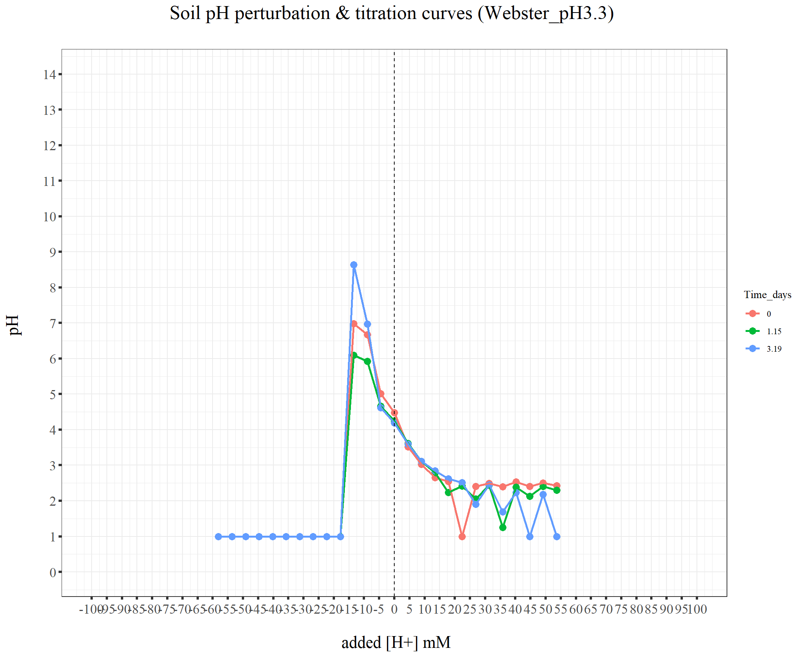
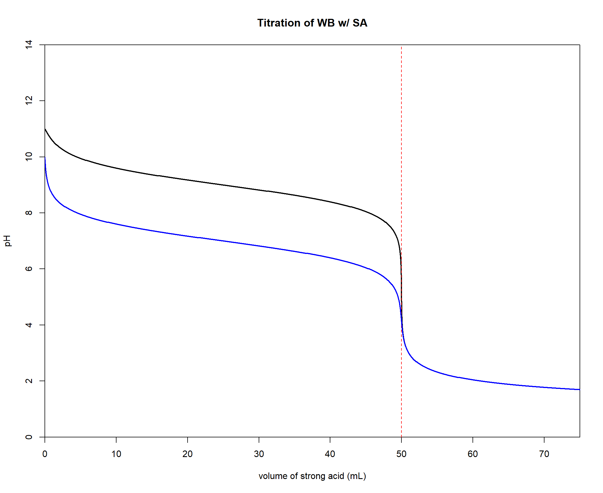

220329_pH_3soil
KiseokUchicago
2022-04-06
Last updated: 2022-04-12
Checks: 7 0
Knit directory: Denit_visualization_R/
This reproducible R Markdown analysis was created with workflowr (version 1.6.2). The Checks tab describes the reproducibility checks that were applied when the results were created. The Past versions tab lists the development history.
Great! Since the R Markdown file has been committed to the Git repository, you know the exact version of the code that produced these results.
Great job! The global environment was empty. Objects defined in the global environment can affect the analysis in your R Markdown file in unknown ways. For reproduciblity it’s best to always run the code in an empty environment.
The command set.seed(20210924) was run prior to running the code in the R Markdown file. Setting a seed ensures that any results that rely on randomness, e.g. subsampling or permutations, are reproducible.
Great job! Recording the operating system, R version, and package versions is critical for reproducibility.
Nice! There were no cached chunks for this analysis, so you can be confident that you successfully produced the results during this run.
Great job! Using relative paths to the files within your workflowr project makes it easier to run your code on other machines.
Great! You are using Git for version control. Tracking code development and connecting the code version to the results is critical for reproducibility.
The results in this page were generated with repository version 0b26fbd. See the Past versions tab to see a history of the changes made to the R Markdown and HTML files.
Note that you need to be careful to ensure that all relevant files for the analysis have been committed to Git prior to generating the results (you can use wflow_publish or wflow_git_commit). workflowr only checks the R Markdown file, but you know if there are other scripts or data files that it depends on. Below is the status of the Git repository when the results were generated:
Ignored files:
Ignored: .Rhistory
Ignored: .Rproj.user/
Untracked files:
Untracked: 220131_df_ammonia_bcf.xlsx
Untracked: data/120321_soil_buffering_capacity_Nichols-B.xlsx
Untracked: data/210911_TOC_sample_plate1.xlsx
Untracked: data/210922_Griess_sample_plate1-investigating.xlsx
Untracked: data/210922_Griess_sample_plate1.xlsx
Untracked: data/210927_TOC_sample_plate1_100ul.xlsx
Untracked: data/210927_TOC_sample_plate1_10ul.xlsx
Untracked: data/210928_Griess_sample_plate1.xlsx
Untracked: data/211005_Griess_sample_plate1.xlsx
Untracked: data/211007_Griess_blank_plate1.xlsx
Untracked: data/211007_Griess_blank_plate2.xlsx
Untracked: data/211008_Griess_blank_plate0.xlsx
Untracked: data/211008_Griess_blank_plate1.xlsx
Untracked: data/211017_Griess_plate0.xlsx
Untracked: data/211017_Griess_plate1.xlsx
Untracked: data/211017_Griess_plate2.xlsx
Untracked: data/211017_Griess_plate3.xlsx
Untracked: data/211017_Griess_plate4.xlsx
Untracked: data/211017_Griess_plate5.xlsx
Untracked: data/211017_Griess_plate6.xlsx
Untracked: data/211017_Griess_plate7.xlsx
Untracked: data/211017_Griess_plate8.xlsx
Untracked: data/211019_Griess_plate1.xlsx
Untracked: data/211020_Griess_plate0.xlsx
Untracked: data/211020_Griess_plate1.xlsx
Untracked: data/211020_df_full_innate.xlsx
Untracked: data/211025_Griess_no3_fit_plate0.xlsx
Untracked: data/211025_Griess_no3_fit_plate1.xlsx
Untracked: data/211025_Griess_plate0.xlsx
Untracked: data/211025_Griess_plate1.xlsx
Untracked: data/211028_Griess_plate1.xlsx
Untracked: data/211028_Griess_plate1_no3_fit.xlsx
Untracked: data/211028_Griess_plate2.xlsx
Untracked: data/211028_Griess_plate2_no3_fit.xlsx
Untracked: data/211028_Griess_plate3.xlsx
Untracked: data/211028_Griess_plate3_no3_fit.xlsx
Untracked: data/211028_Griess_plate4.xlsx
Untracked: data/211028_Griess_plate4_no3_fit.xlsx
Untracked: data/211028_time_table.xlsx
Untracked: data/211127_Griess_SUP1.xlsx
Untracked: data/211127_Griess_SUP11.xlsx
Untracked: data/211127_Griess_SUP3.xlsx
Untracked: data/211127_Griess_SUP5.xlsx
Untracked: data/211127_Griess_SUP7.xlsx
Untracked: data/211127_Griess_SUP9.xlsx
Untracked: data/211127_Griess_plate0.xlsx
Untracked: data/211127_time_table.xlsx
Untracked: data/211128_Griess_plate1.xlsx
Untracked: data/211128_Griess_plate10.xlsx
Untracked: data/211128_Griess_plate11.xlsx
Untracked: data/211128_Griess_plate2.xlsx
Untracked: data/211128_Griess_plate3.xlsx
Untracked: data/211128_Griess_plate4.xlsx
Untracked: data/211128_Griess_plate5.xlsx
Untracked: data/211128_Griess_plate6.xlsx
Untracked: data/211128_Griess_plate7.xlsx
Untracked: data/211128_Griess_plate8.xlsx
Untracked: data/211128_Griess_plate9.xlsx
Untracked: data/211128_time_table.xlsx
Untracked: data/211201_pH_colorimetric.xlsx
Untracked: data/211203_slurry_vs_water_drying_table.xlsx
Untracked: data/211203_slurry_vs_water_drying_time.xlsx
Untracked: data/211208_pH_colorimetric_T3.xlsx
Untracked: data/211208_pH_colorimetric_T4.xlsx
Untracked: data/211208_pH_colorimetric_T5.xlsx
Untracked: data/211208_pH_colorimetric_plate1.xlsx
Untracked: data/211208_pH_colorimetric_plate2.xlsx
Untracked: data/211208_pH_colorimetric_plate3.xlsx
Untracked: data/211208_time_table.xlsx
Untracked: data/211209_OD600_T1.xlsx
Untracked: data/211209_OD600_T2.xlsx
Untracked: data/211209_OD600_T3.xlsx
Untracked: data/211209_time_table.xlsx
Untracked: data/211210_pH_colorimetric_T0.xlsx
Untracked: data/211210_pH_colorimetric_T1.xlsx
Untracked: data/211210_pH_colorimetric_T2.xlsx
Untracked: data/211210_pH_colorimetric_T3.xlsx
Untracked: data/211210_time_table.xlsx
Untracked: data/211218_pH_colorimetric_t0.xlsx
Untracked: data/211218_pH_colorimetric_t1.xlsx
Untracked: data/211218_pH_colorimetric_t2.xlsx
Untracked: data/211218_pH_colorimetric_t3.xlsx
Untracked: data/211218_pH_colorimetric_t4.xlsx
Untracked: data/211218_time_table.xlsx
Untracked: data/211220_Griess_plate1.xlsx
Untracked: data/211220_Griess_plate10.xlsx
Untracked: data/211220_Griess_plate11.xlsx
Untracked: data/211220_Griess_plate2.xlsx
Untracked: data/211220_Griess_plate3.xlsx
Untracked: data/211220_Griess_plate4.xlsx
Untracked: data/211220_Griess_plate5.xlsx
Untracked: data/211220_Griess_plate6.xlsx
Untracked: data/211220_Griess_plate7.xlsx
Untracked: data/211220_Griess_plate8.xlsx
Untracked: data/211220_Griess_plate9.xlsx
Untracked: data/211220_time_table_AU.xlsx
Untracked: data/211220_time_table_BN.xlsx
Untracked: data/211224_TOC_sample_plate1.xlsx
Untracked: data/220103_Griess_T0.xlsx
Untracked: data/220103_Griess_T1.xlsx
Untracked: data/220103_Griess_T11.xlsx
Untracked: data/220103_Griess_T12.xlsx
Untracked: data/220103_Griess_T2.xlsx
Untracked: data/220103_Griess_T3.xlsx
Untracked: data/220103_Griess_T4.xlsx
Untracked: data/220103_Griess_T5.xlsx
Untracked: data/220103_Griess_T6.xlsx
Untracked: data/220103_Griess_T7.xlsx
Untracked: data/220103_Griess_T8.xlsx
Untracked: data/220103_Griess_T9.xlsx
Untracked: data/220103_time_table.xlsx
Untracked: data/220106_Ammonia_sample_plate1.xlsx
Untracked: data/220107-2_Ammonia_sample_plate1.xlsx
Untracked: data/220107-3_Ammonia_sample_plate1.xlsx
Untracked: data/220107-4_Ammonia_sample_plate1.xlsx
Untracked: data/220107-5_Ammonia_sample_plate1.xlsx
Untracked: data/220107-6_Ammonia_sample_plate1.xlsx
Untracked: data/220107-7_Ammonia_sample_plate1.xlsx
Untracked: data/220107-8_Ammonia_sample_plate1.xlsx
Untracked: data/220107-9_Ammonia_sample_plate1.xlsx
Untracked: data/220107_Ammonia_sample_plate1.xlsx
Untracked: data/220108_Ammonia_sample_plate1.xlsx
Untracked: data/220110_Ammonia_sample_plate1.xlsx
Untracked: data/220110_Ammonia_sample_plate2.xlsx
Untracked: data/220111_Ammonia_sample_T0.xlsx
Untracked: data/220111_Ammonia_sample_T1.xlsx
Untracked: data/220111_Ammonia_sample_T2.xlsx
Untracked: data/220111_Ammonia_sample_T3.xlsx
Untracked: data/220111_TOC_sample_plate1.xlsx
Untracked: data/220112_Ammonia_sample_T11.xlsx
Untracked: data/220112_Ammonia_sample_T12.xlsx
Untracked: data/220112_Ammonia_sample_T4.xlsx
Untracked: data/220112_Ammonia_sample_T5.xlsx
Untracked: data/220112_Ammonia_sample_T6.xlsx
Untracked: data/220112_Ammonia_sample_T7.xlsx
Untracked: data/220112_Ammonia_sample_T8.xlsx
Untracked: data/220112_Ammonia_sample_T9.xlsx
Untracked: data/220113_pH_colorimetric_T0.xlsx
Untracked: data/220113_pH_colorimetric_T12.xlsx
Untracked: data/220113_pH_colorimetric_T2.xlsx
Untracked: data/220113_pH_colorimetric_T3.xlsx
Untracked: data/220113_pH_colorimetric_T8.xlsx
Untracked: data/220125_pH_colorimetric_pH1_mu_opt0.099.xlsx
Untracked: data/220125_pH_colorimetric_pH1_using6.66.xlsx
Untracked: data/220125_pH_colorimetric_pH2_mu_opt0.099.xlsx
Untracked: data/220125_pH_colorimetric_pH2_using6.66.xlsx
Untracked: data/220125_time_table.xlsx
Untracked: data/220128_Ammonia_sample_plate1.xlsx
Untracked: data/220128_Ammonia_sample_plate2.xlsx
Untracked: data/220128_Ammonia_sample_plate3.xlsx
Untracked: data/220128_Ammonia_sample_plate4.xlsx
Untracked: data/220128_Ammonia_sample_plate5.xlsx
Untracked: data/220128_Ammonia_sample_plate6.xlsx
Untracked: data/220128_Griess_plate1.xlsx
Untracked: data/220128_Griess_plate2.xlsx
Untracked: data/220128_Griess_plate3.xlsx
Untracked: data/220128_Griess_plate4.xlsx
Untracked: data/220128_Griess_plate5.xlsx
Untracked: data/220128_Griess_plate6.xlsx
Untracked: data/220128_time_table.xlsx
Untracked: data/220131_Ammonia_sample_plate1.xlsx
Untracked: data/220131_Ammonia_sample_plate2.xlsx
Untracked: data/220131_Ammonia_sample_plate3.xlsx
Untracked: data/220131_Ammonia_sample_plate4.xlsx
Untracked: data/220131_Ammonia_sample_plate5.xlsx
Untracked: data/220131_Ammonia_sample_plate6.xlsx
Untracked: data/220131_Griess_plate1.xlsx
Untracked: data/220131_Griess_plate2.xlsx
Untracked: data/220131_Griess_plate3.xlsx
Untracked: data/220131_Griess_plate4.xlsx
Untracked: data/220131_Griess_plate5.xlsx
Untracked: data/220131_Griess_plate6.xlsx
Untracked: data/220131_pH_colorimetric_pH1_mu_opt_T0.xlsx
Untracked: data/220131_pH_colorimetric_pH2_mu_opt_T0.xlsx
Untracked: data/220131_time_table.xlsx
Untracked: data/220327_Griess_plate1.xlsx
Untracked: data/220327_Griess_plate10.xlsx
Untracked: data/220327_Griess_plate11.xlsx
Untracked: data/220327_Griess_plate12.xlsx
Untracked: data/220327_Griess_plate13.xlsx
Untracked: data/220327_Griess_plate14.xlsx
Untracked: data/220327_Griess_plate15.xlsx
Untracked: data/220327_Griess_plate16.xlsx
Untracked: data/220327_Griess_plate2.xlsx
Untracked: data/220327_Griess_plate3.xlsx
Untracked: data/220327_Griess_plate4.xlsx
Untracked: data/220327_Griess_plate5.xlsx
Untracked: data/220327_Griess_plate6.xlsx
Untracked: data/220327_Griess_plate7.xlsx
Untracked: data/220327_Griess_plate8.xlsx
Untracked: data/220327_Griess_plate9.xlsx
Untracked: data/220327_time_table.xlsx
Untracked: data/220329_pH_colorimetric_pH1_mu_opt_T0.xlsx
Untracked: data/220329_pH_colorimetric_pH2_mu_opt_T0.xlsx
Untracked: data/220329_pH_colorimetric_pH3_mu_opt_T0.xlsx
Untracked: data/220329_pH_colorimetric_pH4_mu_opt_T0.xlsx
Untracked: data/220329_pH_colorimetric_pH6_mu_opt_T0.xlsx
Untracked: data/220329_pH_colorimetric_pH7_mu_opt_T0.xlsx
Untracked: data/220407_pH_colorimetric_pH3_half_mu_opt_T0.xlsx
Untracked: data/220407_pH_colorimetric_pH_base_treatment_mu_opt_T0.xlsx
Untracked: data/220407_pH_colorimetric_pH_standard_150ul_mu_opt_T0.xlsx
Untracked: data/220407_pH_colorimetric_pH_standard_300ul_mu_opt_T0.xlsx
Untracked: data/220407_pH_colorimetric_pH_standard_60ul_mu_opt_T0.xlsx
Untracked: data/ForKiseok_from_Dr_Cuhel.xlsx
Untracked: data/ForKiseok_from_Dr_Cuhel_format_edited.xlsx
Untracked: data/OD434_OD585_C_WB_T5_220329.xlsx
Untracked: data/OD434_OD585_WW_C_T0_220329.xlsx
Untracked: data/OD434_OD585_pH3_half_area_220407.xlsx
Untracked: data/OD434_OD585_pH_base_treated_T0_220407.xlsx
Untracked: data/SPNa_86437_021122_edit.xlsx
Untracked: data/SPNa_86437_021122_edit2.xlsx
Untracked: data/TOC_TN_measurement_2_labs_211014.xlsx
Untracked: data/dry_weight_curve(9.5.21).xlsx
Untracked: data/pH_data(11.17.21)-Midway_etc.xlsx
Untracked: data/pH_data(12.6.21)-Midway_incubation_endpoint.xlsx
Untracked: data/pH_data(9.14.21).xlsx
Untracked: data/pH_data(9.28.21).xlsx
Untracked: data/pH_standard_150ul_220407.xlsx
Untracked: data/pH_standard_300ul_220407.xlsx
Untracked: data/pH_standard_60ul_220407.xlsx
Untracked: past_figures/
Unstaged changes:
Modified: analysis/220131_Ammonia_pH_perturbation3.Rmd
Note that any generated files, e.g. HTML, png, CSS, etc., are not included in this status report because it is ok for generated content to have uncommitted changes.
These are the previous versions of the repository in which changes were made to the R Markdown (analysis/220329_pH_3soil.Rmd) and HTML (docs/220329_pH_3soil.html) files. If you’ve configured a remote Git repository (see ?wflow_git_remote), click on the hyperlinks in the table below to view the files as they were in that past version.
| File | Version | Author | Date | Message |
|---|---|---|---|---|
| Rmd | 0b26fbd | KiseokUchicago | 2022-04-12 | wflow_publish(c(“analysis/220327_Griess_3_soil_pH_perturbation.Rmd”, |
Time series analysis - pH perturbation of 3 soils
Researcher: Kiseok Lee
Experiment Date: 3/6/22 - 3/10/22 (5 days)
Analysis Date: 4/6/21 Lab: Seppe Kuehn
1. 20ul of 0.5M HCl or 0.05M NaOH was incrementally added
df_pH1 <- openxlsx::read.xlsx("data/220329_pH_colorimetric_pH1_mu_opt_T0.xlsx")
df_pH2 <- openxlsx::read.xlsx("data/220329_pH_colorimetric_pH2_mu_opt_T0.xlsx")
df_pH3 <- openxlsx::read.xlsx("data/220329_pH_colorimetric_pH3_mu_opt_T0.xlsx")
df_pH4 <- openxlsx::read.xlsx("data/220329_pH_colorimetric_pH4_mu_opt_T0.xlsx")
df_pH6 <- openxlsx::read.xlsx("data/220329_pH_colorimetric_pH6_mu_opt_T0.xlsx")
df_pH7 <- openxlsx::read.xlsx("data/220329_pH_colorimetric_pH7_mu_opt_T0.xlsx")
dim(df_pH1)[1] 96 12dim(df_pH2)[1] 96 12dim(df_pH3)[1] 96 12dim(df_pH4)[1] 96 12dim(df_pH6)[1] 96 12dim(df_pH7)[1] 96 12# filter wells with too much soil
# df_pH1 %<>% filter(!(Well %in%
# c('A05'))) # Filter defect A05 df_pH2
# %<>% filter(!(Well %in% c('F11'))) #
# Less than 90ul of sample
df_pH3 %<>%
filter(!(Well %in% c("H01"))) # Filter defect A05
# df_pH4 %<>% filter(!(Well %in%
# c('F11'))) # Less than 90ul of sample
# df_pH6 %<>% filter(!(Well %in%
# c('A05'))) # Filter defect A05 df_pH7
# %<>% filter(!(Well %in% c('F11'))) #
# Less than 90ul of sample
df_time <- openxlsx::read.xlsx("data/220327_time_table.xlsx")
df_time$Time_hours <- round(df_time$Time_hours,
1)
df_time$Time_days <- round(df_time$Time_days,
2)
df_pH_T <- rbind(df_pH1, df_pH2, df_pH3,
df_pH4, df_pH6, df_pH7)
df_pH_T %<>%
left_join(df_time, by = c(Time_point = "Time_point"))
dim(df_pH_T) # 575[1] 575 16# remove NA
dim(df_pH_T) # 575[1] 575 16df_pH_T[is.na(df_pH_T)] [1] NA NA NA NA NA NA NA NA NA NA NA NA NA NA NA NA NA NA NA NA NA NA NA NA NA
[26] NA NA NA NA NA NA NA NA NA NA NA NA NA NA NA NA NA NA NA NA NA NA NA NA NA
[51] NA NA NA NA NA NA NA NA NA NA NA NA NA NA NA NA NA NA NA NA NA NA NA NA NA
[76] NA NA NA NA NA NA NA NA NA NA NA NA NA NA NA NA NA NA NA NA NA NA NA NA NA
[101] NA NA NA NA NA NA NA NA NA NA NA NA NA NA NA NA NA NA NA NA NA NA NA NA NA
[126] NA NA NA NA NA NA NA NA NA NA NA NA NA NA NA NA NA NA NA NA NA NA NA NA NA
[151] NA NA NA NA NA NA NA NA NA NA NA NA NA NA NA NA NA NA NA NA NAdf_na <- df_pH_T[rowSums(is.na(df_pH_T)) >
0, ]
# df_pH_T <- na.omit(df_pH_T)
df_pH_T <- df_pH_T[rowSums(is.na(df_pH_T)) ==
0, ]
dim(df_pH_T) # 548[1] 548 16# Change the soil names to include pH
# df_pH_T$Soil <-
# str_replace(df_pH_T$Soil,'NicholsC','NicholsC_pH7')
# df_pH_T$Soil <-
# str_replace(df_pH_T$Soil,'Allandale','Allandale_pH4')
# df_pH_T$Soil <- factor(df_pH_T$Soil,
# levels = c('NicholsC_pH7',
# 'Allandale_pH4'))
# mols and molarity unit conversion
# test
df_pH <- df_pH_T %>%
filter(Titration_type %in% c("NaOH",
"HCl"))
dim(df_pH) # 160[1] 404 16Added_Volume <- 1.7 # ml
Soil_mg <- 0.85
moisture_percent_1 = 63.1 # Webster
Added_Volume + Soil_mg * (moisture_percent_1/100)[1] 2.23635moisture_percent_2 = 6.8 # WarrenWoods1
Added_Volume + Soil_mg * (moisture_percent_2/100)[1] 1.7578moisture_percent_3 = 9 # Crerar7
Added_Volume + Soil_mg * (moisture_percent_3/100)[1] 1.7765df_pH$Added_ul <- ifelse(df_pH$Titration_type ==
"NaOH", -1 * df_pH$Added_ul, df_pH$Added_ul) # HCl is +, NaOH is -
df_pH %<>%
mutate(H_mol = Concentration_M * Added_ul *
10^(-6)) # Calculate H mol
df_pH$Volume <- ifelse(df_pH$Soil == "Webster_pH3.3",
Added_Volume + Soil_mg * (moisture_percent_1/100),
ifelse(df_pH$Soil == "WarrenWoods1_pH5.23",
Added_Volume + Soil_mg * (moisture_percent_2/100),
ifelse(df_pH$Soil == "Crerar7_pH8.05",
Added_Volume + Soil_mg * (moisture_percent_3/100),
0))) # Calc total volume# df_pH$Volume %>% unique()
df_pH %<>%
mutate(H_Molarity = H_mol/(Volume * 10^(-3)))
df_pH %<>%
mutate(H_mM = H_Molarity * 1000)
# openxlsx::write.xlsx(df_pH,
# 'df_pH.xlsx')
# how many levels of H_mM?
df_pH %>%
filter(Soil == "Webster_pH3.3") %>%
select(H_mM) %>%
unique() %>%
arrange(H_mM) H_mM
1 -58.130436
2 -53.658864
3 -49.187292
4 -44.715720
5 -40.244148
6 -35.772576
7 -31.301004
8 -26.829432
9 -22.357860
10 -17.886288
11 -13.414716
12 -8.943144
13 -4.471572
14 0.000000
15 4.471572
16 8.943144
17 13.414716
18 17.886288
19 22.357860
20 26.829432
21 31.301004
22 35.772576
23 40.244148
24 44.715720
25 49.187292
26 53.658864df_pH %>%
filter(Soil == "WarrenWoods1_pH5.23") %>%
select(H_mM) %>%
unique() %>%
arrange(H_mM) H_mM
1 -96.711799
2 -91.022869
3 -85.333940
4 -79.645011
5 -73.956081
6 -68.267152
7 -62.578223
8 -56.889293
9 -51.200364
10 -45.511435
11 -39.822505
12 -34.133576
13 -28.444647
14 -22.755717
15 -17.066788
16 -11.377859
17 -5.688929
18 0.000000
19 5.688929
20 11.377859
21 17.066788
22 22.755717
23 28.444647
24 34.133576
25 39.822505
26 45.511435
27 51.200364
28 56.889293
29 62.578223
30 68.267152
31 73.956081
32 79.645011
33 85.333940
34 91.022869df_pH %>%
filter(Soil == "Crerar7_pH8.05") %>%
select(H_mM) %>%
unique() %>%
arrange(H_mM) H_mM
1 -95.693780
2 -90.064734
3 -84.435688
4 -78.806642
5 -73.177596
6 -67.548551
7 -61.919505
8 -56.290459
9 -50.661413
10 -45.032367
11 -39.403321
12 -33.774275
13 -28.145229
14 -22.516184
15 -16.887138
16 -11.258092
17 -5.629046
18 0.000000
19 5.629046
20 11.258092
21 16.887138
22 22.516184
23 28.145229
24 33.774275
25 39.403321
26 45.032367
27 50.661413
28 56.290459
29 61.919505
30 67.548551
31 73.177596
32 78.806642
33 84.435688
34 90.064734colnames(df_pH) [1] "Well" "Nitrite_input" "Nitrate_input" "Ammonium_input"
[5] "Soil" "Sample_type" "Titration_type" "Unit"
[9] "Concentration_M" "Added_ul" "Time_point" "pH_colorimetric"
[13] "Date" "Time_minutes" "Time_hours" "Time_days"
[17] "H_mol" "Volume" "H_Molarity" "H_mM" # average the pH 220329 only used 1
# replicate. So, no need to average.
# df_pH_ave <- df_pH %>%
# group_by(Nitrite_input,
# Nitrate_input, Soil, Titration_type,
# Concentration_M, Added_ul,
# Sample_type, H_mol, H_Molarity, H_mM,
# Time_point, Time_minutes, Time_hours,
# Time_days) %>% summarise(Ave_pH =
# mean(pH_colorimetric), Std_pH =
# sd(pH_colorimetric)) %>% ungroup()
# colnames(df_pH_ave)2. Plot titration curves
Plot one time point at the time
df_time Time_point Date Time_minutes Time_hours Time_days
1 WB_T0 44626.64 0 0.0 0.00
2 WB_T1 44626.78 202 3.4 0.14
3 WB_T2 44626.91 392 6.5 0.27
4 WB_T3 44627.05 587 9.8 0.41
5 WB_T4 44627.48 1212 20.2 0.84
6 WB_T5 44627.79 1662 27.7 1.15
7 WB_T6 44628.04 2022 33.7 1.40
8 WB_T7 44628.28 2362 39.4 1.64
9 WB_T8 44628.90 3252 54.2 2.26
10 WB_T9 44629.82 4587 76.4 3.19
11 WW_T0 44626.67 0 0.0 0.00
12 WW_T1 44626.82 210 3.5 0.15
13 WW_T2 44626.95 400 6.7 0.28
14 WW_T3 44627.08 580 9.7 0.40
15 WW_T4 44627.49 1175 19.6 0.82
16 WW_T5 44627.80 1625 27.1 1.13
17 WW_T6 44628.05 1980 33.0 1.38
18 WW_T7 44628.28 2320 38.7 1.61
19 WW_T8 44628.91 3220 53.7 2.24
20 WW_T9 44629.34 3845 64.1 2.67
21 WW_T10 44630.81 5950 99.2 4.13
22 C_T0 44626.71 0 0.0 0.00
23 C_T1 44626.83 180 3.0 0.12
24 C_T2 44626.97 370 6.2 0.26
25 C_T3 44627.09 550 9.2 0.38
26 C_T4 44627.50 1140 19.0 0.79
27 C_T5 44627.81 1590 26.5 1.10
28 C_T6 44628.06 1940 32.3 1.35
29 C_T7 44628.29 2280 38.0 1.58
30 C_T8 44628.92 3190 53.2 2.22
31 C_T9 44629.85 4530 75.5 3.15
32 C_T10 44630.82 5915 98.6 4.11# df_T0 <- df_pH_ave %>%
# filter(Time_point == 'T0')
# Plot it in one plot - time series
df_plot <- df_pH
# df_plot$Time_days <-
# factor(df_plot$Time_days)
levels = c("WB_T0", "WB_T5", "WB_T9", "WW_T0",
"WW_T5", "WW_T8", "WW_T10", "C_T0", "C_T5",
"C_T8", "C_T9", "C_T10")
df_plot$Time_point <- factor(df_plot$Time_point,
levels = levels)
# unique(df_pH$Time_point)
ggplot(df_plot, aes(x = H_mM, y = pH_colorimetric,
color = Time_point, group = Time_point)) +
geom_point(size = 3, shape = 16, alpha = 1) +
# geom_errorbar(aes(ymin=Ave_pH -
# Std_pH, ymax=Ave_pH + Std_pH),
# width=.05)+
geom_line(size = 1) + # scale_color_brewer(palette='Set1') + geom_line(size
geom_line(size = 1) + # scale_color_brewer(palette='Set1') + =
geom_line(size = 1) + # scale_color_brewer(palette='Set1') + 1)
geom_line(size = 1) + # scale_color_brewer(palette='Set1') + +
geom_line(size = 1) + # scale_color_brewer(palette='Set1') + #
geom_line(size = 1) + # scale_color_brewer(palette='Set1') + scale_color_brewer(palette='Set1')
geom_line(size = 1) + # scale_color_brewer(palette='Set1') + +
ylab("pH \n") + xlab("\n added [H+] mM") +
scale_x_continuous(breaks = seq(-100,
100, 5)) + scale_y_continuous(breaks = seq(0,
14, 1), limits = c(0, 14)) + ggtitle("Soil pH perturbation & titration curves (3 soil: WB(pH 3.3), WW(pH 5.23), C(pH 8.05)) \n") +
# label geom_text(aes(label =
# pH_colorimetric), size = 3, vjust
# = -1.5, family='serif',
# show.legend = FALSE)+
mytheme_2d# Remove pH 1 reads
colnames(df_plot) [1] "Well" "Nitrite_input" "Nitrate_input" "Ammonium_input"
[5] "Soil" "Sample_type" "Titration_type" "Unit"
[9] "Concentration_M" "Added_ul" "Time_point" "pH_colorimetric"
[13] "Date" "Time_minutes" "Time_hours" "Time_days"
[17] "H_mol" "Volume" "H_Molarity" "H_mM" df_plot_no1 <- df_plot %>%
filter(!(pH_colorimetric == 1))
ggplot(df_plot_no1, aes(x = H_mM, y = pH_colorimetric,
color = Time_point, group = Time_point)) +
geom_point(size = 3, shape = 16, alpha = 1) +
# geom_errorbar(aes(ymin=Ave_pH -
# Std_pH, ymax=Ave_pH + Std_pH),
# width=.05)+
geom_line(size = 1) + geom_vline(xintercept = 0,
linetype = "dashed", color = "black") +
# scale_color_brewer(palette='Set1')
# +
ylab("pH \n") + xlab("\n added [H+] mM") +
scale_x_continuous(breaks = seq(-100,
100, 5), limits = c(-100, 100)) +
scale_y_continuous(breaks = seq(0, 14,
1), limits = c(0, 14)) + ggtitle("Soil pH perturbation & titration curves (3 soil: WB(pH 3.3), WW(pH 5.23), C(pH 8.05)) \n") +
# label geom_text(aes(label =
# pH_colorimetric), size = 3, vjust
# = -1.5, family='serif',
# show.legend = FALSE)+
mytheme_2d# average the no acid base one.
# df_plot <- df_pH %>% select(H_mM,
# NO3_mM, NO2_mM, Soil, Time_hours)
df_plot %>%
filter(H_mM == 0) %>%
dim()[1] 35 20df_plot %>%
filter(H_mM == 0) %>%
group_by(H_mM, Soil, Time_hours) %>%
summarize(pH_colorimetric = mean(pH_colorimetric)) %>%
ungroup()# A tibble: 12 x 4
H_mM Soil Time_hours pH_colorimetric
<dbl> <chr> <dbl> <dbl>
1 0 Crerar7_pH8.05 0 7.79
2 0 Crerar7_pH8.05 26.5 4.47
3 0 Crerar7_pH8.05 53.2 8.33
4 0 Crerar7_pH8.05 75.5 8.36
5 0 Crerar7_pH8.05 98.6 8.29
6 0 WarrenWoods1_pH5.23 0 6.47
7 0 WarrenWoods1_pH5.23 27.1 6.83
8 0 WarrenWoods1_pH5.23 53.7 6.68
9 0 WarrenWoods1_pH5.23 99.2 6.64
10 0 Webster_pH3.3 0 4.48
11 0 Webster_pH3.3 27.7 4.24
12 0 Webster_pH3.3 76.4 4.19df_sub <- df_plot %>%
filter(H_mM == 0) %>%
group_by(H_mM, Soil, Time_hours) %>%
summarize(pH_colorimetric = mean(pH_colorimetric)) %>%
ungroup()
df_main <- df_plot %>%
filter(H_mM != 0) %>%
select(-Well)
dim(df_plot)[1] 404 20dim(df_main)[1] 369 19# put other column data back to df_sub
df_plot %>%
select(-pH_colorimetric, -Well) %>%
filter(H_mM == 0) %>%
unique() Nitrite_input Nitrate_input Ammonium_input Soil Sample_type
1 0 2 0 WarrenWoods1_pH5.23 Slurry
4 0 2 0 Crerar7_pH8.05 Slurry
7 0 2 0 Webster_pH3.3 Slurry
8 0 2 0 WarrenWoods1_pH5.23 Slurry
13 0 2 0 Webster_pH3.3 Slurry
16 0 2 0 Crerar7_pH8.05 Slurry
18 0 2 0 WarrenWoods1_pH5.23 Slurry
21 0 2 0 Crerar7_pH8.05 Slurry
24 0 2 0 Webster_pH3.3 Slurry
27 0 2 0 Crerar7_pH8.05 Slurry
30 0 2 0 WarrenWoods1_pH5.23 Slurry
33 0 2 0 Crerar7_pH8.05 Slurry
Titration_type Unit Concentration_M Added_ul Time_point Date
1 HCl 0 0 20 WW_T0 44626.67
4 HCl 0 0 20 C_T0 44626.71
7 HCl 0 0 20 WB_T0 44626.64
8 HCl 0 0 20 WW_T5 44627.80
13 HCl 0 0 20 WB_T5 44627.79
16 HCl 0 0 20 C_T5 44627.81
18 HCl 0 0 20 WW_T8 44628.91
21 HCl 0 0 20 C_T8 44628.92
24 HCl 0 0 20 WB_T9 44629.82
27 HCl 0 0 20 C_T9 44629.85
30 HCl 0 0 20 WW_T10 44630.81
33 HCl 0 0 20 C_T10 44630.82
Time_minutes Time_hours Time_days H_mol Volume H_Molarity H_mM
1 0 0.0 0.00 0 1.75780 0 0
4 0 0.0 0.00 0 1.77650 0 0
7 0 0.0 0.00 0 2.23635 0 0
8 1625 27.1 1.13 0 1.75780 0 0
13 1662 27.7 1.15 0 2.23635 0 0
16 1590 26.5 1.10 0 1.77650 0 0
18 3220 53.7 2.24 0 1.75780 0 0
21 3190 53.2 2.22 0 1.77650 0 0
24 4587 76.4 3.19 0 2.23635 0 0
27 4530 75.5 3.15 0 1.77650 0 0
30 5950 99.2 4.13 0 1.75780 0 0
33 5915 98.6 4.11 0 1.77650 0 0df_sub2 <- df_sub %>%
left_join(df_plot %>%
select(-pH_colorimetric, -Well) %>%
filter(H_mM == 0) %>%
unique(), by = c(H_mM = "H_mM", Soil = "Soil",
Time_hours = "Time_hours"))
df_plot2 <- rbind(df_main, df_sub2)
dim(df_plot2) # 381[1] 381 19# plot by soil sample:
# WarrenWoods1_pH5.23
df_plot_WW <- df_plot2 %>%
filter(Soil == "WarrenWoods1_pH5.23")
df_plot_WW$Time_days <- factor(df_plot_WW$Time_days)
ggplot(df_plot_WW, aes(x = H_mM, y = pH_colorimetric,
color = Time_days, group = Time_days)) +
geom_point(size = 3, shape = 16, alpha = 1) +
# geom_errorbar(aes(ymin=Ave_pH -
# Std_pH, ymax=Ave_pH + Std_pH),
# width=.05)+
geom_line(size = 1) + geom_vline(xintercept = 0,
linetype = "dashed", color = "black") +
# scale_color_brewer(palette='Set1')
# +
ylab("pH \n") + xlab("\n added [H+] mM") +
scale_x_continuous(breaks = seq(-100,
100, 5), limits = c(-100, 100)) +
scale_y_continuous(breaks = seq(0, 14,
1), limits = c(0, 14)) + ggtitle("Soil pH perturbation & titration curves (WarrenWoods1_pH5.23) \n") +
# label geom_text(aes(label =
# pH_colorimetric), size = 3, vjust
# = -1.5, family='serif',
# show.legend = FALSE)+
mytheme_2d# plot by soil sample: Webster_pH3.3
df_plot_WB <- df_plot2 %>%
filter(Soil == "Webster_pH3.3")
df_plot_WB$Time_days <- factor(df_plot_WB$Time_days)
ggplot(df_plot_WB, aes(x = H_mM, y = pH_colorimetric,
color = Time_days, group = Time_days)) +
geom_point(size = 3, shape = 16, alpha = 1) +
# geom_errorbar(aes(ymin=Ave_pH -
# Std_pH, ymax=Ave_pH + Std_pH),
# width=.05)+
geom_line(size = 1) + geom_vline(xintercept = 0,
linetype = "dashed", color = "black") +
# scale_color_brewer(palette='Set1')
# +
ylab("pH \n") + xlab("\n added [H+] mM") +
scale_x_continuous(breaks = seq(-100,
100, 5), limits = c(-100, 100)) +
scale_y_continuous(breaks = seq(0, 14,
1), limits = c(0, 14)) + ggtitle("Soil pH perturbation & titration curves (Webster_pH3.3) \n") +
# label geom_text(aes(label =
# pH_colorimetric), size = 3, vjust
# = -1.5, family='serif',
# show.legend = FALSE)+
mytheme_2d
# plot by soil sample: Crerar7_pH8.05
df_plot_C <- df_plot2 %>%
filter(Soil == "Crerar7_pH8.05")
df_plot_C$Time_days <- factor(df_plot_C$Time_days)
ggplot(df_plot_C, aes(x = H_mM, y = pH_colorimetric,
color = Time_days, group = Time_days)) +
geom_point(size = 3, shape = 16, alpha = 1) +
# geom_errorbar(aes(ymin=Ave_pH -
# Std_pH, ymax=Ave_pH + Std_pH),
# width=.05)+
geom_line(size = 1) + geom_vline(xintercept = 0,
linetype = "dashed", color = "black") +
# scale_color_brewer(palette='Set1')
# +
ylab("pH \n") + xlab("\n added [H+] mM") +
scale_x_continuous(breaks = seq(-100,
100, 5), limits = c(-100, 100)) +
scale_y_continuous(breaks = seq(0, 14,
1), limits = c(0, 14)) + ggtitle("Soil pH perturbation & titration curves (Crerar7_pH8.05) \n") +
# label geom_text(aes(label =
# pH_colorimetric), size = 3, vjust
# = -1.5, family='serif',
# show.legend = FALSE)+
mytheme_2d2.1. plot OD434 and OD585
df_OD <- read.xlsx("data/OD434_OD585_WW_C_T0_220329.xlsx")
colnames(df_OD)[1] <- "Well"
df_OD_merged <- df_OD %>%
left_join(df_plot %>%
filter(Time_point %in% c("WW_T0",
"C_T0")), by = c(Well = "Well"))
df_OD_C <- df_OD_merged %>%
filter(Soil == "Crerar7_pH8.05")
# plot OD434 and its change
ggplot(df_OD_C, aes(x = H_mM, y = OD434,
color = Time_days, group = Time_days)) +
geom_point(size = 3, shape = 16, alpha = 1) +
# geom_errorbar(aes(ymin=Ave_pH -
# Std_pH, ymax=Ave_pH + Std_pH),
# width=.05)+
geom_line(size = 1) + geom_vline(xintercept = 0,
linetype = "dashed", color = "black") +
# scale_color_brewer(palette='Set1')
# +
ylab("pH \n") + xlab("\n added [H+] mM") +
# scale_x_continuous(breaks =
# seq(-100,100,5), limits=c(-100,
# 100))+ scale_y_continuous(breaks
# = seq(0,14,1), limits=c(0, 14))+
ggtitle("Soil pH perturbation & titration curves (Crerar7_pH8.05) \n") +
# label geom_text(aes(label =
# pH_colorimetric), size = 3, vjust
# = -1.5, family='serif',
# show.legend = FALSE)+
mytheme_2d# use this instead: OD434
plot(df_OD_C$H_mM, df_OD_C$OD434_background,
col = "orange", lty = 1, pch = 17, lwd = 1,
main = "OD434 (Crerar7_T0 soil)", ylab = "OD434",
xlab = "added [H+] mM", ylim = c(-1,
3), cex = 2)
points(df_OD_C$H_mM, df_OD_C$OD434, col = "blue",
pch = 17, cex = 2)
points(df_OD_C$H_mM, df_OD_C$OD434_subtraction,
col = "red", pch = 17, lwd = 1)
legend("topright", legend = c("Background",
"After dye", "(After dye - Background)"),
col = c("orange", "blue", "red"), bty = "n",
pch = 17, cex = 1, box.lty = 0)# use this instead
plot(df_OD_C$H_mM, df_OD_C$OD585_background,
col = "orange", lty = 1, pch = 16, lwd = 1,
main = "OD585 (Crerar7_T0 soil)", ylab = "OD585",
xlab = "added [H+] mM", ylim = c(0, 3),
cex = 2)
points(df_OD_C$H_mM, df_OD_C$OD585, col = "blue",
pch = 16, cex = 2)
points(df_OD_C$H_mM, df_OD_C$OD585_subtraction,
col = "red", pch = 16, lwd = 1)
legend("topright", legend = c("Background",
"After dye", "(After dye - Background)"),
col = c("orange", "blue", "red"), bty = "n",
pch = 16, cex = 1, box.lty = 0)# R_multi?
plot(df_OD_C$H_mM, df_OD_C$R_multi, col = "red",
lty = 1, pch = 15, lwd = 1, main = "R_multi (Crerar7_T0 soil)",
ylab = "R_multi", xlab = "added [H+] mM",
cex = 2)# show R_multi and a_434, a_585
plot(df_OD_C$H_mM, df_OD_C$R_multi, col = "red",
lty = 1, pch = 15, lwd = 1, main = "R_multi (Crerar7_T0 soil)",
ylab = "R_multi", xlab = "added [H+] mM",
ylim = c(-20, 100), cex = 2)
abline(a = 0, b = 0)
points(df_OD_C$H_mM, df_OD_C$OD434_subtraction,
col = "red", pch = 17)
points(df_OD_C$H_mM, df_OD_C$OD585_subtraction,
col = "red", pch = 16, lwd = 1)
legend("topright", legend = c("OD434_corrected",
"OC585_corrected", "R_multi = OD585/OD434"),
pch = c(17, 16, 15), bty = "n", col = "red",
cex = 1.2, box.lty = 0)# R_multi and pH
plot(df_OD_C$pH_colorimetric, df_OD_C$R_multi,
col = "royalblue", lty = 1, pch = 18,
lwd = 1, main = "R_multi (Crerar7_T0 soil)",
ylab = "R_multi", xlab = "pH_colorimetric",
cex = 1.5)Plot by time point
# df_T0 <- df_pH_ave %>%
# filter(Time_point == 'T0')
df_T0 <- df_pH %>%
filter(Time_point == "T0")
ggplot(df_T0, aes(x = H_mM, y = pH_colorimetric,
color = Soil, group = Soil)) + geom_point(size = 3,
shape = 16, alpha = 1) + # geom_errorbar(aes(ymin=Ave_pH - Std_pH, ymax=Ave_pH + Std_pH), width=.05)+ shape
shape = 16, alpha = 1) + # geom_errorbar(aes(ymin=Ave_pH - Std_pH, ymax=Ave_pH + Std_pH), width=.05)+ =
shape = 16, alpha = 1) + # geom_errorbar(aes(ymin=Ave_pH - Std_pH, ymax=Ave_pH + Std_pH), width=.05)+ 16,
shape = 16, alpha = 1) + # geom_errorbar(aes(ymin=Ave_pH - Std_pH, ymax=Ave_pH + Std_pH), width=.05)+ alpha
shape = 16, alpha = 1) + # geom_errorbar(aes(ymin=Ave_pH - Std_pH, ymax=Ave_pH + Std_pH), width=.05)+ =
shape = 16, alpha = 1) + # geom_errorbar(aes(ymin=Ave_pH - Std_pH, ymax=Ave_pH + Std_pH), width=.05)+ 1)
shape = 16, alpha = 1) + # geom_errorbar(aes(ymin=Ave_pH - Std_pH, ymax=Ave_pH + Std_pH), width=.05)+ +
shape = 16, alpha = 1) + # geom_errorbar(aes(ymin=Ave_pH - Std_pH, ymax=Ave_pH + Std_pH), width=.05)+ #
shape = 16, alpha = 1) + # geom_errorbar(aes(ymin=Ave_pH - Std_pH, ymax=Ave_pH + Std_pH), width=.05)+ geom_errorbar(aes(ymin=Ave_pH
shape = 16, alpha = 1) + # geom_errorbar(aes(ymin=Ave_pH - Std_pH, ymax=Ave_pH + Std_pH), width=.05)+ -
shape = 16, alpha = 1) + # geom_errorbar(aes(ymin=Ave_pH - Std_pH, ymax=Ave_pH + Std_pH), width=.05)+ Std_pH,
shape = 16, alpha = 1) + # geom_errorbar(aes(ymin=Ave_pH - Std_pH, ymax=Ave_pH + Std_pH), width=.05)+ ymax=Ave_pH
shape = 16, alpha = 1) + # geom_errorbar(aes(ymin=Ave_pH - Std_pH, ymax=Ave_pH + Std_pH), width=.05)+ +
shape = 16, alpha = 1) + # geom_errorbar(aes(ymin=Ave_pH - Std_pH, ymax=Ave_pH + Std_pH), width=.05)+ Std_pH),
shape = 16, alpha = 1) + # geom_errorbar(aes(ymin=Ave_pH - Std_pH, ymax=Ave_pH + Std_pH), width=.05)+ width=.05)+
geom_line(size = 1) + # scale_color_brewer(palette='Set1') + geom_line(size
geom_line(size = 1) + # scale_color_brewer(palette='Set1') + =
geom_line(size = 1) + # scale_color_brewer(palette='Set1') + 1)
geom_line(size = 1) + # scale_color_brewer(palette='Set1') + +
geom_line(size = 1) + # scale_color_brewer(palette='Set1') + #
geom_line(size = 1) + # scale_color_brewer(palette='Set1') + scale_color_brewer(palette='Set1')
geom_line(size = 1) + # scale_color_brewer(palette='Set1') + +
ylab("pH \n") + xlab("\n added [H+] mM") +
scale_y_continuous(breaks = seq(0, 12,
1), limits = c(0, 12)) + ggtitle("[T0] Soil pH perturbation (Anaerobic incubation) \n") +
# label geom_text(aes(label =
# pH_colorimetric), size = 3, vjust
# = -1.5, family='serif',
# show.legend = FALSE)+
mytheme_2d
# df_T2 <- df_pH_ave %>%
# filter(Time_point == 'T2')
df_T4 <- df_pH %>%
filter(Time_point == "T4")
ggplot(df_T4, aes(x = H_mM, y = pH_colorimetric,
color = Soil, group = Soil)) + geom_point(size = 3,
shape = 16, alpha = 1) + # geom_errorbar(aes(ymin=Ave_pH - Std_pH, ymax=Ave_pH + Std_pH), width=.05)+ shape
shape = 16, alpha = 1) + # geom_errorbar(aes(ymin=Ave_pH - Std_pH, ymax=Ave_pH + Std_pH), width=.05)+ =
shape = 16, alpha = 1) + # geom_errorbar(aes(ymin=Ave_pH - Std_pH, ymax=Ave_pH + Std_pH), width=.05)+ 16,
shape = 16, alpha = 1) + # geom_errorbar(aes(ymin=Ave_pH - Std_pH, ymax=Ave_pH + Std_pH), width=.05)+ alpha
shape = 16, alpha = 1) + # geom_errorbar(aes(ymin=Ave_pH - Std_pH, ymax=Ave_pH + Std_pH), width=.05)+ =
shape = 16, alpha = 1) + # geom_errorbar(aes(ymin=Ave_pH - Std_pH, ymax=Ave_pH + Std_pH), width=.05)+ 1)
shape = 16, alpha = 1) + # geom_errorbar(aes(ymin=Ave_pH - Std_pH, ymax=Ave_pH + Std_pH), width=.05)+ +
shape = 16, alpha = 1) + # geom_errorbar(aes(ymin=Ave_pH - Std_pH, ymax=Ave_pH + Std_pH), width=.05)+ #
shape = 16, alpha = 1) + # geom_errorbar(aes(ymin=Ave_pH - Std_pH, ymax=Ave_pH + Std_pH), width=.05)+ geom_errorbar(aes(ymin=Ave_pH
shape = 16, alpha = 1) + # geom_errorbar(aes(ymin=Ave_pH - Std_pH, ymax=Ave_pH + Std_pH), width=.05)+ -
shape = 16, alpha = 1) + # geom_errorbar(aes(ymin=Ave_pH - Std_pH, ymax=Ave_pH + Std_pH), width=.05)+ Std_pH,
shape = 16, alpha = 1) + # geom_errorbar(aes(ymin=Ave_pH - Std_pH, ymax=Ave_pH + Std_pH), width=.05)+ ymax=Ave_pH
shape = 16, alpha = 1) + # geom_errorbar(aes(ymin=Ave_pH - Std_pH, ymax=Ave_pH + Std_pH), width=.05)+ +
shape = 16, alpha = 1) + # geom_errorbar(aes(ymin=Ave_pH - Std_pH, ymax=Ave_pH + Std_pH), width=.05)+ Std_pH),
shape = 16, alpha = 1) + # geom_errorbar(aes(ymin=Ave_pH - Std_pH, ymax=Ave_pH + Std_pH), width=.05)+ width=.05)+
geom_line(size = 1) + # scale_color_brewer(palette='Set1') + geom_line(size
geom_line(size = 1) + # scale_color_brewer(palette='Set1') + =
geom_line(size = 1) + # scale_color_brewer(palette='Set1') + 1)
geom_line(size = 1) + # scale_color_brewer(palette='Set1') + +
geom_line(size = 1) + # scale_color_brewer(palette='Set1') + #
geom_line(size = 1) + # scale_color_brewer(palette='Set1') + scale_color_brewer(palette='Set1')
geom_line(size = 1) + # scale_color_brewer(palette='Set1') + +
ylab("pH \n") + xlab("\n added [H+] mM") +
scale_y_continuous(breaks = seq(0, 12,
1), limits = c(0, 12)) + ggtitle("[T4] Soil pH perturbation (Anaerobic incubation) \n") +
# label geom_text(aes(label =
# pH_colorimetric), size = 3, vjust
# = -1.5, family='serif',
# show.legend = FALSE)+
mytheme_2d
# df_T7 <- df_pH_ave %>%
# filter(Time_point == 'T7')
df_T7 <- df_pH %>%
filter(Time_point == "T7")
df_T7 %>%
filter(H_mM == 0)
ggplot(df_T7, aes(x = H_mM, y = pH_colorimetric,
color = Soil, group = Soil)) + geom_point(size = 3,
shape = 16, alpha = 1) + # geom_errorbar(aes(ymin=Ave_pH - Std_pH, ymax=Ave_pH + Std_pH), width=.05)+ shape
shape = 16, alpha = 1) + # geom_errorbar(aes(ymin=Ave_pH - Std_pH, ymax=Ave_pH + Std_pH), width=.05)+ =
shape = 16, alpha = 1) + # geom_errorbar(aes(ymin=Ave_pH - Std_pH, ymax=Ave_pH + Std_pH), width=.05)+ 16,
shape = 16, alpha = 1) + # geom_errorbar(aes(ymin=Ave_pH - Std_pH, ymax=Ave_pH + Std_pH), width=.05)+ alpha
shape = 16, alpha = 1) + # geom_errorbar(aes(ymin=Ave_pH - Std_pH, ymax=Ave_pH + Std_pH), width=.05)+ =
shape = 16, alpha = 1) + # geom_errorbar(aes(ymin=Ave_pH - Std_pH, ymax=Ave_pH + Std_pH), width=.05)+ 1)
shape = 16, alpha = 1) + # geom_errorbar(aes(ymin=Ave_pH - Std_pH, ymax=Ave_pH + Std_pH), width=.05)+ +
shape = 16, alpha = 1) + # geom_errorbar(aes(ymin=Ave_pH - Std_pH, ymax=Ave_pH + Std_pH), width=.05)+ #
shape = 16, alpha = 1) + # geom_errorbar(aes(ymin=Ave_pH - Std_pH, ymax=Ave_pH + Std_pH), width=.05)+ geom_errorbar(aes(ymin=Ave_pH
shape = 16, alpha = 1) + # geom_errorbar(aes(ymin=Ave_pH - Std_pH, ymax=Ave_pH + Std_pH), width=.05)+ -
shape = 16, alpha = 1) + # geom_errorbar(aes(ymin=Ave_pH - Std_pH, ymax=Ave_pH + Std_pH), width=.05)+ Std_pH,
shape = 16, alpha = 1) + # geom_errorbar(aes(ymin=Ave_pH - Std_pH, ymax=Ave_pH + Std_pH), width=.05)+ ymax=Ave_pH
shape = 16, alpha = 1) + # geom_errorbar(aes(ymin=Ave_pH - Std_pH, ymax=Ave_pH + Std_pH), width=.05)+ +
shape = 16, alpha = 1) + # geom_errorbar(aes(ymin=Ave_pH - Std_pH, ymax=Ave_pH + Std_pH), width=.05)+ Std_pH),
shape = 16, alpha = 1) + # geom_errorbar(aes(ymin=Ave_pH - Std_pH, ymax=Ave_pH + Std_pH), width=.05)+ width=.05)+
geom_line(size = 1) + # scale_color_brewer(palette='Set1') + geom_line(size
geom_line(size = 1) + # scale_color_brewer(palette='Set1') + =
geom_line(size = 1) + # scale_color_brewer(palette='Set1') + 1)
geom_line(size = 1) + # scale_color_brewer(palette='Set1') + +
geom_line(size = 1) + # scale_color_brewer(palette='Set1') + #
geom_line(size = 1) + # scale_color_brewer(palette='Set1') + scale_color_brewer(palette='Set1')
geom_line(size = 1) + # scale_color_brewer(palette='Set1') + +
ylab("pH \n") + xlab("\n added [H+] mM") +
scale_y_continuous(breaks = seq(0, 12,
1), limits = c(0, 12)) + ggtitle("[T7] Soil pH perturbation (Anaerobic incubation) \n") +
# label geom_text(aes(label =
# pH_colorimetric), size = 3, vjust
# = -1.5, family='serif',
# show.legend = FALSE)+
mytheme_2d
# df_T9 <- df_pH_ave %>%
# filter(Time_point == 'T9')
df_T9 <- df_pH %>%
filter(Time_point == "T9")
ggplot(df_T9, aes(x = H_mM, y = pH_colorimetric,
color = Soil, group = Soil)) + geom_point(size = 3,
shape = 16, alpha = 1) + # geom_errorbar(aes(ymin=Ave_pH - Std_pH, ymax=Ave_pH + Std_pH), width=.05)+ shape
shape = 16, alpha = 1) + # geom_errorbar(aes(ymin=Ave_pH - Std_pH, ymax=Ave_pH + Std_pH), width=.05)+ =
shape = 16, alpha = 1) + # geom_errorbar(aes(ymin=Ave_pH - Std_pH, ymax=Ave_pH + Std_pH), width=.05)+ 16,
shape = 16, alpha = 1) + # geom_errorbar(aes(ymin=Ave_pH - Std_pH, ymax=Ave_pH + Std_pH), width=.05)+ alpha
shape = 16, alpha = 1) + # geom_errorbar(aes(ymin=Ave_pH - Std_pH, ymax=Ave_pH + Std_pH), width=.05)+ =
shape = 16, alpha = 1) + # geom_errorbar(aes(ymin=Ave_pH - Std_pH, ymax=Ave_pH + Std_pH), width=.05)+ 1)
shape = 16, alpha = 1) + # geom_errorbar(aes(ymin=Ave_pH - Std_pH, ymax=Ave_pH + Std_pH), width=.05)+ +
shape = 16, alpha = 1) + # geom_errorbar(aes(ymin=Ave_pH - Std_pH, ymax=Ave_pH + Std_pH), width=.05)+ #
shape = 16, alpha = 1) + # geom_errorbar(aes(ymin=Ave_pH - Std_pH, ymax=Ave_pH + Std_pH), width=.05)+ geom_errorbar(aes(ymin=Ave_pH
shape = 16, alpha = 1) + # geom_errorbar(aes(ymin=Ave_pH - Std_pH, ymax=Ave_pH + Std_pH), width=.05)+ -
shape = 16, alpha = 1) + # geom_errorbar(aes(ymin=Ave_pH - Std_pH, ymax=Ave_pH + Std_pH), width=.05)+ Std_pH,
shape = 16, alpha = 1) + # geom_errorbar(aes(ymin=Ave_pH - Std_pH, ymax=Ave_pH + Std_pH), width=.05)+ ymax=Ave_pH
shape = 16, alpha = 1) + # geom_errorbar(aes(ymin=Ave_pH - Std_pH, ymax=Ave_pH + Std_pH), width=.05)+ +
shape = 16, alpha = 1) + # geom_errorbar(aes(ymin=Ave_pH - Std_pH, ymax=Ave_pH + Std_pH), width=.05)+ Std_pH),
shape = 16, alpha = 1) + # geom_errorbar(aes(ymin=Ave_pH - Std_pH, ymax=Ave_pH + Std_pH), width=.05)+ width=.05)+
geom_line(size = 1) + # scale_color_brewer(palette='Set1') + geom_line(size
geom_line(size = 1) + # scale_color_brewer(palette='Set1') + =
geom_line(size = 1) + # scale_color_brewer(palette='Set1') + 1)
geom_line(size = 1) + # scale_color_brewer(palette='Set1') + +
geom_line(size = 1) + # scale_color_brewer(palette='Set1') + #
geom_line(size = 1) + # scale_color_brewer(palette='Set1') + scale_color_brewer(palette='Set1')
geom_line(size = 1) + # scale_color_brewer(palette='Set1') + +
ylab("pH \n") + xlab("\n added [H+] mM") +
scale_y_continuous(breaks = seq(0, 12,
1), limits = c(0, 12)) + ggtitle("[T9] Soil pH perturbation (Anaerobic incubation) \n") +
# label geom_text(aes(label =
# pH_colorimetric), size = 3, vjust
# = -1.5, family='serif',
# show.legend = FALSE)+
mytheme_2dError: <text>:9:15: unexpected ','
8: shape = 16, alpha = 1) + # geom_errorbar(aes(ymin=Ave_pH - Std_pH, ymax=Ave_pH + Std_pH), width=.05)+ shape
9: shape = 16,
^2.1. Let’s fit a line to the pH titration curves to infer the pH - H_mM
df_plot_no1 <- df_plot %>%
filter(!(pH_colorimetric == 1))
ggplot(df_plot_no1, aes(x = H_mM, y = pH_colorimetric,
color = Time_days, group = Time_days)) +
geom_point(size = 3, shape = 16, alpha = 1) +
# geom_errorbar(aes(ymin=Ave_pH -
# Std_pH, ymax=Ave_pH + Std_pH),
# width=.05)+
geom_line(size = 1) + geom_vline(xintercept = 0,
linetype = "dashed", color = "black") +
# scale_color_brewer(palette='Set1')
# +
ylab("pH \n") + xlab("\n added [H+] mM") +
scale_x_continuous(breaks = seq(-100,
100, 5), limits = c(-100, 100)) +
scale_y_continuous(breaks = seq(0, 14,
1), limits = c(0, 14)) + ggtitle("Soil pH perturbation & titration curves (LaBaghWoods1: pH 6.66) \n") +
# label geom_text(aes(label =
# pH_colorimetric), size = 3, vjust
# = -1.5, family='serif',
# show.legend = FALSE)+
mytheme_2d
df_2.09 <- df_plot_no1 %>%
filter(Time_days == 2.09 & H_mM > -30) %>%
select(pH_colorimetric, H_mM, Time_days) # fit the line to the second day
dim(df_2.09)
df_2.09$H_mM_2 <- (df_2.09$H_mM)^2
df_2.09$H_mM_3 <- (df_2.09$H_mM)^3
fit.pH <- lm(pH_colorimetric ~ H_mM + H_mM_2 +
H_mM_3, df_2.09)
summary(fit.pH)
perturbH <- seq(-100, 100, 0.1)
pHPredict <- predict(fit.pH, list(H_mM = perturbH,
H_mM_2 = perturbH^2, H_mM_3 = perturbH^3))
df_auc_poly <- data.frame(H_mM = perturbH,
pH = pHPredict)
plot(perturbH, pHPredict)
# how about plotting a sigmoidal
# function?
plot(df_2.09$pH_colorimetric ~ df_2.09$H_mM)
fit.sig <- nls(pH_colorimetric ~ SSlogis(H_mM,
Asym, xmid, scal), data = df_2.09)
summary(fit.sig)
perturbH <- seq(-100, 100, 0.1)
pHPredict <- predict(fit.sig, list(H_mM = perturbH))
df_sig <- data.frame(H_mM = perturbH, pH = pHPredict)
plot(perturbH, predict(fit.sig, list(H_mM = perturbH)))
# (1) Plot fitted sigmoid line
ggplot(df_2.09, aes(x = H_mM, y = pH_colorimetric)) +
geom_point(size = 2.5, shape = 16, color = "brown") +
# stat_smooth(method = 'lm',
# formula = y ~ x + I(x^2), size =
# 1) +
# geom_errorbar(aes(ymin=NO3_mM -
# sd_NO3_mM, ymax=NO3_mM +
# sd_NO3_mM), width=.05)+
# scale_color_brewer(palette='Set2')
# + scale_color_manual(values =
# c('maroon2','deepskyblue4'))+
xlab("Amount of pH perturbation (H+ mM) \n") +
ylab("\n pH_colorimetric") + # scale_x_continuous(breaks = seq(0,16,1), limits=c(0, 16))+ scale_y_continuous(breaks = seq(0,0.3,0.05), limits=c(0, 0.3))+ geom_text_repel(aes(label = round(NO3_mM,3)), size = 3,family='serif', show.legend = FALSE)+ ggtitle('Correlation with perturbation and area under nitrate curve \n') + geom_abline(slope = 1, intercept=0, show.legend = 'y=x')+ regression line ylab("\n
ylab("\n pH_colorimetric") + # scale_x_continuous(breaks = seq(0,16,1), limits=c(0, 16))+ scale_y_continuous(breaks = seq(0,0.3,0.05), limits=c(0, 0.3))+ geom_text_repel(aes(label = round(NO3_mM,3)), size = 3,family='serif', show.legend = FALSE)+ ggtitle('Correlation with perturbation and area under nitrate curve \n') + geom_abline(slope = 1, intercept=0, show.legend = 'y=x')+ regression line pH_colorimetric")
ylab("\n pH_colorimetric") + # scale_x_continuous(breaks = seq(0,16,1), limits=c(0, 16))+ scale_y_continuous(breaks = seq(0,0.3,0.05), limits=c(0, 0.3))+ geom_text_repel(aes(label = round(NO3_mM,3)), size = 3,family='serif', show.legend = FALSE)+ ggtitle('Correlation with perturbation and area under nitrate curve \n') + geom_abline(slope = 1, intercept=0, show.legend = 'y=x')+ regression line +
ylab("\n pH_colorimetric") + # scale_x_continuous(breaks = seq(0,16,1), limits=c(0, 16))+ scale_y_continuous(breaks = seq(0,0.3,0.05), limits=c(0, 0.3))+ geom_text_repel(aes(label = round(NO3_mM,3)), size = 3,family='serif', show.legend = FALSE)+ ggtitle('Correlation with perturbation and area under nitrate curve \n') + geom_abline(slope = 1, intercept=0, show.legend = 'y=x')+ regression line #
ylab("\n pH_colorimetric") + # scale_x_continuous(breaks = seq(0,16,1), limits=c(0, 16))+ scale_y_continuous(breaks = seq(0,0.3,0.05), limits=c(0, 0.3))+ geom_text_repel(aes(label = round(NO3_mM,3)), size = 3,family='serif', show.legend = FALSE)+ ggtitle('Correlation with perturbation and area under nitrate curve \n') + geom_abline(slope = 1, intercept=0, show.legend = 'y=x')+ regression line scale_x_continuous(breaks
ylab("\n pH_colorimetric") + # scale_x_continuous(breaks = seq(0,16,1), limits=c(0, 16))+ scale_y_continuous(breaks = seq(0,0.3,0.05), limits=c(0, 0.3))+ geom_text_repel(aes(label = round(NO3_mM,3)), size = 3,family='serif', show.legend = FALSE)+ ggtitle('Correlation with perturbation and area under nitrate curve \n') + geom_abline(slope = 1, intercept=0, show.legend = 'y=x')+ regression line =
ylab("\n pH_colorimetric") + # scale_x_continuous(breaks = seq(0,16,1), limits=c(0, 16))+ scale_y_continuous(breaks = seq(0,0.3,0.05), limits=c(0, 0.3))+ geom_text_repel(aes(label = round(NO3_mM,3)), size = 3,family='serif', show.legend = FALSE)+ ggtitle('Correlation with perturbation and area under nitrate curve \n') + geom_abline(slope = 1, intercept=0, show.legend = 'y=x')+ regression line seq(0,16,1),
ylab("\n pH_colorimetric") + # scale_x_continuous(breaks = seq(0,16,1), limits=c(0, 16))+ scale_y_continuous(breaks = seq(0,0.3,0.05), limits=c(0, 0.3))+ geom_text_repel(aes(label = round(NO3_mM,3)), size = 3,family='serif', show.legend = FALSE)+ ggtitle('Correlation with perturbation and area under nitrate curve \n') + geom_abline(slope = 1, intercept=0, show.legend = 'y=x')+ regression line limits=c(0,
ylab("\n pH_colorimetric") + # scale_x_continuous(breaks = seq(0,16,1), limits=c(0, 16))+ scale_y_continuous(breaks = seq(0,0.3,0.05), limits=c(0, 0.3))+ geom_text_repel(aes(label = round(NO3_mM,3)), size = 3,family='serif', show.legend = FALSE)+ ggtitle('Correlation with perturbation and area under nitrate curve \n') + geom_abline(slope = 1, intercept=0, show.legend = 'y=x')+ regression line 16))+
ylab("\n pH_colorimetric") + # scale_x_continuous(breaks = seq(0,16,1), limits=c(0, 16))+ scale_y_continuous(breaks = seq(0,0.3,0.05), limits=c(0, 0.3))+ geom_text_repel(aes(label = round(NO3_mM,3)), size = 3,family='serif', show.legend = FALSE)+ ggtitle('Correlation with perturbation and area under nitrate curve \n') + geom_abline(slope = 1, intercept=0, show.legend = 'y=x')+ regression line scale_y_continuous(breaks
ylab("\n pH_colorimetric") + # scale_x_continuous(breaks = seq(0,16,1), limits=c(0, 16))+ scale_y_continuous(breaks = seq(0,0.3,0.05), limits=c(0, 0.3))+ geom_text_repel(aes(label = round(NO3_mM,3)), size = 3,family='serif', show.legend = FALSE)+ ggtitle('Correlation with perturbation and area under nitrate curve \n') + geom_abline(slope = 1, intercept=0, show.legend = 'y=x')+ regression line =
ylab("\n pH_colorimetric") + # scale_x_continuous(breaks = seq(0,16,1), limits=c(0, 16))+ scale_y_continuous(breaks = seq(0,0.3,0.05), limits=c(0, 0.3))+ geom_text_repel(aes(label = round(NO3_mM,3)), size = 3,family='serif', show.legend = FALSE)+ ggtitle('Correlation with perturbation and area under nitrate curve \n') + geom_abline(slope = 1, intercept=0, show.legend = 'y=x')+ regression line seq(0,0.3,0.05),
ylab("\n pH_colorimetric") + # scale_x_continuous(breaks = seq(0,16,1), limits=c(0, 16))+ scale_y_continuous(breaks = seq(0,0.3,0.05), limits=c(0, 0.3))+ geom_text_repel(aes(label = round(NO3_mM,3)), size = 3,family='serif', show.legend = FALSE)+ ggtitle('Correlation with perturbation and area under nitrate curve \n') + geom_abline(slope = 1, intercept=0, show.legend = 'y=x')+ regression line limits=c(0,
ylab("\n pH_colorimetric") + # scale_x_continuous(breaks = seq(0,16,1), limits=c(0, 16))+ scale_y_continuous(breaks = seq(0,0.3,0.05), limits=c(0, 0.3))+ geom_text_repel(aes(label = round(NO3_mM,3)), size = 3,family='serif', show.legend = FALSE)+ ggtitle('Correlation with perturbation and area under nitrate curve \n') + geom_abline(slope = 1, intercept=0, show.legend = 'y=x')+ regression line 0.3))+
ylab("\n pH_colorimetric") + # scale_x_continuous(breaks = seq(0,16,1), limits=c(0, 16))+ scale_y_continuous(breaks = seq(0,0.3,0.05), limits=c(0, 0.3))+ geom_text_repel(aes(label = round(NO3_mM,3)), size = 3,family='serif', show.legend = FALSE)+ ggtitle('Correlation with perturbation and area under nitrate curve \n') + geom_abline(slope = 1, intercept=0, show.legend = 'y=x')+ regression line geom_text_repel(aes(label
ylab("\n pH_colorimetric") + # scale_x_continuous(breaks = seq(0,16,1), limits=c(0, 16))+ scale_y_continuous(breaks = seq(0,0.3,0.05), limits=c(0, 0.3))+ geom_text_repel(aes(label = round(NO3_mM,3)), size = 3,family='serif', show.legend = FALSE)+ ggtitle('Correlation with perturbation and area under nitrate curve \n') + geom_abline(slope = 1, intercept=0, show.legend = 'y=x')+ regression line =
ylab("\n pH_colorimetric") + # scale_x_continuous(breaks = seq(0,16,1), limits=c(0, 16))+ scale_y_continuous(breaks = seq(0,0.3,0.05), limits=c(0, 0.3))+ geom_text_repel(aes(label = round(NO3_mM,3)), size = 3,family='serif', show.legend = FALSE)+ ggtitle('Correlation with perturbation and area under nitrate curve \n') + geom_abline(slope = 1, intercept=0, show.legend = 'y=x')+ regression line round(NO3_mM,3)),
ylab("\n pH_colorimetric") + # scale_x_continuous(breaks = seq(0,16,1), limits=c(0, 16))+ scale_y_continuous(breaks = seq(0,0.3,0.05), limits=c(0, 0.3))+ geom_text_repel(aes(label = round(NO3_mM,3)), size = 3,family='serif', show.legend = FALSE)+ ggtitle('Correlation with perturbation and area under nitrate curve \n') + geom_abline(slope = 1, intercept=0, show.legend = 'y=x')+ regression line size
ylab("\n pH_colorimetric") + # scale_x_continuous(breaks = seq(0,16,1), limits=c(0, 16))+ scale_y_continuous(breaks = seq(0,0.3,0.05), limits=c(0, 0.3))+ geom_text_repel(aes(label = round(NO3_mM,3)), size = 3,family='serif', show.legend = FALSE)+ ggtitle('Correlation with perturbation and area under nitrate curve \n') + geom_abline(slope = 1, intercept=0, show.legend = 'y=x')+ regression line =
ylab("\n pH_colorimetric") + # scale_x_continuous(breaks = seq(0,16,1), limits=c(0, 16))+ scale_y_continuous(breaks = seq(0,0.3,0.05), limits=c(0, 0.3))+ geom_text_repel(aes(label = round(NO3_mM,3)), size = 3,family='serif', show.legend = FALSE)+ ggtitle('Correlation with perturbation and area under nitrate curve \n') + geom_abline(slope = 1, intercept=0, show.legend = 'y=x')+ regression line 3,family='serif',
ylab("\n pH_colorimetric") + # scale_x_continuous(breaks = seq(0,16,1), limits=c(0, 16))+ scale_y_continuous(breaks = seq(0,0.3,0.05), limits=c(0, 0.3))+ geom_text_repel(aes(label = round(NO3_mM,3)), size = 3,family='serif', show.legend = FALSE)+ ggtitle('Correlation with perturbation and area under nitrate curve \n') + geom_abline(slope = 1, intercept=0, show.legend = 'y=x')+ regression line show.legend
ylab("\n pH_colorimetric") + # scale_x_continuous(breaks = seq(0,16,1), limits=c(0, 16))+ scale_y_continuous(breaks = seq(0,0.3,0.05), limits=c(0, 0.3))+ geom_text_repel(aes(label = round(NO3_mM,3)), size = 3,family='serif', show.legend = FALSE)+ ggtitle('Correlation with perturbation and area under nitrate curve \n') + geom_abline(slope = 1, intercept=0, show.legend = 'y=x')+ regression line =
ylab("\n pH_colorimetric") + # scale_x_continuous(breaks = seq(0,16,1), limits=c(0, 16))+ scale_y_continuous(breaks = seq(0,0.3,0.05), limits=c(0, 0.3))+ geom_text_repel(aes(label = round(NO3_mM,3)), size = 3,family='serif', show.legend = FALSE)+ ggtitle('Correlation with perturbation and area under nitrate curve \n') + geom_abline(slope = 1, intercept=0, show.legend = 'y=x')+ regression line FALSE)+
ylab("\n pH_colorimetric") + # scale_x_continuous(breaks = seq(0,16,1), limits=c(0, 16))+ scale_y_continuous(breaks = seq(0,0.3,0.05), limits=c(0, 0.3))+ geom_text_repel(aes(label = round(NO3_mM,3)), size = 3,family='serif', show.legend = FALSE)+ ggtitle('Correlation with perturbation and area under nitrate curve \n') + geom_abline(slope = 1, intercept=0, show.legend = 'y=x')+ regression line ggtitle('Correlation
ylab("\n pH_colorimetric") + # scale_x_continuous(breaks = seq(0,16,1), limits=c(0, 16))+ scale_y_continuous(breaks = seq(0,0.3,0.05), limits=c(0, 0.3))+ geom_text_repel(aes(label = round(NO3_mM,3)), size = 3,family='serif', show.legend = FALSE)+ ggtitle('Correlation with perturbation and area under nitrate curve \n') + geom_abline(slope = 1, intercept=0, show.legend = 'y=x')+ regression line with
ylab("\n pH_colorimetric") + # scale_x_continuous(breaks = seq(0,16,1), limits=c(0, 16))+ scale_y_continuous(breaks = seq(0,0.3,0.05), limits=c(0, 0.3))+ geom_text_repel(aes(label = round(NO3_mM,3)), size = 3,family='serif', show.legend = FALSE)+ ggtitle('Correlation with perturbation and area under nitrate curve \n') + geom_abline(slope = 1, intercept=0, show.legend = 'y=x')+ regression line perturbation
ylab("\n pH_colorimetric") + # scale_x_continuous(breaks = seq(0,16,1), limits=c(0, 16))+ scale_y_continuous(breaks = seq(0,0.3,0.05), limits=c(0, 0.3))+ geom_text_repel(aes(label = round(NO3_mM,3)), size = 3,family='serif', show.legend = FALSE)+ ggtitle('Correlation with perturbation and area under nitrate curve \n') + geom_abline(slope = 1, intercept=0, show.legend = 'y=x')+ regression line and
ylab("\n pH_colorimetric") + # scale_x_continuous(breaks = seq(0,16,1), limits=c(0, 16))+ scale_y_continuous(breaks = seq(0,0.3,0.05), limits=c(0, 0.3))+ geom_text_repel(aes(label = round(NO3_mM,3)), size = 3,family='serif', show.legend = FALSE)+ ggtitle('Correlation with perturbation and area under nitrate curve \n') + geom_abline(slope = 1, intercept=0, show.legend = 'y=x')+ regression line area
ylab("\n pH_colorimetric") + # scale_x_continuous(breaks = seq(0,16,1), limits=c(0, 16))+ scale_y_continuous(breaks = seq(0,0.3,0.05), limits=c(0, 0.3))+ geom_text_repel(aes(label = round(NO3_mM,3)), size = 3,family='serif', show.legend = FALSE)+ ggtitle('Correlation with perturbation and area under nitrate curve \n') + geom_abline(slope = 1, intercept=0, show.legend = 'y=x')+ regression line under
ylab("\n pH_colorimetric") + # scale_x_continuous(breaks = seq(0,16,1), limits=c(0, 16))+ scale_y_continuous(breaks = seq(0,0.3,0.05), limits=c(0, 0.3))+ geom_text_repel(aes(label = round(NO3_mM,3)), size = 3,family='serif', show.legend = FALSE)+ ggtitle('Correlation with perturbation and area under nitrate curve \n') + geom_abline(slope = 1, intercept=0, show.legend = 'y=x')+ regression line nitrate
ylab("\n pH_colorimetric") + # scale_x_continuous(breaks = seq(0,16,1), limits=c(0, 16))+ scale_y_continuous(breaks = seq(0,0.3,0.05), limits=c(0, 0.3))+ geom_text_repel(aes(label = round(NO3_mM,3)), size = 3,family='serif', show.legend = FALSE)+ ggtitle('Correlation with perturbation and area under nitrate curve \n') + geom_abline(slope = 1, intercept=0, show.legend = 'y=x')+ regression line curve
ylab("\n pH_colorimetric") + # scale_x_continuous(breaks = seq(0,16,1), limits=c(0, 16))+ scale_y_continuous(breaks = seq(0,0.3,0.05), limits=c(0, 0.3))+ geom_text_repel(aes(label = round(NO3_mM,3)), size = 3,family='serif', show.legend = FALSE)+ ggtitle('Correlation with perturbation and area under nitrate curve \n') + geom_abline(slope = 1, intercept=0, show.legend = 'y=x')+ regression line \n')
ylab("\n pH_colorimetric") + # scale_x_continuous(breaks = seq(0,16,1), limits=c(0, 16))+ scale_y_continuous(breaks = seq(0,0.3,0.05), limits=c(0, 0.3))+ geom_text_repel(aes(label = round(NO3_mM,3)), size = 3,family='serif', show.legend = FALSE)+ ggtitle('Correlation with perturbation and area under nitrate curve \n') + geom_abline(slope = 1, intercept=0, show.legend = 'y=x')+ regression line +
ylab("\n pH_colorimetric") + # scale_x_continuous(breaks = seq(0,16,1), limits=c(0, 16))+ scale_y_continuous(breaks = seq(0,0.3,0.05), limits=c(0, 0.3))+ geom_text_repel(aes(label = round(NO3_mM,3)), size = 3,family='serif', show.legend = FALSE)+ ggtitle('Correlation with perturbation and area under nitrate curve \n') + geom_abline(slope = 1, intercept=0, show.legend = 'y=x')+ regression line geom_abline(slope
ylab("\n pH_colorimetric") + # scale_x_continuous(breaks = seq(0,16,1), limits=c(0, 16))+ scale_y_continuous(breaks = seq(0,0.3,0.05), limits=c(0, 0.3))+ geom_text_repel(aes(label = round(NO3_mM,3)), size = 3,family='serif', show.legend = FALSE)+ ggtitle('Correlation with perturbation and area under nitrate curve \n') + geom_abline(slope = 1, intercept=0, show.legend = 'y=x')+ regression line =
ylab("\n pH_colorimetric") + # scale_x_continuous(breaks = seq(0,16,1), limits=c(0, 16))+ scale_y_continuous(breaks = seq(0,0.3,0.05), limits=c(0, 0.3))+ geom_text_repel(aes(label = round(NO3_mM,3)), size = 3,family='serif', show.legend = FALSE)+ ggtitle('Correlation with perturbation and area under nitrate curve \n') + geom_abline(slope = 1, intercept=0, show.legend = 'y=x')+ regression line 1,
ylab("\n pH_colorimetric") + # scale_x_continuous(breaks = seq(0,16,1), limits=c(0, 16))+ scale_y_continuous(breaks = seq(0,0.3,0.05), limits=c(0, 0.3))+ geom_text_repel(aes(label = round(NO3_mM,3)), size = 3,family='serif', show.legend = FALSE)+ ggtitle('Correlation with perturbation and area under nitrate curve \n') + geom_abline(slope = 1, intercept=0, show.legend = 'y=x')+ regression line intercept=0,
ylab("\n pH_colorimetric") + # scale_x_continuous(breaks = seq(0,16,1), limits=c(0, 16))+ scale_y_continuous(breaks = seq(0,0.3,0.05), limits=c(0, 0.3))+ geom_text_repel(aes(label = round(NO3_mM,3)), size = 3,family='serif', show.legend = FALSE)+ ggtitle('Correlation with perturbation and area under nitrate curve \n') + geom_abline(slope = 1, intercept=0, show.legend = 'y=x')+ regression line show.legend
ylab("\n pH_colorimetric") + # scale_x_continuous(breaks = seq(0,16,1), limits=c(0, 16))+ scale_y_continuous(breaks = seq(0,0.3,0.05), limits=c(0, 0.3))+ geom_text_repel(aes(label = round(NO3_mM,3)), size = 3,family='serif', show.legend = FALSE)+ ggtitle('Correlation with perturbation and area under nitrate curve \n') + geom_abline(slope = 1, intercept=0, show.legend = 'y=x')+ regression line =
ylab("\n pH_colorimetric") + # scale_x_continuous(breaks = seq(0,16,1), limits=c(0, 16))+ scale_y_continuous(breaks = seq(0,0.3,0.05), limits=c(0, 0.3))+ geom_text_repel(aes(label = round(NO3_mM,3)), size = 3,family='serif', show.legend = FALSE)+ ggtitle('Correlation with perturbation and area under nitrate curve \n') + geom_abline(slope = 1, intercept=0, show.legend = 'y=x')+ regression line 'y=x')+
ylab("\n pH_colorimetric") + # scale_x_continuous(breaks = seq(0,16,1), limits=c(0, 16))+ scale_y_continuous(breaks = seq(0,0.3,0.05), limits=c(0, 0.3))+ geom_text_repel(aes(label = round(NO3_mM,3)), size = 3,family='serif', show.legend = FALSE)+ ggtitle('Correlation with perturbation and area under nitrate curve \n') + geom_abline(slope = 1, intercept=0, show.legend = 'y=x')+ regression line regression
ylab("\n pH_colorimetric") + # scale_x_continuous(breaks = seq(0,16,1), limits=c(0, 16))+ scale_y_continuous(breaks = seq(0,0.3,0.05), limits=c(0, 0.3))+ geom_text_repel(aes(label = round(NO3_mM,3)), size = 3,family='serif', show.legend = FALSE)+ ggtitle('Correlation with perturbation and area under nitrate curve \n') + geom_abline(slope = 1, intercept=0, show.legend = 'y=x')+ regression line line
geom_line(data = df_sig, aes(x = H_mM, y = pH),
color = "maroon2", size = 1) + # show equation annotate('text',x=0,y=10, label= paste0('y = ', round(coef(fit.sig)[[1]],3), '+', round(coef(fit.sig)[[2]],3),'x+',round(coef(fit.sig)[[3]],3), 'x^2', ', R^2: ', round(summary(fit.sig)$r.squared,3)), color = 'maroon2') + color
color = "maroon2", size = 1) + # show equation annotate('text',x=0,y=10, label= paste0('y = ', round(coef(fit.sig)[[1]],3), '+', round(coef(fit.sig)[[2]],3),'x+',round(coef(fit.sig)[[3]],3), 'x^2', ', R^2: ', round(summary(fit.sig)$r.squared,3)), color = 'maroon2') + =
color = "maroon2", size = 1) + # show equation annotate('text',x=0,y=10, label= paste0('y = ', round(coef(fit.sig)[[1]],3), '+', round(coef(fit.sig)[[2]],3),'x+',round(coef(fit.sig)[[3]],3), 'x^2', ', R^2: ', round(summary(fit.sig)$r.squared,3)), color = 'maroon2') + "maroon2",
color = "maroon2", size = 1) + # show equation annotate('text',x=0,y=10, label= paste0('y = ', round(coef(fit.sig)[[1]],3), '+', round(coef(fit.sig)[[2]],3),'x+',round(coef(fit.sig)[[3]],3), 'x^2', ', R^2: ', round(summary(fit.sig)$r.squared,3)), color = 'maroon2') + size
color = "maroon2", size = 1) + # show equation annotate('text',x=0,y=10, label= paste0('y = ', round(coef(fit.sig)[[1]],3), '+', round(coef(fit.sig)[[2]],3),'x+',round(coef(fit.sig)[[3]],3), 'x^2', ', R^2: ', round(summary(fit.sig)$r.squared,3)), color = 'maroon2') + =
color = "maroon2", size = 1) + # show equation annotate('text',x=0,y=10, label= paste0('y = ', round(coef(fit.sig)[[1]],3), '+', round(coef(fit.sig)[[2]],3),'x+',round(coef(fit.sig)[[3]],3), 'x^2', ', R^2: ', round(summary(fit.sig)$r.squared,3)), color = 'maroon2') + 1)
color = "maroon2", size = 1) + # show equation annotate('text',x=0,y=10, label= paste0('y = ', round(coef(fit.sig)[[1]],3), '+', round(coef(fit.sig)[[2]],3),'x+',round(coef(fit.sig)[[3]],3), 'x^2', ', R^2: ', round(summary(fit.sig)$r.squared,3)), color = 'maroon2') + +
color = "maroon2", size = 1) + # show equation annotate('text',x=0,y=10, label= paste0('y = ', round(coef(fit.sig)[[1]],3), '+', round(coef(fit.sig)[[2]],3),'x+',round(coef(fit.sig)[[3]],3), 'x^2', ', R^2: ', round(summary(fit.sig)$r.squared,3)), color = 'maroon2') + #
color = "maroon2", size = 1) + # show equation annotate('text',x=0,y=10, label= paste0('y = ', round(coef(fit.sig)[[1]],3), '+', round(coef(fit.sig)[[2]],3),'x+',round(coef(fit.sig)[[3]],3), 'x^2', ', R^2: ', round(summary(fit.sig)$r.squared,3)), color = 'maroon2') + show
color = "maroon2", size = 1) + # show equation annotate('text',x=0,y=10, label= paste0('y = ', round(coef(fit.sig)[[1]],3), '+', round(coef(fit.sig)[[2]],3),'x+',round(coef(fit.sig)[[3]],3), 'x^2', ', R^2: ', round(summary(fit.sig)$r.squared,3)), color = 'maroon2') + equation
color = "maroon2", size = 1) + # show equation annotate('text',x=0,y=10, label= paste0('y = ', round(coef(fit.sig)[[1]],3), '+', round(coef(fit.sig)[[2]],3),'x+',round(coef(fit.sig)[[3]],3), 'x^2', ', R^2: ', round(summary(fit.sig)$r.squared,3)), color = 'maroon2') + annotate('text',x=0,y=10,
color = "maroon2", size = 1) + # show equation annotate('text',x=0,y=10, label= paste0('y = ', round(coef(fit.sig)[[1]],3), '+', round(coef(fit.sig)[[2]],3),'x+',round(coef(fit.sig)[[3]],3), 'x^2', ', R^2: ', round(summary(fit.sig)$r.squared,3)), color = 'maroon2') + label=
color = "maroon2", size = 1) + # show equation annotate('text',x=0,y=10, label= paste0('y = ', round(coef(fit.sig)[[1]],3), '+', round(coef(fit.sig)[[2]],3),'x+',round(coef(fit.sig)[[3]],3), 'x^2', ', R^2: ', round(summary(fit.sig)$r.squared,3)), color = 'maroon2') + paste0('y
color = "maroon2", size = 1) + # show equation annotate('text',x=0,y=10, label= paste0('y = ', round(coef(fit.sig)[[1]],3), '+', round(coef(fit.sig)[[2]],3),'x+',round(coef(fit.sig)[[3]],3), 'x^2', ', R^2: ', round(summary(fit.sig)$r.squared,3)), color = 'maroon2') + =
color = "maroon2", size = 1) + # show equation annotate('text',x=0,y=10, label= paste0('y = ', round(coef(fit.sig)[[1]],3), '+', round(coef(fit.sig)[[2]],3),'x+',round(coef(fit.sig)[[3]],3), 'x^2', ', R^2: ', round(summary(fit.sig)$r.squared,3)), color = 'maroon2') + ',
color = "maroon2", size = 1) + # show equation annotate('text',x=0,y=10, label= paste0('y = ', round(coef(fit.sig)[[1]],3), '+', round(coef(fit.sig)[[2]],3),'x+',round(coef(fit.sig)[[3]],3), 'x^2', ', R^2: ', round(summary(fit.sig)$r.squared,3)), color = 'maroon2') + round(coef(fit.sig)[[1]],3),
color = "maroon2", size = 1) + # show equation annotate('text',x=0,y=10, label= paste0('y = ', round(coef(fit.sig)[[1]],3), '+', round(coef(fit.sig)[[2]],3),'x+',round(coef(fit.sig)[[3]],3), 'x^2', ', R^2: ', round(summary(fit.sig)$r.squared,3)), color = 'maroon2') + '+',
color = "maroon2", size = 1) + # show equation annotate('text',x=0,y=10, label= paste0('y = ', round(coef(fit.sig)[[1]],3), '+', round(coef(fit.sig)[[2]],3),'x+',round(coef(fit.sig)[[3]],3), 'x^2', ', R^2: ', round(summary(fit.sig)$r.squared,3)), color = 'maroon2') + round(coef(fit.sig)[[2]],3),'x+',round(coef(fit.sig)[[3]],3),
color = "maroon2", size = 1) + # show equation annotate('text',x=0,y=10, label= paste0('y = ', round(coef(fit.sig)[[1]],3), '+', round(coef(fit.sig)[[2]],3),'x+',round(coef(fit.sig)[[3]],3), 'x^2', ', R^2: ', round(summary(fit.sig)$r.squared,3)), color = 'maroon2') + 'x^2',
color = "maroon2", size = 1) + # show equation annotate('text',x=0,y=10, label= paste0('y = ', round(coef(fit.sig)[[1]],3), '+', round(coef(fit.sig)[[2]],3),'x+',round(coef(fit.sig)[[3]],3), 'x^2', ', R^2: ', round(summary(fit.sig)$r.squared,3)), color = 'maroon2') + ',
color = "maroon2", size = 1) + # show equation annotate('text',x=0,y=10, label= paste0('y = ', round(coef(fit.sig)[[1]],3), '+', round(coef(fit.sig)[[2]],3),'x+',round(coef(fit.sig)[[3]],3), 'x^2', ', R^2: ', round(summary(fit.sig)$r.squared,3)), color = 'maroon2') + R^2:
color = "maroon2", size = 1) + # show equation annotate('text',x=0,y=10, label= paste0('y = ', round(coef(fit.sig)[[1]],3), '+', round(coef(fit.sig)[[2]],3),'x+',round(coef(fit.sig)[[3]],3), 'x^2', ', R^2: ', round(summary(fit.sig)$r.squared,3)), color = 'maroon2') + ',
color = "maroon2", size = 1) + # show equation annotate('text',x=0,y=10, label= paste0('y = ', round(coef(fit.sig)[[1]],3), '+', round(coef(fit.sig)[[2]],3),'x+',round(coef(fit.sig)[[3]],3), 'x^2', ', R^2: ', round(summary(fit.sig)$r.squared,3)), color = 'maroon2') + round(summary(fit.sig)$r.squared,3)),
color = "maroon2", size = 1) + # show equation annotate('text',x=0,y=10, label= paste0('y = ', round(coef(fit.sig)[[1]],3), '+', round(coef(fit.sig)[[2]],3),'x+',round(coef(fit.sig)[[3]],3), 'x^2', ', R^2: ', round(summary(fit.sig)$r.squared,3)), color = 'maroon2') + color
color = "maroon2", size = 1) + # show equation annotate('text',x=0,y=10, label= paste0('y = ', round(coef(fit.sig)[[1]],3), '+', round(coef(fit.sig)[[2]],3),'x+',round(coef(fit.sig)[[3]],3), 'x^2', ', R^2: ', round(summary(fit.sig)$r.squared,3)), color = 'maroon2') + =
color = "maroon2", size = 1) + # show equation annotate('text',x=0,y=10, label= paste0('y = ', round(coef(fit.sig)[[1]],3), '+', round(coef(fit.sig)[[2]],3),'x+',round(coef(fit.sig)[[3]],3), 'x^2', ', R^2: ', round(summary(fit.sig)$r.squared,3)), color = 'maroon2') + 'maroon2')
color = "maroon2", size = 1) + # show equation annotate('text',x=0,y=10, label= paste0('y = ', round(coef(fit.sig)[[1]],3), '+', round(coef(fit.sig)[[2]],3),'x+',round(coef(fit.sig)[[3]],3), 'x^2', ', R^2: ', round(summary(fit.sig)$r.squared,3)), color = 'maroon2') + +
mytheme_2d
## use artificial dataset to fit the
## sigmoid function
## how about we add some points? (This
## is a dangerous step)
added_points = 10
df_artificial_left <- data.frame(pH_colorimetric = rep(9,
added_points), H_mM = seq(-30, -100,
length = added_points), Time_days = rep(2.09,
added_points))
df_artificial_right <- data.frame(pH_colorimetric = rep(2.5,
added_points), H_mM = seq(100, 170, length = added_points),
Time_days = rep(2.09, added_points))
df_2.09 <- df_plot_no1 %>%
filter(Time_days == 2.09 & H_mM > -30) %>%
select(pH_colorimetric, H_mM, Time_days) # fit the line to the second day
dim(df_2.09)
df_2.09_artificial <- rbind(df_2.09, df_artificial_left,
df_artificial_right)
plot(df_2.09_artificial$pH_colorimetric ~
df_2.09_artificial$H_mM)
fit.sig <- nls(pH_colorimetric ~ SSlogis(H_mM,
Asym, xmid, scal), data = df_2.09_artificial)
summary(fit.sig)
perturbH <- seq(-100, 100, 0.1)
pHPredict <- predict(fit.sig, list(H_mM = perturbH))
df_sig <- data.frame(H_mM = perturbH, pH = pHPredict)
lines(perturbH, predict(fit.sig, list(H_mM = perturbH)),
col = "red")
# (1) Plot fitted linear regression
# line
ggplot(df_2.09, aes(x = H_mM, y = pH_colorimetric)) +
geom_point(size = 2.5, shape = 16, color = "brown") +
# stat_smooth(method = 'lm',
# formula = y ~ x + I(x^2), size =
# 1) +
# geom_errorbar(aes(ymin=NO3_mM -
# sd_NO3_mM, ymax=NO3_mM +
# sd_NO3_mM), width=.05)+
# scale_color_brewer(palette='Set2')
# + scale_color_manual(values =
# c('maroon2','deepskyblue4'))+
xlab("Amount of pH perturbation (H+ mM) \n") +
ylab("\n pH_colorimetric") + # scale_x_continuous(breaks = seq(0,16,1), limits=c(0, 16))+ scale_y_continuous(breaks = seq(0,0.3,0.05), limits=c(0, 0.3))+ geom_text_repel(aes(label = round(NO3_mM,3)), size = 3,family='serif', show.legend = FALSE)+ ggtitle('Correlation with perturbation and area under nitrate curve \n') + geom_abline(slope = 1, intercept=0, show.legend = 'y=x')+ regression line ylab("\n
ylab("\n pH_colorimetric") + # scale_x_continuous(breaks = seq(0,16,1), limits=c(0, 16))+ scale_y_continuous(breaks = seq(0,0.3,0.05), limits=c(0, 0.3))+ geom_text_repel(aes(label = round(NO3_mM,3)), size = 3,family='serif', show.legend = FALSE)+ ggtitle('Correlation with perturbation and area under nitrate curve \n') + geom_abline(slope = 1, intercept=0, show.legend = 'y=x')+ regression line pH_colorimetric")
ylab("\n pH_colorimetric") + # scale_x_continuous(breaks = seq(0,16,1), limits=c(0, 16))+ scale_y_continuous(breaks = seq(0,0.3,0.05), limits=c(0, 0.3))+ geom_text_repel(aes(label = round(NO3_mM,3)), size = 3,family='serif', show.legend = FALSE)+ ggtitle('Correlation with perturbation and area under nitrate curve \n') + geom_abline(slope = 1, intercept=0, show.legend = 'y=x')+ regression line +
ylab("\n pH_colorimetric") + # scale_x_continuous(breaks = seq(0,16,1), limits=c(0, 16))+ scale_y_continuous(breaks = seq(0,0.3,0.05), limits=c(0, 0.3))+ geom_text_repel(aes(label = round(NO3_mM,3)), size = 3,family='serif', show.legend = FALSE)+ ggtitle('Correlation with perturbation and area under nitrate curve \n') + geom_abline(slope = 1, intercept=0, show.legend = 'y=x')+ regression line #
ylab("\n pH_colorimetric") + # scale_x_continuous(breaks = seq(0,16,1), limits=c(0, 16))+ scale_y_continuous(breaks = seq(0,0.3,0.05), limits=c(0, 0.3))+ geom_text_repel(aes(label = round(NO3_mM,3)), size = 3,family='serif', show.legend = FALSE)+ ggtitle('Correlation with perturbation and area under nitrate curve \n') + geom_abline(slope = 1, intercept=0, show.legend = 'y=x')+ regression line scale_x_continuous(breaks
ylab("\n pH_colorimetric") + # scale_x_continuous(breaks = seq(0,16,1), limits=c(0, 16))+ scale_y_continuous(breaks = seq(0,0.3,0.05), limits=c(0, 0.3))+ geom_text_repel(aes(label = round(NO3_mM,3)), size = 3,family='serif', show.legend = FALSE)+ ggtitle('Correlation with perturbation and area under nitrate curve \n') + geom_abline(slope = 1, intercept=0, show.legend = 'y=x')+ regression line =
ylab("\n pH_colorimetric") + # scale_x_continuous(breaks = seq(0,16,1), limits=c(0, 16))+ scale_y_continuous(breaks = seq(0,0.3,0.05), limits=c(0, 0.3))+ geom_text_repel(aes(label = round(NO3_mM,3)), size = 3,family='serif', show.legend = FALSE)+ ggtitle('Correlation with perturbation and area under nitrate curve \n') + geom_abline(slope = 1, intercept=0, show.legend = 'y=x')+ regression line seq(0,16,1),
ylab("\n pH_colorimetric") + # scale_x_continuous(breaks = seq(0,16,1), limits=c(0, 16))+ scale_y_continuous(breaks = seq(0,0.3,0.05), limits=c(0, 0.3))+ geom_text_repel(aes(label = round(NO3_mM,3)), size = 3,family='serif', show.legend = FALSE)+ ggtitle('Correlation with perturbation and area under nitrate curve \n') + geom_abline(slope = 1, intercept=0, show.legend = 'y=x')+ regression line limits=c(0,
ylab("\n pH_colorimetric") + # scale_x_continuous(breaks = seq(0,16,1), limits=c(0, 16))+ scale_y_continuous(breaks = seq(0,0.3,0.05), limits=c(0, 0.3))+ geom_text_repel(aes(label = round(NO3_mM,3)), size = 3,family='serif', show.legend = FALSE)+ ggtitle('Correlation with perturbation and area under nitrate curve \n') + geom_abline(slope = 1, intercept=0, show.legend = 'y=x')+ regression line 16))+
ylab("\n pH_colorimetric") + # scale_x_continuous(breaks = seq(0,16,1), limits=c(0, 16))+ scale_y_continuous(breaks = seq(0,0.3,0.05), limits=c(0, 0.3))+ geom_text_repel(aes(label = round(NO3_mM,3)), size = 3,family='serif', show.legend = FALSE)+ ggtitle('Correlation with perturbation and area under nitrate curve \n') + geom_abline(slope = 1, intercept=0, show.legend = 'y=x')+ regression line scale_y_continuous(breaks
ylab("\n pH_colorimetric") + # scale_x_continuous(breaks = seq(0,16,1), limits=c(0, 16))+ scale_y_continuous(breaks = seq(0,0.3,0.05), limits=c(0, 0.3))+ geom_text_repel(aes(label = round(NO3_mM,3)), size = 3,family='serif', show.legend = FALSE)+ ggtitle('Correlation with perturbation and area under nitrate curve \n') + geom_abline(slope = 1, intercept=0, show.legend = 'y=x')+ regression line =
ylab("\n pH_colorimetric") + # scale_x_continuous(breaks = seq(0,16,1), limits=c(0, 16))+ scale_y_continuous(breaks = seq(0,0.3,0.05), limits=c(0, 0.3))+ geom_text_repel(aes(label = round(NO3_mM,3)), size = 3,family='serif', show.legend = FALSE)+ ggtitle('Correlation with perturbation and area under nitrate curve \n') + geom_abline(slope = 1, intercept=0, show.legend = 'y=x')+ regression line seq(0,0.3,0.05),
ylab("\n pH_colorimetric") + # scale_x_continuous(breaks = seq(0,16,1), limits=c(0, 16))+ scale_y_continuous(breaks = seq(0,0.3,0.05), limits=c(0, 0.3))+ geom_text_repel(aes(label = round(NO3_mM,3)), size = 3,family='serif', show.legend = FALSE)+ ggtitle('Correlation with perturbation and area under nitrate curve \n') + geom_abline(slope = 1, intercept=0, show.legend = 'y=x')+ regression line limits=c(0,
ylab("\n pH_colorimetric") + # scale_x_continuous(breaks = seq(0,16,1), limits=c(0, 16))+ scale_y_continuous(breaks = seq(0,0.3,0.05), limits=c(0, 0.3))+ geom_text_repel(aes(label = round(NO3_mM,3)), size = 3,family='serif', show.legend = FALSE)+ ggtitle('Correlation with perturbation and area under nitrate curve \n') + geom_abline(slope = 1, intercept=0, show.legend = 'y=x')+ regression line 0.3))+
ylab("\n pH_colorimetric") + # scale_x_continuous(breaks = seq(0,16,1), limits=c(0, 16))+ scale_y_continuous(breaks = seq(0,0.3,0.05), limits=c(0, 0.3))+ geom_text_repel(aes(label = round(NO3_mM,3)), size = 3,family='serif', show.legend = FALSE)+ ggtitle('Correlation with perturbation and area under nitrate curve \n') + geom_abline(slope = 1, intercept=0, show.legend = 'y=x')+ regression line geom_text_repel(aes(label
ylab("\n pH_colorimetric") + # scale_x_continuous(breaks = seq(0,16,1), limits=c(0, 16))+ scale_y_continuous(breaks = seq(0,0.3,0.05), limits=c(0, 0.3))+ geom_text_repel(aes(label = round(NO3_mM,3)), size = 3,family='serif', show.legend = FALSE)+ ggtitle('Correlation with perturbation and area under nitrate curve \n') + geom_abline(slope = 1, intercept=0, show.legend = 'y=x')+ regression line =
ylab("\n pH_colorimetric") + # scale_x_continuous(breaks = seq(0,16,1), limits=c(0, 16))+ scale_y_continuous(breaks = seq(0,0.3,0.05), limits=c(0, 0.3))+ geom_text_repel(aes(label = round(NO3_mM,3)), size = 3,family='serif', show.legend = FALSE)+ ggtitle('Correlation with perturbation and area under nitrate curve \n') + geom_abline(slope = 1, intercept=0, show.legend = 'y=x')+ regression line round(NO3_mM,3)),
ylab("\n pH_colorimetric") + # scale_x_continuous(breaks = seq(0,16,1), limits=c(0, 16))+ scale_y_continuous(breaks = seq(0,0.3,0.05), limits=c(0, 0.3))+ geom_text_repel(aes(label = round(NO3_mM,3)), size = 3,family='serif', show.legend = FALSE)+ ggtitle('Correlation with perturbation and area under nitrate curve \n') + geom_abline(slope = 1, intercept=0, show.legend = 'y=x')+ regression line size
ylab("\n pH_colorimetric") + # scale_x_continuous(breaks = seq(0,16,1), limits=c(0, 16))+ scale_y_continuous(breaks = seq(0,0.3,0.05), limits=c(0, 0.3))+ geom_text_repel(aes(label = round(NO3_mM,3)), size = 3,family='serif', show.legend = FALSE)+ ggtitle('Correlation with perturbation and area under nitrate curve \n') + geom_abline(slope = 1, intercept=0, show.legend = 'y=x')+ regression line =
ylab("\n pH_colorimetric") + # scale_x_continuous(breaks = seq(0,16,1), limits=c(0, 16))+ scale_y_continuous(breaks = seq(0,0.3,0.05), limits=c(0, 0.3))+ geom_text_repel(aes(label = round(NO3_mM,3)), size = 3,family='serif', show.legend = FALSE)+ ggtitle('Correlation with perturbation and area under nitrate curve \n') + geom_abline(slope = 1, intercept=0, show.legend = 'y=x')+ regression line 3,family='serif',
ylab("\n pH_colorimetric") + # scale_x_continuous(breaks = seq(0,16,1), limits=c(0, 16))+ scale_y_continuous(breaks = seq(0,0.3,0.05), limits=c(0, 0.3))+ geom_text_repel(aes(label = round(NO3_mM,3)), size = 3,family='serif', show.legend = FALSE)+ ggtitle('Correlation with perturbation and area under nitrate curve \n') + geom_abline(slope = 1, intercept=0, show.legend = 'y=x')+ regression line show.legend
ylab("\n pH_colorimetric") + # scale_x_continuous(breaks = seq(0,16,1), limits=c(0, 16))+ scale_y_continuous(breaks = seq(0,0.3,0.05), limits=c(0, 0.3))+ geom_text_repel(aes(label = round(NO3_mM,3)), size = 3,family='serif', show.legend = FALSE)+ ggtitle('Correlation with perturbation and area under nitrate curve \n') + geom_abline(slope = 1, intercept=0, show.legend = 'y=x')+ regression line =
ylab("\n pH_colorimetric") + # scale_x_continuous(breaks = seq(0,16,1), limits=c(0, 16))+ scale_y_continuous(breaks = seq(0,0.3,0.05), limits=c(0, 0.3))+ geom_text_repel(aes(label = round(NO3_mM,3)), size = 3,family='serif', show.legend = FALSE)+ ggtitle('Correlation with perturbation and area under nitrate curve \n') + geom_abline(slope = 1, intercept=0, show.legend = 'y=x')+ regression line FALSE)+
ylab("\n pH_colorimetric") + # scale_x_continuous(breaks = seq(0,16,1), limits=c(0, 16))+ scale_y_continuous(breaks = seq(0,0.3,0.05), limits=c(0, 0.3))+ geom_text_repel(aes(label = round(NO3_mM,3)), size = 3,family='serif', show.legend = FALSE)+ ggtitle('Correlation with perturbation and area under nitrate curve \n') + geom_abline(slope = 1, intercept=0, show.legend = 'y=x')+ regression line ggtitle('Correlation
ylab("\n pH_colorimetric") + # scale_x_continuous(breaks = seq(0,16,1), limits=c(0, 16))+ scale_y_continuous(breaks = seq(0,0.3,0.05), limits=c(0, 0.3))+ geom_text_repel(aes(label = round(NO3_mM,3)), size = 3,family='serif', show.legend = FALSE)+ ggtitle('Correlation with perturbation and area under nitrate curve \n') + geom_abline(slope = 1, intercept=0, show.legend = 'y=x')+ regression line with
ylab("\n pH_colorimetric") + # scale_x_continuous(breaks = seq(0,16,1), limits=c(0, 16))+ scale_y_continuous(breaks = seq(0,0.3,0.05), limits=c(0, 0.3))+ geom_text_repel(aes(label = round(NO3_mM,3)), size = 3,family='serif', show.legend = FALSE)+ ggtitle('Correlation with perturbation and area under nitrate curve \n') + geom_abline(slope = 1, intercept=0, show.legend = 'y=x')+ regression line perturbation
ylab("\n pH_colorimetric") + # scale_x_continuous(breaks = seq(0,16,1), limits=c(0, 16))+ scale_y_continuous(breaks = seq(0,0.3,0.05), limits=c(0, 0.3))+ geom_text_repel(aes(label = round(NO3_mM,3)), size = 3,family='serif', show.legend = FALSE)+ ggtitle('Correlation with perturbation and area under nitrate curve \n') + geom_abline(slope = 1, intercept=0, show.legend = 'y=x')+ regression line and
ylab("\n pH_colorimetric") + # scale_x_continuous(breaks = seq(0,16,1), limits=c(0, 16))+ scale_y_continuous(breaks = seq(0,0.3,0.05), limits=c(0, 0.3))+ geom_text_repel(aes(label = round(NO3_mM,3)), size = 3,family='serif', show.legend = FALSE)+ ggtitle('Correlation with perturbation and area under nitrate curve \n') + geom_abline(slope = 1, intercept=0, show.legend = 'y=x')+ regression line area
ylab("\n pH_colorimetric") + # scale_x_continuous(breaks = seq(0,16,1), limits=c(0, 16))+ scale_y_continuous(breaks = seq(0,0.3,0.05), limits=c(0, 0.3))+ geom_text_repel(aes(label = round(NO3_mM,3)), size = 3,family='serif', show.legend = FALSE)+ ggtitle('Correlation with perturbation and area under nitrate curve \n') + geom_abline(slope = 1, intercept=0, show.legend = 'y=x')+ regression line under
ylab("\n pH_colorimetric") + # scale_x_continuous(breaks = seq(0,16,1), limits=c(0, 16))+ scale_y_continuous(breaks = seq(0,0.3,0.05), limits=c(0, 0.3))+ geom_text_repel(aes(label = round(NO3_mM,3)), size = 3,family='serif', show.legend = FALSE)+ ggtitle('Correlation with perturbation and area under nitrate curve \n') + geom_abline(slope = 1, intercept=0, show.legend = 'y=x')+ regression line nitrate
ylab("\n pH_colorimetric") + # scale_x_continuous(breaks = seq(0,16,1), limits=c(0, 16))+ scale_y_continuous(breaks = seq(0,0.3,0.05), limits=c(0, 0.3))+ geom_text_repel(aes(label = round(NO3_mM,3)), size = 3,family='serif', show.legend = FALSE)+ ggtitle('Correlation with perturbation and area under nitrate curve \n') + geom_abline(slope = 1, intercept=0, show.legend = 'y=x')+ regression line curve
ylab("\n pH_colorimetric") + # scale_x_continuous(breaks = seq(0,16,1), limits=c(0, 16))+ scale_y_continuous(breaks = seq(0,0.3,0.05), limits=c(0, 0.3))+ geom_text_repel(aes(label = round(NO3_mM,3)), size = 3,family='serif', show.legend = FALSE)+ ggtitle('Correlation with perturbation and area under nitrate curve \n') + geom_abline(slope = 1, intercept=0, show.legend = 'y=x')+ regression line \n')
ylab("\n pH_colorimetric") + # scale_x_continuous(breaks = seq(0,16,1), limits=c(0, 16))+ scale_y_continuous(breaks = seq(0,0.3,0.05), limits=c(0, 0.3))+ geom_text_repel(aes(label = round(NO3_mM,3)), size = 3,family='serif', show.legend = FALSE)+ ggtitle('Correlation with perturbation and area under nitrate curve \n') + geom_abline(slope = 1, intercept=0, show.legend = 'y=x')+ regression line +
ylab("\n pH_colorimetric") + # scale_x_continuous(breaks = seq(0,16,1), limits=c(0, 16))+ scale_y_continuous(breaks = seq(0,0.3,0.05), limits=c(0, 0.3))+ geom_text_repel(aes(label = round(NO3_mM,3)), size = 3,family='serif', show.legend = FALSE)+ ggtitle('Correlation with perturbation and area under nitrate curve \n') + geom_abline(slope = 1, intercept=0, show.legend = 'y=x')+ regression line geom_abline(slope
ylab("\n pH_colorimetric") + # scale_x_continuous(breaks = seq(0,16,1), limits=c(0, 16))+ scale_y_continuous(breaks = seq(0,0.3,0.05), limits=c(0, 0.3))+ geom_text_repel(aes(label = round(NO3_mM,3)), size = 3,family='serif', show.legend = FALSE)+ ggtitle('Correlation with perturbation and area under nitrate curve \n') + geom_abline(slope = 1, intercept=0, show.legend = 'y=x')+ regression line =
ylab("\n pH_colorimetric") + # scale_x_continuous(breaks = seq(0,16,1), limits=c(0, 16))+ scale_y_continuous(breaks = seq(0,0.3,0.05), limits=c(0, 0.3))+ geom_text_repel(aes(label = round(NO3_mM,3)), size = 3,family='serif', show.legend = FALSE)+ ggtitle('Correlation with perturbation and area under nitrate curve \n') + geom_abline(slope = 1, intercept=0, show.legend = 'y=x')+ regression line 1,
ylab("\n pH_colorimetric") + # scale_x_continuous(breaks = seq(0,16,1), limits=c(0, 16))+ scale_y_continuous(breaks = seq(0,0.3,0.05), limits=c(0, 0.3))+ geom_text_repel(aes(label = round(NO3_mM,3)), size = 3,family='serif', show.legend = FALSE)+ ggtitle('Correlation with perturbation and area under nitrate curve \n') + geom_abline(slope = 1, intercept=0, show.legend = 'y=x')+ regression line intercept=0,
ylab("\n pH_colorimetric") + # scale_x_continuous(breaks = seq(0,16,1), limits=c(0, 16))+ scale_y_continuous(breaks = seq(0,0.3,0.05), limits=c(0, 0.3))+ geom_text_repel(aes(label = round(NO3_mM,3)), size = 3,family='serif', show.legend = FALSE)+ ggtitle('Correlation with perturbation and area under nitrate curve \n') + geom_abline(slope = 1, intercept=0, show.legend = 'y=x')+ regression line show.legend
ylab("\n pH_colorimetric") + # scale_x_continuous(breaks = seq(0,16,1), limits=c(0, 16))+ scale_y_continuous(breaks = seq(0,0.3,0.05), limits=c(0, 0.3))+ geom_text_repel(aes(label = round(NO3_mM,3)), size = 3,family='serif', show.legend = FALSE)+ ggtitle('Correlation with perturbation and area under nitrate curve \n') + geom_abline(slope = 1, intercept=0, show.legend = 'y=x')+ regression line =
ylab("\n pH_colorimetric") + # scale_x_continuous(breaks = seq(0,16,1), limits=c(0, 16))+ scale_y_continuous(breaks = seq(0,0.3,0.05), limits=c(0, 0.3))+ geom_text_repel(aes(label = round(NO3_mM,3)), size = 3,family='serif', show.legend = FALSE)+ ggtitle('Correlation with perturbation and area under nitrate curve \n') + geom_abline(slope = 1, intercept=0, show.legend = 'y=x')+ regression line 'y=x')+
ylab("\n pH_colorimetric") + # scale_x_continuous(breaks = seq(0,16,1), limits=c(0, 16))+ scale_y_continuous(breaks = seq(0,0.3,0.05), limits=c(0, 0.3))+ geom_text_repel(aes(label = round(NO3_mM,3)), size = 3,family='serif', show.legend = FALSE)+ ggtitle('Correlation with perturbation and area under nitrate curve \n') + geom_abline(slope = 1, intercept=0, show.legend = 'y=x')+ regression line regression
ylab("\n pH_colorimetric") + # scale_x_continuous(breaks = seq(0,16,1), limits=c(0, 16))+ scale_y_continuous(breaks = seq(0,0.3,0.05), limits=c(0, 0.3))+ geom_text_repel(aes(label = round(NO3_mM,3)), size = 3,family='serif', show.legend = FALSE)+ ggtitle('Correlation with perturbation and area under nitrate curve \n') + geom_abline(slope = 1, intercept=0, show.legend = 'y=x')+ regression line line
geom_line(data = df_sig, aes(x = H_mM, y = pH),
color = "maroon2", size = 1) + # show equation annotate('text',x=0,y=10, label= paste0('y = ', round(coef(fit.sig)[[1]],3), '+', round(coef(fit.sig)[[2]],3),'x+',round(coef(fit.sig)[[3]],3), 'x^2', ', R^2: ', round(summary(fit.sig)$r.squared,3)), color = 'maroon2') + color
color = "maroon2", size = 1) + # show equation annotate('text',x=0,y=10, label= paste0('y = ', round(coef(fit.sig)[[1]],3), '+', round(coef(fit.sig)[[2]],3),'x+',round(coef(fit.sig)[[3]],3), 'x^2', ', R^2: ', round(summary(fit.sig)$r.squared,3)), color = 'maroon2') + =
color = "maroon2", size = 1) + # show equation annotate('text',x=0,y=10, label= paste0('y = ', round(coef(fit.sig)[[1]],3), '+', round(coef(fit.sig)[[2]],3),'x+',round(coef(fit.sig)[[3]],3), 'x^2', ', R^2: ', round(summary(fit.sig)$r.squared,3)), color = 'maroon2') + "maroon2",
color = "maroon2", size = 1) + # show equation annotate('text',x=0,y=10, label= paste0('y = ', round(coef(fit.sig)[[1]],3), '+', round(coef(fit.sig)[[2]],3),'x+',round(coef(fit.sig)[[3]],3), 'x^2', ', R^2: ', round(summary(fit.sig)$r.squared,3)), color = 'maroon2') + size
color = "maroon2", size = 1) + # show equation annotate('text',x=0,y=10, label= paste0('y = ', round(coef(fit.sig)[[1]],3), '+', round(coef(fit.sig)[[2]],3),'x+',round(coef(fit.sig)[[3]],3), 'x^2', ', R^2: ', round(summary(fit.sig)$r.squared,3)), color = 'maroon2') + =
color = "maroon2", size = 1) + # show equation annotate('text',x=0,y=10, label= paste0('y = ', round(coef(fit.sig)[[1]],3), '+', round(coef(fit.sig)[[2]],3),'x+',round(coef(fit.sig)[[3]],3), 'x^2', ', R^2: ', round(summary(fit.sig)$r.squared,3)), color = 'maroon2') + 1)
color = "maroon2", size = 1) + # show equation annotate('text',x=0,y=10, label= paste0('y = ', round(coef(fit.sig)[[1]],3), '+', round(coef(fit.sig)[[2]],3),'x+',round(coef(fit.sig)[[3]],3), 'x^2', ', R^2: ', round(summary(fit.sig)$r.squared,3)), color = 'maroon2') + +
color = "maroon2", size = 1) + # show equation annotate('text',x=0,y=10, label= paste0('y = ', round(coef(fit.sig)[[1]],3), '+', round(coef(fit.sig)[[2]],3),'x+',round(coef(fit.sig)[[3]],3), 'x^2', ', R^2: ', round(summary(fit.sig)$r.squared,3)), color = 'maroon2') + #
color = "maroon2", size = 1) + # show equation annotate('text',x=0,y=10, label= paste0('y = ', round(coef(fit.sig)[[1]],3), '+', round(coef(fit.sig)[[2]],3),'x+',round(coef(fit.sig)[[3]],3), 'x^2', ', R^2: ', round(summary(fit.sig)$r.squared,3)), color = 'maroon2') + show
color = "maroon2", size = 1) + # show equation annotate('text',x=0,y=10, label= paste0('y = ', round(coef(fit.sig)[[1]],3), '+', round(coef(fit.sig)[[2]],3),'x+',round(coef(fit.sig)[[3]],3), 'x^2', ', R^2: ', round(summary(fit.sig)$r.squared,3)), color = 'maroon2') + equation
color = "maroon2", size = 1) + # show equation annotate('text',x=0,y=10, label= paste0('y = ', round(coef(fit.sig)[[1]],3), '+', round(coef(fit.sig)[[2]],3),'x+',round(coef(fit.sig)[[3]],3), 'x^2', ', R^2: ', round(summary(fit.sig)$r.squared,3)), color = 'maroon2') + annotate('text',x=0,y=10,
color = "maroon2", size = 1) + # show equation annotate('text',x=0,y=10, label= paste0('y = ', round(coef(fit.sig)[[1]],3), '+', round(coef(fit.sig)[[2]],3),'x+',round(coef(fit.sig)[[3]],3), 'x^2', ', R^2: ', round(summary(fit.sig)$r.squared,3)), color = 'maroon2') + label=
color = "maroon2", size = 1) + # show equation annotate('text',x=0,y=10, label= paste0('y = ', round(coef(fit.sig)[[1]],3), '+', round(coef(fit.sig)[[2]],3),'x+',round(coef(fit.sig)[[3]],3), 'x^2', ', R^2: ', round(summary(fit.sig)$r.squared,3)), color = 'maroon2') + paste0('y
color = "maroon2", size = 1) + # show equation annotate('text',x=0,y=10, label= paste0('y = ', round(coef(fit.sig)[[1]],3), '+', round(coef(fit.sig)[[2]],3),'x+',round(coef(fit.sig)[[3]],3), 'x^2', ', R^2: ', round(summary(fit.sig)$r.squared,3)), color = 'maroon2') + =
color = "maroon2", size = 1) + # show equation annotate('text',x=0,y=10, label= paste0('y = ', round(coef(fit.sig)[[1]],3), '+', round(coef(fit.sig)[[2]],3),'x+',round(coef(fit.sig)[[3]],3), 'x^2', ', R^2: ', round(summary(fit.sig)$r.squared,3)), color = 'maroon2') + ',
color = "maroon2", size = 1) + # show equation annotate('text',x=0,y=10, label= paste0('y = ', round(coef(fit.sig)[[1]],3), '+', round(coef(fit.sig)[[2]],3),'x+',round(coef(fit.sig)[[3]],3), 'x^2', ', R^2: ', round(summary(fit.sig)$r.squared,3)), color = 'maroon2') + round(coef(fit.sig)[[1]],3),
color = "maroon2", size = 1) + # show equation annotate('text',x=0,y=10, label= paste0('y = ', round(coef(fit.sig)[[1]],3), '+', round(coef(fit.sig)[[2]],3),'x+',round(coef(fit.sig)[[3]],3), 'x^2', ', R^2: ', round(summary(fit.sig)$r.squared,3)), color = 'maroon2') + '+',
color = "maroon2", size = 1) + # show equation annotate('text',x=0,y=10, label= paste0('y = ', round(coef(fit.sig)[[1]],3), '+', round(coef(fit.sig)[[2]],3),'x+',round(coef(fit.sig)[[3]],3), 'x^2', ', R^2: ', round(summary(fit.sig)$r.squared,3)), color = 'maroon2') + round(coef(fit.sig)[[2]],3),'x+',round(coef(fit.sig)[[3]],3),
color = "maroon2", size = 1) + # show equation annotate('text',x=0,y=10, label= paste0('y = ', round(coef(fit.sig)[[1]],3), '+', round(coef(fit.sig)[[2]],3),'x+',round(coef(fit.sig)[[3]],3), 'x^2', ', R^2: ', round(summary(fit.sig)$r.squared,3)), color = 'maroon2') + 'x^2',
color = "maroon2", size = 1) + # show equation annotate('text',x=0,y=10, label= paste0('y = ', round(coef(fit.sig)[[1]],3), '+', round(coef(fit.sig)[[2]],3),'x+',round(coef(fit.sig)[[3]],3), 'x^2', ', R^2: ', round(summary(fit.sig)$r.squared,3)), color = 'maroon2') + ',
color = "maroon2", size = 1) + # show equation annotate('text',x=0,y=10, label= paste0('y = ', round(coef(fit.sig)[[1]],3), '+', round(coef(fit.sig)[[2]],3),'x+',round(coef(fit.sig)[[3]],3), 'x^2', ', R^2: ', round(summary(fit.sig)$r.squared,3)), color = 'maroon2') + R^2:
color = "maroon2", size = 1) + # show equation annotate('text',x=0,y=10, label= paste0('y = ', round(coef(fit.sig)[[1]],3), '+', round(coef(fit.sig)[[2]],3),'x+',round(coef(fit.sig)[[3]],3), 'x^2', ', R^2: ', round(summary(fit.sig)$r.squared,3)), color = 'maroon2') + ',
color = "maroon2", size = 1) + # show equation annotate('text',x=0,y=10, label= paste0('y = ', round(coef(fit.sig)[[1]],3), '+', round(coef(fit.sig)[[2]],3),'x+',round(coef(fit.sig)[[3]],3), 'x^2', ', R^2: ', round(summary(fit.sig)$r.squared,3)), color = 'maroon2') + round(summary(fit.sig)$r.squared,3)),
color = "maroon2", size = 1) + # show equation annotate('text',x=0,y=10, label= paste0('y = ', round(coef(fit.sig)[[1]],3), '+', round(coef(fit.sig)[[2]],3),'x+',round(coef(fit.sig)[[3]],3), 'x^2', ', R^2: ', round(summary(fit.sig)$r.squared,3)), color = 'maroon2') + color
color = "maroon2", size = 1) + # show equation annotate('text',x=0,y=10, label= paste0('y = ', round(coef(fit.sig)[[1]],3), '+', round(coef(fit.sig)[[2]],3),'x+',round(coef(fit.sig)[[3]],3), 'x^2', ', R^2: ', round(summary(fit.sig)$r.squared,3)), color = 'maroon2') + =
color = "maroon2", size = 1) + # show equation annotate('text',x=0,y=10, label= paste0('y = ', round(coef(fit.sig)[[1]],3), '+', round(coef(fit.sig)[[2]],3),'x+',round(coef(fit.sig)[[3]],3), 'x^2', ', R^2: ', round(summary(fit.sig)$r.squared,3)), color = 'maroon2') + 'maroon2')
color = "maroon2", size = 1) + # show equation annotate('text',x=0,y=10, label= paste0('y = ', round(coef(fit.sig)[[1]],3), '+', round(coef(fit.sig)[[2]],3),'x+',round(coef(fit.sig)[[3]],3), 'x^2', ', R^2: ', round(summary(fit.sig)$r.squared,3)), color = 'maroon2') + +
mytheme_2d
## just draw our own sigmoid plot
plot(df_2.09$pH_colorimetric ~ df_2.09$H_mM,
xlim = c(-100, 100), ylim = c(2, 10))
x <- seq(-100, 100, 0.1)
y <- (6.5/(1 + exp(1 * (0.07 * (x + 125)) -
10))) + 2.5
lines(x, y, col = "red")
df_draw <- data.frame(H_mM = x, pH = y)
ggplot(df_2.09, aes(x = H_mM, y = pH_colorimetric)) +
geom_point(size = 2.5, shape = 16, color = "brown") +
# stat_smooth(method = 'lm',
# formula = y ~ x + I(x^2), size =
# 1) +
# geom_errorbar(aes(ymin=NO3_mM -
# sd_NO3_mM, ymax=NO3_mM +
# sd_NO3_mM), width=.05)+
# scale_color_brewer(palette='Set2')
# + scale_color_manual(values =
# c('maroon2','deepskyblue4'))+
xlab("Amount of pH perturbation (H+ mM) \n") +
ylab("\n pH_colorimetric") + # scale_x_continuous(breaks = seq(0,16,1), limits=c(0, 16))+ scale_y_continuous(breaks = seq(0,0.3,0.05), limits=c(0, 0.3))+ geom_text_repel(aes(label = round(NO3_mM,3)), size = 3,family='serif', show.legend = FALSE)+ ylab("\n
ylab("\n pH_colorimetric") + # scale_x_continuous(breaks = seq(0,16,1), limits=c(0, 16))+ scale_y_continuous(breaks = seq(0,0.3,0.05), limits=c(0, 0.3))+ geom_text_repel(aes(label = round(NO3_mM,3)), size = 3,family='serif', show.legend = FALSE)+ pH_colorimetric")
ylab("\n pH_colorimetric") + # scale_x_continuous(breaks = seq(0,16,1), limits=c(0, 16))+ scale_y_continuous(breaks = seq(0,0.3,0.05), limits=c(0, 0.3))+ geom_text_repel(aes(label = round(NO3_mM,3)), size = 3,family='serif', show.legend = FALSE)+ +
ylab("\n pH_colorimetric") + # scale_x_continuous(breaks = seq(0,16,1), limits=c(0, 16))+ scale_y_continuous(breaks = seq(0,0.3,0.05), limits=c(0, 0.3))+ geom_text_repel(aes(label = round(NO3_mM,3)), size = 3,family='serif', show.legend = FALSE)+ #
ylab("\n pH_colorimetric") + # scale_x_continuous(breaks = seq(0,16,1), limits=c(0, 16))+ scale_y_continuous(breaks = seq(0,0.3,0.05), limits=c(0, 0.3))+ geom_text_repel(aes(label = round(NO3_mM,3)), size = 3,family='serif', show.legend = FALSE)+ scale_x_continuous(breaks
ylab("\n pH_colorimetric") + # scale_x_continuous(breaks = seq(0,16,1), limits=c(0, 16))+ scale_y_continuous(breaks = seq(0,0.3,0.05), limits=c(0, 0.3))+ geom_text_repel(aes(label = round(NO3_mM,3)), size = 3,family='serif', show.legend = FALSE)+ =
ylab("\n pH_colorimetric") + # scale_x_continuous(breaks = seq(0,16,1), limits=c(0, 16))+ scale_y_continuous(breaks = seq(0,0.3,0.05), limits=c(0, 0.3))+ geom_text_repel(aes(label = round(NO3_mM,3)), size = 3,family='serif', show.legend = FALSE)+ seq(0,16,1),
ylab("\n pH_colorimetric") + # scale_x_continuous(breaks = seq(0,16,1), limits=c(0, 16))+ scale_y_continuous(breaks = seq(0,0.3,0.05), limits=c(0, 0.3))+ geom_text_repel(aes(label = round(NO3_mM,3)), size = 3,family='serif', show.legend = FALSE)+ limits=c(0,
ylab("\n pH_colorimetric") + # scale_x_continuous(breaks = seq(0,16,1), limits=c(0, 16))+ scale_y_continuous(breaks = seq(0,0.3,0.05), limits=c(0, 0.3))+ geom_text_repel(aes(label = round(NO3_mM,3)), size = 3,family='serif', show.legend = FALSE)+ 16))+
ylab("\n pH_colorimetric") + # scale_x_continuous(breaks = seq(0,16,1), limits=c(0, 16))+ scale_y_continuous(breaks = seq(0,0.3,0.05), limits=c(0, 0.3))+ geom_text_repel(aes(label = round(NO3_mM,3)), size = 3,family='serif', show.legend = FALSE)+ scale_y_continuous(breaks
ylab("\n pH_colorimetric") + # scale_x_continuous(breaks = seq(0,16,1), limits=c(0, 16))+ scale_y_continuous(breaks = seq(0,0.3,0.05), limits=c(0, 0.3))+ geom_text_repel(aes(label = round(NO3_mM,3)), size = 3,family='serif', show.legend = FALSE)+ =
ylab("\n pH_colorimetric") + # scale_x_continuous(breaks = seq(0,16,1), limits=c(0, 16))+ scale_y_continuous(breaks = seq(0,0.3,0.05), limits=c(0, 0.3))+ geom_text_repel(aes(label = round(NO3_mM,3)), size = 3,family='serif', show.legend = FALSE)+ seq(0,0.3,0.05),
ylab("\n pH_colorimetric") + # scale_x_continuous(breaks = seq(0,16,1), limits=c(0, 16))+ scale_y_continuous(breaks = seq(0,0.3,0.05), limits=c(0, 0.3))+ geom_text_repel(aes(label = round(NO3_mM,3)), size = 3,family='serif', show.legend = FALSE)+ limits=c(0,
ylab("\n pH_colorimetric") + # scale_x_continuous(breaks = seq(0,16,1), limits=c(0, 16))+ scale_y_continuous(breaks = seq(0,0.3,0.05), limits=c(0, 0.3))+ geom_text_repel(aes(label = round(NO3_mM,3)), size = 3,family='serif', show.legend = FALSE)+ 0.3))+
ylab("\n pH_colorimetric") + # scale_x_continuous(breaks = seq(0,16,1), limits=c(0, 16))+ scale_y_continuous(breaks = seq(0,0.3,0.05), limits=c(0, 0.3))+ geom_text_repel(aes(label = round(NO3_mM,3)), size = 3,family='serif', show.legend = FALSE)+ geom_text_repel(aes(label
ylab("\n pH_colorimetric") + # scale_x_continuous(breaks = seq(0,16,1), limits=c(0, 16))+ scale_y_continuous(breaks = seq(0,0.3,0.05), limits=c(0, 0.3))+ geom_text_repel(aes(label = round(NO3_mM,3)), size = 3,family='serif', show.legend = FALSE)+ =
ylab("\n pH_colorimetric") + # scale_x_continuous(breaks = seq(0,16,1), limits=c(0, 16))+ scale_y_continuous(breaks = seq(0,0.3,0.05), limits=c(0, 0.3))+ geom_text_repel(aes(label = round(NO3_mM,3)), size = 3,family='serif', show.legend = FALSE)+ round(NO3_mM,3)),
ylab("\n pH_colorimetric") + # scale_x_continuous(breaks = seq(0,16,1), limits=c(0, 16))+ scale_y_continuous(breaks = seq(0,0.3,0.05), limits=c(0, 0.3))+ geom_text_repel(aes(label = round(NO3_mM,3)), size = 3,family='serif', show.legend = FALSE)+ size
ylab("\n pH_colorimetric") + # scale_x_continuous(breaks = seq(0,16,1), limits=c(0, 16))+ scale_y_continuous(breaks = seq(0,0.3,0.05), limits=c(0, 0.3))+ geom_text_repel(aes(label = round(NO3_mM,3)), size = 3,family='serif', show.legend = FALSE)+ =
ylab("\n pH_colorimetric") + # scale_x_continuous(breaks = seq(0,16,1), limits=c(0, 16))+ scale_y_continuous(breaks = seq(0,0.3,0.05), limits=c(0, 0.3))+ geom_text_repel(aes(label = round(NO3_mM,3)), size = 3,family='serif', show.legend = FALSE)+ 3,family='serif',
ylab("\n pH_colorimetric") + # scale_x_continuous(breaks = seq(0,16,1), limits=c(0, 16))+ scale_y_continuous(breaks = seq(0,0.3,0.05), limits=c(0, 0.3))+ geom_text_repel(aes(label = round(NO3_mM,3)), size = 3,family='serif', show.legend = FALSE)+ show.legend
ylab("\n pH_colorimetric") + # scale_x_continuous(breaks = seq(0,16,1), limits=c(0, 16))+ scale_y_continuous(breaks = seq(0,0.3,0.05), limits=c(0, 0.3))+ geom_text_repel(aes(label = round(NO3_mM,3)), size = 3,family='serif', show.legend = FALSE)+ =
ylab("\n pH_colorimetric") + # scale_x_continuous(breaks = seq(0,16,1), limits=c(0, 16))+ scale_y_continuous(breaks = seq(0,0.3,0.05), limits=c(0, 0.3))+ geom_text_repel(aes(label = round(NO3_mM,3)), size = 3,family='serif', show.legend = FALSE)+ FALSE)+
ggtitle("Artificial sigmoidal tritration curve (pink) drawn for inferring pH \n") +
# geom_abline(slope = 1,
# intercept=0, show.legend =
# 'y=x')+ regression line
geom_line(data = df_draw, aes(x = H_mM, y = pH),
color = "maroon2", size = 1) + # show equation annotate('text',x=0,y=10, label= paste0('y = ', round(coef(fit.sig)[[1]],3), '+', round(coef(fit.sig)[[2]],3),'x+',round(coef(fit.sig)[[3]],3), 'x^2', ', R^2: ', round(summary(fit.sig)$r.squared,3)), color = 'maroon2') + color
color = "maroon2", size = 1) + # show equation annotate('text',x=0,y=10, label= paste0('y = ', round(coef(fit.sig)[[1]],3), '+', round(coef(fit.sig)[[2]],3),'x+',round(coef(fit.sig)[[3]],3), 'x^2', ', R^2: ', round(summary(fit.sig)$r.squared,3)), color = 'maroon2') + =
color = "maroon2", size = 1) + # show equation annotate('text',x=0,y=10, label= paste0('y = ', round(coef(fit.sig)[[1]],3), '+', round(coef(fit.sig)[[2]],3),'x+',round(coef(fit.sig)[[3]],3), 'x^2', ', R^2: ', round(summary(fit.sig)$r.squared,3)), color = 'maroon2') + "maroon2",
color = "maroon2", size = 1) + # show equation annotate('text',x=0,y=10, label= paste0('y = ', round(coef(fit.sig)[[1]],3), '+', round(coef(fit.sig)[[2]],3),'x+',round(coef(fit.sig)[[3]],3), 'x^2', ', R^2: ', round(summary(fit.sig)$r.squared,3)), color = 'maroon2') + size
color = "maroon2", size = 1) + # show equation annotate('text',x=0,y=10, label= paste0('y = ', round(coef(fit.sig)[[1]],3), '+', round(coef(fit.sig)[[2]],3),'x+',round(coef(fit.sig)[[3]],3), 'x^2', ', R^2: ', round(summary(fit.sig)$r.squared,3)), color = 'maroon2') + =
color = "maroon2", size = 1) + # show equation annotate('text',x=0,y=10, label= paste0('y = ', round(coef(fit.sig)[[1]],3), '+', round(coef(fit.sig)[[2]],3),'x+',round(coef(fit.sig)[[3]],3), 'x^2', ', R^2: ', round(summary(fit.sig)$r.squared,3)), color = 'maroon2') + 1)
color = "maroon2", size = 1) + # show equation annotate('text',x=0,y=10, label= paste0('y = ', round(coef(fit.sig)[[1]],3), '+', round(coef(fit.sig)[[2]],3),'x+',round(coef(fit.sig)[[3]],3), 'x^2', ', R^2: ', round(summary(fit.sig)$r.squared,3)), color = 'maroon2') + +
color = "maroon2", size = 1) + # show equation annotate('text',x=0,y=10, label= paste0('y = ', round(coef(fit.sig)[[1]],3), '+', round(coef(fit.sig)[[2]],3),'x+',round(coef(fit.sig)[[3]],3), 'x^2', ', R^2: ', round(summary(fit.sig)$r.squared,3)), color = 'maroon2') + #
color = "maroon2", size = 1) + # show equation annotate('text',x=0,y=10, label= paste0('y = ', round(coef(fit.sig)[[1]],3), '+', round(coef(fit.sig)[[2]],3),'x+',round(coef(fit.sig)[[3]],3), 'x^2', ', R^2: ', round(summary(fit.sig)$r.squared,3)), color = 'maroon2') + show
color = "maroon2", size = 1) + # show equation annotate('text',x=0,y=10, label= paste0('y = ', round(coef(fit.sig)[[1]],3), '+', round(coef(fit.sig)[[2]],3),'x+',round(coef(fit.sig)[[3]],3), 'x^2', ', R^2: ', round(summary(fit.sig)$r.squared,3)), color = 'maroon2') + equation
color = "maroon2", size = 1) + # show equation annotate('text',x=0,y=10, label= paste0('y = ', round(coef(fit.sig)[[1]],3), '+', round(coef(fit.sig)[[2]],3),'x+',round(coef(fit.sig)[[3]],3), 'x^2', ', R^2: ', round(summary(fit.sig)$r.squared,3)), color = 'maroon2') + annotate('text',x=0,y=10,
color = "maroon2", size = 1) + # show equation annotate('text',x=0,y=10, label= paste0('y = ', round(coef(fit.sig)[[1]],3), '+', round(coef(fit.sig)[[2]],3),'x+',round(coef(fit.sig)[[3]],3), 'x^2', ', R^2: ', round(summary(fit.sig)$r.squared,3)), color = 'maroon2') + label=
color = "maroon2", size = 1) + # show equation annotate('text',x=0,y=10, label= paste0('y = ', round(coef(fit.sig)[[1]],3), '+', round(coef(fit.sig)[[2]],3),'x+',round(coef(fit.sig)[[3]],3), 'x^2', ', R^2: ', round(summary(fit.sig)$r.squared,3)), color = 'maroon2') + paste0('y
color = "maroon2", size = 1) + # show equation annotate('text',x=0,y=10, label= paste0('y = ', round(coef(fit.sig)[[1]],3), '+', round(coef(fit.sig)[[2]],3),'x+',round(coef(fit.sig)[[3]],3), 'x^2', ', R^2: ', round(summary(fit.sig)$r.squared,3)), color = 'maroon2') + =
color = "maroon2", size = 1) + # show equation annotate('text',x=0,y=10, label= paste0('y = ', round(coef(fit.sig)[[1]],3), '+', round(coef(fit.sig)[[2]],3),'x+',round(coef(fit.sig)[[3]],3), 'x^2', ', R^2: ', round(summary(fit.sig)$r.squared,3)), color = 'maroon2') + ',
color = "maroon2", size = 1) + # show equation annotate('text',x=0,y=10, label= paste0('y = ', round(coef(fit.sig)[[1]],3), '+', round(coef(fit.sig)[[2]],3),'x+',round(coef(fit.sig)[[3]],3), 'x^2', ', R^2: ', round(summary(fit.sig)$r.squared,3)), color = 'maroon2') + round(coef(fit.sig)[[1]],3),
color = "maroon2", size = 1) + # show equation annotate('text',x=0,y=10, label= paste0('y = ', round(coef(fit.sig)[[1]],3), '+', round(coef(fit.sig)[[2]],3),'x+',round(coef(fit.sig)[[3]],3), 'x^2', ', R^2: ', round(summary(fit.sig)$r.squared,3)), color = 'maroon2') + '+',
color = "maroon2", size = 1) + # show equation annotate('text',x=0,y=10, label= paste0('y = ', round(coef(fit.sig)[[1]],3), '+', round(coef(fit.sig)[[2]],3),'x+',round(coef(fit.sig)[[3]],3), 'x^2', ', R^2: ', round(summary(fit.sig)$r.squared,3)), color = 'maroon2') + round(coef(fit.sig)[[2]],3),'x+',round(coef(fit.sig)[[3]],3),
color = "maroon2", size = 1) + # show equation annotate('text',x=0,y=10, label= paste0('y = ', round(coef(fit.sig)[[1]],3), '+', round(coef(fit.sig)[[2]],3),'x+',round(coef(fit.sig)[[3]],3), 'x^2', ', R^2: ', round(summary(fit.sig)$r.squared,3)), color = 'maroon2') + 'x^2',
color = "maroon2", size = 1) + # show equation annotate('text',x=0,y=10, label= paste0('y = ', round(coef(fit.sig)[[1]],3), '+', round(coef(fit.sig)[[2]],3),'x+',round(coef(fit.sig)[[3]],3), 'x^2', ', R^2: ', round(summary(fit.sig)$r.squared,3)), color = 'maroon2') + ',
color = "maroon2", size = 1) + # show equation annotate('text',x=0,y=10, label= paste0('y = ', round(coef(fit.sig)[[1]],3), '+', round(coef(fit.sig)[[2]],3),'x+',round(coef(fit.sig)[[3]],3), 'x^2', ', R^2: ', round(summary(fit.sig)$r.squared,3)), color = 'maroon2') + R^2:
color = "maroon2", size = 1) + # show equation annotate('text',x=0,y=10, label= paste0('y = ', round(coef(fit.sig)[[1]],3), '+', round(coef(fit.sig)[[2]],3),'x+',round(coef(fit.sig)[[3]],3), 'x^2', ', R^2: ', round(summary(fit.sig)$r.squared,3)), color = 'maroon2') + ',
color = "maroon2", size = 1) + # show equation annotate('text',x=0,y=10, label= paste0('y = ', round(coef(fit.sig)[[1]],3), '+', round(coef(fit.sig)[[2]],3),'x+',round(coef(fit.sig)[[3]],3), 'x^2', ', R^2: ', round(summary(fit.sig)$r.squared,3)), color = 'maroon2') + round(summary(fit.sig)$r.squared,3)),
color = "maroon2", size = 1) + # show equation annotate('text',x=0,y=10, label= paste0('y = ', round(coef(fit.sig)[[1]],3), '+', round(coef(fit.sig)[[2]],3),'x+',round(coef(fit.sig)[[3]],3), 'x^2', ', R^2: ', round(summary(fit.sig)$r.squared,3)), color = 'maroon2') + color
color = "maroon2", size = 1) + # show equation annotate('text',x=0,y=10, label= paste0('y = ', round(coef(fit.sig)[[1]],3), '+', round(coef(fit.sig)[[2]],3),'x+',round(coef(fit.sig)[[3]],3), 'x^2', ', R^2: ', round(summary(fit.sig)$r.squared,3)), color = 'maroon2') + =
color = "maroon2", size = 1) + # show equation annotate('text',x=0,y=10, label= paste0('y = ', round(coef(fit.sig)[[1]],3), '+', round(coef(fit.sig)[[2]],3),'x+',round(coef(fit.sig)[[3]],3), 'x^2', ', R^2: ', round(summary(fit.sig)$r.squared,3)), color = 'maroon2') + 'maroon2')
color = "maroon2", size = 1) + # show equation annotate('text',x=0,y=10, label= paste0('y = ', round(coef(fit.sig)[[1]],3), '+', round(coef(fit.sig)[[2]],3),'x+',round(coef(fit.sig)[[3]],3), 'x^2', ', R^2: ', round(summary(fit.sig)$r.squared,3)), color = 'maroon2') + +
mytheme_2d
Error: <text>:118:22: unexpected ','
117: tion annotate('text',x=0,y=10, label= paste0('y = ', round(coef(fit.sig)[[1]],3), '+', round(coef(fit.sig)[[2]],3),'x+',round(coef(fit.sig)[[3]],3), 'x^2', ', R^2: ', round(summary(fit.sig)$
118: color = "maroon2",
^library(titrationCurves)
wb_sa(eqpt = TRUE, main = "Titration of WB w/ SA")
wb_sa(pka = 7, col = "blue", overlay = TRUE)
3. Time dynamics of pH
# Get No_Nitrate sample
df_pH <- df_pH_T %>%
filter(Titration_type %in% c("NaOH",
"HCl", "No_Nitrate"))
dim(df_pH) # 160[1] 440 16Added_Volume <- 1.7 # ml
Soil_mg <- 0.85
moisture_percent_1 = 23.6 # LaBaghWoods1
Added_Volume + Soil_mg * (moisture_percent_1/100)[1] 1.9006# moisture_percent_2 = 33.2 # Allandale
df_pH$Added_ul <- ifelse(df_pH$Titration_type ==
"NaOH", -1 * df_pH$Added_ul, df_pH$Added_ul) # HCl is +, NaOH is -
df_pH %<>%
mutate(H_mol = Concentration_M * Added_ul *
10^(-6)) # Calculate H mol
df_pH$Volume <- ifelse(df_pH$Soil == "LaBaghWoods_pH6.66",
Added_Volume + Soil_mg * (moisture_percent_1/100),
0) # Calc total volume
# df_pH$Volume <- ifelse(df_pH$Soil ==
# 'Allandale_pH4', Added_Volume +
# Soil_mg*(moisture_percent_2/100),
# df_pH$Volume) # Calc total volume
# df_pH$Volume %>% unique()
df_pH %<>%
mutate(H_Molarity = H_mol/(Volume * 10^(-3)))
df_pH %<>%
mutate(H_mM = H_Molarity * 1000)
# openxlsx::write.xlsx(df_pH,
# 'df_pH.xlsx')
# how many levels of H_mM?
pH_pert <- df_pH %>%
select(H_mM) %>%
unique() %>%
arrange()
df_pH %>%
filter(Soil == "LaBaghWoods_pH6.66") %>%
select(H_mM) %>%
unique() %>%
arrange(H_mM)[1] H_mM
<0 rows> (or 0-length row.names)# df_pH %>% filter(Soil ==
# 'Allandale_pH4')%>% select(H_mM) %>%
# unique() %>% arrange()
colnames(df_pH) [1] "Well" "Nitrite_input" "Nitrate_input" "Ammonium_input"
[5] "Soil" "Sample_type" "Titration_type" "Unit"
[9] "Concentration_M" "Added_ul" "Time_point" "pH_colorimetric"
[13] "Date" "Time_minutes" "Time_hours" "Time_days"
[17] "H_mol" "Volume" "H_Molarity" "H_mM" df_pH %>%
filter() Well Nitrite_input Nitrate_input Ammonium_input Soil
1 A01 0 2 0 WarrenWoods1_pH5.23
2 A02 0 2 0 WarrenWoods1_pH5.23
3 A03 0 2 0 WarrenWoods1_pH5.23
4 A04 0 2 0 WarrenWoods1_pH5.23
5 A05 0 2 0 WarrenWoods1_pH5.23
6 A06 0 2 0 WarrenWoods1_pH5.23
7 A07 0 2 0 Crerar7_pH8.05
8 A08 0 2 0 Crerar7_pH8.05
9 A09 0 2 0 Crerar7_pH8.05
10 A10 0 2 0 Crerar7_pH8.05
11 A11 0 2 0 Crerar7_pH8.05
12 A12 0 2 0 Crerar7_pH8.05
13 B01 0 2 0 WarrenWoods1_pH5.23
14 B02 0 2 0 WarrenWoods1_pH5.23
15 B03 0 2 0 WarrenWoods1_pH5.23
16 B04 0 2 0 WarrenWoods1_pH5.23
17 B05 0 2 0 WarrenWoods1_pH5.23
18 B06 0 2 0 WarrenWoods1_pH5.23
19 B07 0 2 0 Crerar7_pH8.05
20 B08 0 2 0 Crerar7_pH8.05
21 B09 0 2 0 Crerar7_pH8.05
22 B10 0 2 0 Crerar7_pH8.05
23 B11 0 2 0 Crerar7_pH8.05
24 B12 0 2 0 Crerar7_pH8.05
25 C01 0 2 0 WarrenWoods1_pH5.23
26 C02 0 2 0 WarrenWoods1_pH5.23
27 C03 0 2 0 WarrenWoods1_pH5.23
28 C04 0 2 0 WarrenWoods1_pH5.23
29 C05 0 2 0 WarrenWoods1_pH5.23
30 C06 0 2 0 WarrenWoods1_pH5.23
31 C07 0 2 0 Crerar7_pH8.05
32 C08 0 2 0 Crerar7_pH8.05
33 C09 0 2 0 Crerar7_pH8.05
34 C10 0 2 0 Crerar7_pH8.05
35 C11 0 2 0 Crerar7_pH8.05
36 C12 0 2 0 Crerar7_pH8.05
37 D01 0 2 0 WarrenWoods1_pH5.23
38 D02 0 2 0 WarrenWoods1_pH5.23
39 D03 0 2 0 WarrenWoods1_pH5.23
40 D04 0 2 0 WarrenWoods1_pH5.23
41 D05 0 2 0 WarrenWoods1_pH5.23
42 D06 0 2 0 WarrenWoods1_pH5.23
43 D07 0 2 0 Crerar7_pH8.05
44 D08 0 2 0 Crerar7_pH8.05
45 D09 0 2 0 Crerar7_pH8.05
46 D10 0 2 0 Crerar7_pH8.05
47 D11 0 2 0 Crerar7_pH8.05
48 D12 0 2 0 Crerar7_pH8.05
49 E01 0 2 0 WarrenWoods1_pH5.23
50 E02 0 2 0 WarrenWoods1_pH5.23
51 E03 0 2 0 WarrenWoods1_pH5.23
52 E04 0 2 0 WarrenWoods1_pH5.23
53 E05 0 2 0 WarrenWoods1_pH5.23
54 E06 0 2 0 WarrenWoods1_pH5.23
55 E07 0 2 0 Crerar7_pH8.05
56 E08 0 2 0 Crerar7_pH8.05
57 E10 0 2 0 Crerar7_pH8.05
58 E11 0 2 0 Crerar7_pH8.05
59 E12 0 0 0 Crerar7_pH8.05
60 F01 0 2 0 WarrenWoods1_pH5.23
61 F02 0 2 0 WarrenWoods1_pH5.23
62 F03 0 2 0 WarrenWoods1_pH5.23
63 F04 0 2 0 WarrenWoods1_pH5.23
64 F05 0 2 0 WarrenWoods1_pH5.23
65 F06 0 2 0 WarrenWoods1_pH5.23
66 F07 0 2 0 Crerar7_pH8.05
67 F08 0 2 0 Crerar7_pH8.05
68 F09 0 2 0 Crerar7_pH8.05
69 F10 0 2 0 Crerar7_pH8.05
70 F11 0 0 0 Crerar7_pH8.05
71 F12 0 0 0 Crerar7_pH8.05
72 G01 0 0 0 WarrenWoods1_pH5.23
73 G02 0 0 0 WarrenWoods1_pH5.23
74 G07 0 2 0 Crerar7_pH8.05
75 G08 0 2 0 Crerar7_pH8.05
76 H01 0 0 0 WarrenWoods1_pH5.23
77 H07 0 2 0 Crerar7_pH8.05
78 A01 0 2 0 Webster_pH3.3
79 A02 0 2 0 Webster_pH3.3
80 A03 0 2 0 Webster_pH3.3
81 A04 0 2 0 Webster_pH3.3
82 A05 0 2 0 Webster_pH3.3
83 A06 0 2 0 Webster_pH3.3
84 A07 0 2 0 WarrenWoods1_pH5.23
85 A08 0 2 0 WarrenWoods1_pH5.23
86 A09 0 2 0 WarrenWoods1_pH5.23
87 A10 0 2 0 WarrenWoods1_pH5.23
88 A11 0 2 0 WarrenWoods1_pH5.23
89 A12 0 2 0 WarrenWoods1_pH5.23
90 B01 0 2 0 Webster_pH3.3
91 B02 0 2 0 Webster_pH3.3
92 B03 0 2 0 Webster_pH3.3
93 B04 0 2 0 Webster_pH3.3
94 B05 0 2 0 Webster_pH3.3
95 B06 0 2 0 Webster_pH3.3
96 B07 0 2 0 WarrenWoods1_pH5.23
97 B08 0 2 0 WarrenWoods1_pH5.23
98 B09 0 2 0 WarrenWoods1_pH5.23
99 B10 0 2 0 WarrenWoods1_pH5.23
100 B11 0 2 0 WarrenWoods1_pH5.23
101 B12 0 2 0 WarrenWoods1_pH5.23
102 C01 0 2 0 Webster_pH3.3
103 C02 0 2 0 Webster_pH3.3
104 C03 0 2 0 Webster_pH3.3
105 C04 0 2 0 Webster_pH3.3
106 C05 0 2 0 Webster_pH3.3
107 C06 0 2 0 Webster_pH3.3
108 C07 0 2 0 WarrenWoods1_pH5.23
109 C08 0 2 0 WarrenWoods1_pH5.23
110 C09 0 2 0 WarrenWoods1_pH5.23
111 C10 0 2 0 WarrenWoods1_pH5.23
112 C11 0 2 0 WarrenWoods1_pH5.23
113 C12 0 2 0 WarrenWoods1_pH5.23
114 D01 0 2 0 Webster_pH3.3
115 D02 0 2 0 Webster_pH3.3
116 D03 0 2 0 Webster_pH3.3
117 D04 0 2 0 Webster_pH3.3
118 D05 0 2 0 Webster_pH3.3
119 D06 0 2 0 Webster_pH3.3
120 D07 0 2 0 WarrenWoods1_pH5.23
121 D08 0 2 0 WarrenWoods1_pH5.23
122 D09 0 2 0 WarrenWoods1_pH5.23
123 D11 0 2 0 WarrenWoods1_pH5.23
124 D12 0 2 0 WarrenWoods1_pH5.23
125 E01 0 2 0 Webster_pH3.3
126 E06 0 2 0 Webster_pH3.3
127 E07 0 2 0 WarrenWoods1_pH5.23
128 E08 0 2 0 WarrenWoods1_pH5.23
129 E09 0 2 0 WarrenWoods1_pH5.23
130 E10 0 2 0 WarrenWoods1_pH5.23
131 E11 0 2 0 WarrenWoods1_pH5.23
132 E12 0 2 0 WarrenWoods1_pH5.23
133 F05 0 2 0 Webster_pH3.3
134 F06 0 2 0 Webster_pH3.3
135 F07 0 2 0 WarrenWoods1_pH5.23
136 F08 0 2 0 WarrenWoods1_pH5.23
137 F09 0 2 0 WarrenWoods1_pH5.23
138 F10 0 2 0 WarrenWoods1_pH5.23
139 F11 0 2 0 WarrenWoods1_pH5.23
140 F12 0 2 0 WarrenWoods1_pH5.23
141 G01 0 0 0 Webster_pH3.3
142 G02 0 0 0 Webster_pH3.3
143 G07 0 0 0 WarrenWoods1_pH5.23
144 G08 0 0 0 WarrenWoods1_pH5.23
145 H01 0 0 0 Webster_pH3.3
146 H07 0 0 0 WarrenWoods1_pH5.23
147 A01 0 2 0 Crerar7_pH8.05
148 A02 0 2 0 Crerar7_pH8.05
149 A03 0 2 0 Crerar7_pH8.05
150 A04 0 2 0 Crerar7_pH8.05
151 A05 0 2 0 Crerar7_pH8.05
152 A06 0 2 0 Crerar7_pH8.05
153 A07 0 2 0 Webster_pH3.3
154 A08 0 2 0 Webster_pH3.3
155 A09 0 2 0 Webster_pH3.3
156 A10 0 2 0 Webster_pH3.3
157 A11 0 2 0 Webster_pH3.3
158 A12 0 2 0 Webster_pH3.3
159 B01 0 2 0 Crerar7_pH8.05
160 B02 0 2 0 Crerar7_pH8.05
161 B03 0 2 0 Crerar7_pH8.05
162 B04 0 2 0 Crerar7_pH8.05
163 B05 0 2 0 Crerar7_pH8.05
164 B06 0 2 0 Crerar7_pH8.05
165 B07 0 2 0 Webster_pH3.3
166 B08 0 2 0 Webster_pH3.3
167 B09 0 2 0 Webster_pH3.3
168 B10 0 2 0 Webster_pH3.3
169 B11 0 2 0 Webster_pH3.3
170 B12 0 2 0 Webster_pH3.3
171 C01 0 2 0 Crerar7_pH8.05
172 C02 0 2 0 Crerar7_pH8.05
173 C03 0 2 0 Crerar7_pH8.05
174 C04 0 2 0 Crerar7_pH8.05
175 C05 0 2 0 Crerar7_pH8.05
176 C06 0 2 0 Crerar7_pH8.05
177 C07 0 2 0 Webster_pH3.3
178 C08 0 2 0 Webster_pH3.3
179 C09 0 2 0 Webster_pH3.3
180 C10 0 2 0 Webster_pH3.3
181 C11 0 2 0 Webster_pH3.3
182 C12 0 2 0 Webster_pH3.3
183 D01 0 2 0 Crerar7_pH8.05
184 D02 0 2 0 Crerar7_pH8.05
185 D03 0 2 0 Crerar7_pH8.05
186 D04 0 2 0 Crerar7_pH8.05
187 D05 0 2 0 Crerar7_pH8.05
188 D06 0 2 0 Crerar7_pH8.05
189 D07 0 2 0 Webster_pH3.3
190 D08 0 2 0 Webster_pH3.3
191 D09 0 2 0 Webster_pH3.3
192 D10 0 2 0 Webster_pH3.3
193 D11 0 2 0 Webster_pH3.3
194 D12 0 2 0 Webster_pH3.3
195 E02 0 2 0 Crerar7_pH8.05
196 E03 0 2 0 Crerar7_pH8.05
197 E04 0 2 0 Crerar7_pH8.05
198 E05 0 2 0 Crerar7_pH8.05
199 E06 0 0 0 Crerar7_pH8.05
200 E07 0 2 0 Webster_pH3.3
201 E12 0 2 0 Webster_pH3.3
202 F01 0 2 0 Crerar7_pH8.05
203 F02 0 2 0 Crerar7_pH8.05
204 F03 0 2 0 Crerar7_pH8.05
205 F04 0 2 0 Crerar7_pH8.05
206 F05 0 0 0 Crerar7_pH8.05
207 F06 0 0 0 Crerar7_pH8.05
208 F11 0 2 0 Webster_pH3.3
209 F12 0 2 0 Webster_pH3.3
210 G01 0 2 0 Crerar7_pH8.05
211 G02 0 2 0 Crerar7_pH8.05
212 G07 0 0 0 Webster_pH3.3
213 G08 0 0 0 Webster_pH3.3
214 H07 0 0 0 Webster_pH3.3
215 A01 0 2 0 WarrenWoods1_pH5.23
216 A02 0 2 0 WarrenWoods1_pH5.23
217 A03 0 2 0 WarrenWoods1_pH5.23
218 A04 0 2 0 WarrenWoods1_pH5.23
219 A05 0 2 0 WarrenWoods1_pH5.23
220 A06 0 2 0 WarrenWoods1_pH5.23
221 A07 0 2 0 Crerar7_pH8.05
222 A08 0 2 0 Crerar7_pH8.05
223 A09 0 2 0 Crerar7_pH8.05
224 A10 0 2 0 Crerar7_pH8.05
225 A11 0 2 0 Crerar7_pH8.05
226 A12 0 2 0 Crerar7_pH8.05
227 B01 0 2 0 WarrenWoods1_pH5.23
228 B02 0 2 0 WarrenWoods1_pH5.23
229 B03 0 2 0 WarrenWoods1_pH5.23
230 B04 0 2 0 WarrenWoods1_pH5.23
231 B05 0 2 0 WarrenWoods1_pH5.23
232 B06 0 2 0 WarrenWoods1_pH5.23
233 B07 0 2 0 Crerar7_pH8.05
234 B08 0 2 0 Crerar7_pH8.05
235 B09 0 2 0 Crerar7_pH8.05
236 B10 0 2 0 Crerar7_pH8.05
237 B11 0 2 0 Crerar7_pH8.05
238 B12 0 2 0 Crerar7_pH8.05
239 C01 0 2 0 WarrenWoods1_pH5.23
240 C02 0 2 0 WarrenWoods1_pH5.23
241 C03 0 2 0 WarrenWoods1_pH5.23
242 C04 0 2 0 WarrenWoods1_pH5.23
243 C05 0 2 0 WarrenWoods1_pH5.23
244 C06 0 2 0 WarrenWoods1_pH5.23
245 C07 0 2 0 Crerar7_pH8.05
246 C08 0 2 0 Crerar7_pH8.05
247 C09 0 2 0 Crerar7_pH8.05
248 C10 0 2 0 Crerar7_pH8.05
249 C11 0 2 0 Crerar7_pH8.05
250 C12 0 2 0 Crerar7_pH8.05
251 D01 0 2 0 WarrenWoods1_pH5.23
252 D02 0 2 0 WarrenWoods1_pH5.23
253 D03 0 2 0 WarrenWoods1_pH5.23
254 D04 0 2 0 WarrenWoods1_pH5.23
255 D05 0 2 0 WarrenWoods1_pH5.23
256 D06 0 2 0 WarrenWoods1_pH5.23
257 D07 0 2 0 Crerar7_pH8.05
258 D08 0 2 0 Crerar7_pH8.05
259 D09 0 2 0 Crerar7_pH8.05
260 D10 0 2 0 Crerar7_pH8.05
261 D11 0 2 0 Crerar7_pH8.05
262 D12 0 2 0 Crerar7_pH8.05
263 E01 0 2 0 WarrenWoods1_pH5.23
264 E02 0 2 0 WarrenWoods1_pH5.23
265 E03 0 2 0 WarrenWoods1_pH5.23
266 E04 0 2 0 WarrenWoods1_pH5.23
267 E05 0 2 0 WarrenWoods1_pH5.23
268 E06 0 2 0 WarrenWoods1_pH5.23
269 E07 0 2 0 Crerar7_pH8.05
270 E08 0 2 0 Crerar7_pH8.05
271 E09 0 2 0 Crerar7_pH8.05
272 E10 0 2 0 Crerar7_pH8.05
273 E11 0 2 0 Crerar7_pH8.05
274 E12 0 0 0 Crerar7_pH8.05
275 F01 0 2 0 WarrenWoods1_pH5.23
276 F02 0 2 0 WarrenWoods1_pH5.23
277 F03 0 2 0 WarrenWoods1_pH5.23
278 F04 0 2 0 WarrenWoods1_pH5.23
279 F05 0 2 0 WarrenWoods1_pH5.23
280 F06 0 2 0 WarrenWoods1_pH5.23
281 F07 0 2 0 Crerar7_pH8.05
282 F08 0 2 0 Crerar7_pH8.05
283 F09 0 2 0 Crerar7_pH8.05
284 F10 0 2 0 Crerar7_pH8.05
285 F11 0 0 0 Crerar7_pH8.05
286 F12 0 0 0 Crerar7_pH8.05
287 G01 0 0 0 WarrenWoods1_pH5.23
288 G02 0 0 0 WarrenWoods1_pH5.23
289 G07 0 2 0 Crerar7_pH8.05
290 G08 0 2 0 Crerar7_pH8.05
291 H01 0 0 0 WarrenWoods1_pH5.23
292 H07 0 2 0 Crerar7_pH8.05
293 A01 0 2 0 Crerar7_pH8.05
294 A02 0 2 0 Crerar7_pH8.05
295 A03 0 2 0 Crerar7_pH8.05
296 A04 0 2 0 Crerar7_pH8.05
297 A05 0 2 0 Crerar7_pH8.05
298 A06 0 2 0 Crerar7_pH8.05
299 A07 0 2 0 Webster_pH3.3
300 A08 0 2 0 Webster_pH3.3
301 A09 0 2 0 Webster_pH3.3
302 A10 0 2 0 Webster_pH3.3
303 A11 0 2 0 Webster_pH3.3
304 A12 0 2 0 Webster_pH3.3
305 B01 0 2 0 Crerar7_pH8.05
306 B02 0 2 0 Crerar7_pH8.05
307 B03 0 2 0 Crerar7_pH8.05
308 B04 0 2 0 Crerar7_pH8.05
309 B05 0 2 0 Crerar7_pH8.05
310 B06 0 2 0 Crerar7_pH8.05
311 B07 0 2 0 Webster_pH3.3
312 B08 0 2 0 Webster_pH3.3
313 B09 0 2 0 Webster_pH3.3
314 B10 0 2 0 Webster_pH3.3
315 B11 0 2 0 Webster_pH3.3
316 B12 0 2 0 Webster_pH3.3
317 C01 0 2 0 Crerar7_pH8.05
318 C02 0 2 0 Crerar7_pH8.05
319 C03 0 2 0 Crerar7_pH8.05
320 C04 0 2 0 Crerar7_pH8.05
321 C05 0 2 0 Crerar7_pH8.05
322 C06 0 2 0 Crerar7_pH8.05
323 C07 0 2 0 Webster_pH3.3
324 C08 0 2 0 Webster_pH3.3
325 C09 0 2 0 Webster_pH3.3
326 C10 0 2 0 Webster_pH3.3
327 C11 0 2 0 Webster_pH3.3
328 C12 0 2 0 Webster_pH3.3
329 D01 0 2 0 Crerar7_pH8.05
330 D02 0 2 0 Crerar7_pH8.05
331 D03 0 2 0 Crerar7_pH8.05
332 D04 0 2 0 Crerar7_pH8.05
333 D05 0 2 0 Crerar7_pH8.05
334 D06 0 2 0 Crerar7_pH8.05
335 D07 0 2 0 Webster_pH3.3
336 D08 0 2 0 Webster_pH3.3
337 D09 0 2 0 Webster_pH3.3
338 D10 0 2 0 Webster_pH3.3
339 D11 0 2 0 Webster_pH3.3
340 D12 0 2 0 Webster_pH3.3
341 E01 0 2 0 Crerar7_pH8.05
342 E02 0 2 0 Crerar7_pH8.05
343 E03 0 2 0 Crerar7_pH8.05
344 E04 0 2 0 Crerar7_pH8.05
345 E05 0 2 0 Crerar7_pH8.05
346 E06 0 0 0 Crerar7_pH8.05
347 E07 0 2 0 Webster_pH3.3
348 E12 0 2 0 Webster_pH3.3
349 F01 0 2 0 Crerar7_pH8.05
350 F02 0 2 0 Crerar7_pH8.05
351 F03 0 2 0 Crerar7_pH8.05
352 F04 0 2 0 Crerar7_pH8.05
353 F05 0 0 0 Crerar7_pH8.05
354 F06 0 0 0 Crerar7_pH8.05
355 F11 0 2 0 Webster_pH3.3
356 F12 0 2 0 Webster_pH3.3
357 G01 0 2 0 Crerar7_pH8.05
358 G02 0 2 0 Crerar7_pH8.05
359 G07 0 0 0 Webster_pH3.3
360 G08 0 0 0 Webster_pH3.3
361 H01 0 2 0 Crerar7_pH8.05
362 H07 0 0 0 Webster_pH3.3
363 A01 0 2 0 WarrenWoods1_pH5.23
364 A02 0 2 0 WarrenWoods1_pH5.23
365 A03 0 2 0 WarrenWoods1_pH5.23
366 A04 0 2 0 WarrenWoods1_pH5.23
367 A05 0 2 0 WarrenWoods1_pH5.23
368 A06 0 2 0 WarrenWoods1_pH5.23
369 A07 0 2 0 Crerar7_pH8.05
370 A08 0 2 0 Crerar7_pH8.05
371 A09 0 2 0 Crerar7_pH8.05
372 A10 0 2 0 Crerar7_pH8.05
373 A11 0 2 0 Crerar7_pH8.05
374 A12 0 2 0 Crerar7_pH8.05
375 B01 0 2 0 WarrenWoods1_pH5.23
376 B02 0 2 0 WarrenWoods1_pH5.23
377 B03 0 2 0 WarrenWoods1_pH5.23
378 B04 0 2 0 WarrenWoods1_pH5.23
379 B05 0 2 0 WarrenWoods1_pH5.23
380 B06 0 2 0 WarrenWoods1_pH5.23
381 B07 0 2 0 Crerar7_pH8.05
382 B08 0 2 0 Crerar7_pH8.05
383 B09 0 2 0 Crerar7_pH8.05
384 B10 0 2 0 Crerar7_pH8.05
385 B11 0 2 0 Crerar7_pH8.05
386 B12 0 2 0 Crerar7_pH8.05
387 C01 0 2 0 WarrenWoods1_pH5.23
388 C02 0 2 0 WarrenWoods1_pH5.23
389 C03 0 2 0 WarrenWoods1_pH5.23
390 C04 0 2 0 WarrenWoods1_pH5.23
391 C05 0 2 0 WarrenWoods1_pH5.23
392 C06 0 2 0 WarrenWoods1_pH5.23
393 C07 0 2 0 Crerar7_pH8.05
394 C08 0 2 0 Crerar7_pH8.05
395 C09 0 2 0 Crerar7_pH8.05
396 C10 0 2 0 Crerar7_pH8.05
397 C11 0 2 0 Crerar7_pH8.05
398 C12 0 2 0 Crerar7_pH8.05
399 D01 0 2 0 WarrenWoods1_pH5.23
400 D02 0 2 0 WarrenWoods1_pH5.23
401 D03 0 2 0 WarrenWoods1_pH5.23
402 D04 0 2 0 WarrenWoods1_pH5.23
403 D05 0 2 0 WarrenWoods1_pH5.23
404 D06 0 2 0 WarrenWoods1_pH5.23
405 D07 0 2 0 Crerar7_pH8.05
406 D08 0 2 0 Crerar7_pH8.05
407 D09 0 2 0 Crerar7_pH8.05
408 D10 0 2 0 Crerar7_pH8.05
409 D11 0 2 0 Crerar7_pH8.05
410 D12 0 2 0 Crerar7_pH8.05
411 E01 0 2 0 WarrenWoods1_pH5.23
412 E02 0 2 0 WarrenWoods1_pH5.23
413 E03 0 2 0 WarrenWoods1_pH5.23
414 E04 0 2 0 WarrenWoods1_pH5.23
415 E05 0 2 0 WarrenWoods1_pH5.23
416 E06 0 2 0 WarrenWoods1_pH5.23
417 E07 0 2 0 Crerar7_pH8.05
418 E08 0 2 0 Crerar7_pH8.05
419 E09 0 2 0 Crerar7_pH8.05
420 E10 0 2 0 Crerar7_pH8.05
421 E11 0 2 0 Crerar7_pH8.05
422 E12 0 0 0 Crerar7_pH8.05
423 F01 0 2 0 WarrenWoods1_pH5.23
424 F02 0 2 0 WarrenWoods1_pH5.23
425 F03 0 2 0 WarrenWoods1_pH5.23
426 F04 0 2 0 WarrenWoods1_pH5.23
427 F05 0 2 0 WarrenWoods1_pH5.23
428 F06 0 2 0 WarrenWoods1_pH5.23
429 F07 0 2 0 Crerar7_pH8.05
430 F08 0 2 0 Crerar7_pH8.05
431 F09 0 2 0 Crerar7_pH8.05
432 F10 0 2 0 Crerar7_pH8.05
433 F11 0 0 0 Crerar7_pH8.05
434 F12 0 0 0 Crerar7_pH8.05
435 G01 0 0 0 WarrenWoods1_pH5.23
436 G02 0 0 0 WarrenWoods1_pH5.23
437 G07 0 2 0 Crerar7_pH8.05
438 G08 0 2 0 Crerar7_pH8.05
439 H01 0 0 0 WarrenWoods1_pH5.23
440 H07 0 2 0 Crerar7_pH8.05
Sample_type Titration_type Unit Concentration_M Added_ul Time_point
1 Slurry HCl 1 0.5 20 WW_T0
2 Slurry HCl 3 1.5 20 WW_T0
3 Slurry HCl 5 2.5 20 WW_T0
4 Slurry HCl 7 3.5 20 WW_T0
5 Slurry HCl 9 4.5 20 WW_T0
6 Slurry HCl 11 5.5 20 WW_T0
7 Slurry HCl 1 0.5 20 C_T0
8 Slurry HCl 3 1.5 20 C_T0
9 Slurry HCl 5 2.5 20 C_T0
10 Slurry HCl 7 3.5 20 C_T0
11 Slurry HCl 9 4.5 20 C_T0
12 Slurry HCl 11 5.5 20 C_T0
13 Slurry HCl 2 1.0 20 WW_T0
14 Slurry HCl 4 2.0 20 WW_T0
15 Slurry HCl 6 3.0 20 WW_T0
16 Slurry HCl 8 4.0 20 WW_T0
17 Slurry HCl 10 5.0 20 WW_T0
18 Slurry HCl 12 6.0 20 WW_T0
19 Slurry HCl 2 1.0 20 C_T0
20 Slurry HCl 4 2.0 20 C_T0
21 Slurry HCl 6 3.0 20 C_T0
22 Slurry HCl 8 4.0 20 C_T0
23 Slurry HCl 10 5.0 20 C_T0
24 Slurry HCl 12 6.0 20 C_T0
25 Slurry HCl 13 6.5 20 WW_T0
26 Slurry HCl 15 7.5 20 WW_T0
27 Slurry NaOH 1 0.5 -20 WW_T0
28 Slurry NaOH 3 1.5 -20 WW_T0
29 Slurry NaOH 5 2.5 -20 WW_T0
30 Slurry NaOH 7 3.5 -20 WW_T0
31 Slurry HCl 13 6.5 20 C_T0
32 Slurry HCl 15 7.5 20 C_T0
33 Slurry NaOH 1 0.5 -20 C_T0
34 Slurry NaOH 3 1.5 -20 C_T0
35 Slurry NaOH 5 2.5 -20 C_T0
36 Slurry NaOH 7 3.5 -20 C_T0
37 Slurry HCl 14 7.0 20 WW_T0
38 Slurry HCl 16 8.0 20 WW_T0
39 Slurry NaOH 2 1.0 -20 WW_T0
40 Slurry NaOH 4 2.0 -20 WW_T0
41 Slurry NaOH 6 3.0 -20 WW_T0
42 Slurry NaOH 8 4.0 -20 WW_T0
43 Slurry HCl 14 7.0 20 C_T0
44 Slurry HCl 16 8.0 20 C_T0
45 Slurry NaOH 2 1.0 -20 C_T0
46 Slurry NaOH 4 2.0 -20 C_T0
47 Slurry NaOH 6 3.0 -20 C_T0
48 Slurry NaOH 8 4.0 -20 C_T0
49 Slurry NaOH 9 4.5 -20 WW_T0
50 Slurry NaOH 11 5.5 -20 WW_T0
51 Slurry NaOH 13 6.5 -20 WW_T0
52 Slurry NaOH 15 7.5 -20 WW_T0
53 Slurry NaOH 17 8.5 -20 WW_T0
54 Slurry HCl 0 0.0 20 WW_T0
55 Slurry NaOH 9 4.5 -20 C_T0
56 Slurry NaOH 11 5.5 -20 C_T0
57 Slurry NaOH 15 7.5 -20 C_T0
58 Slurry NaOH 17 8.5 -20 C_T0
59 No_Nitrate No_Nitrate 0 0.0 20 C_T0
60 Slurry NaOH 10 5.0 -20 WW_T0
61 Slurry NaOH 12 6.0 -20 WW_T0
62 Slurry NaOH 14 7.0 -20 WW_T0
63 Slurry NaOH 16 8.0 -20 WW_T0
64 Slurry HCl 0 0.0 20 WW_T0
65 Slurry HCl 0 0.0 20 WW_T0
66 Slurry NaOH 10 5.0 -20 C_T0
67 Slurry NaOH 12 6.0 -20 C_T0
68 Slurry NaOH 14 7.0 -20 C_T0
69 Slurry NaOH 16 8.0 -20 C_T0
70 No_Nitrate No_Nitrate 0 0.0 20 C_T0
71 No_Nitrate No_Nitrate 0 0.0 20 C_T0
72 No_Nitrate No_Nitrate 0 0.0 20 WW_T0
73 No_Nitrate No_Nitrate 0 0.0 20 WW_T0
74 Slurry HCl 0 0.0 20 C_T0
75 Slurry HCl 0 0.0 20 C_T0
76 No_Nitrate No_Nitrate 0 0.0 20 WW_T0
77 Slurry HCl 0 0.0 20 C_T0
78 Slurry HCl 1 0.5 20 WB_T0
79 Slurry HCl 3 1.5 20 WB_T0
80 Slurry HCl 5 2.5 20 WB_T0
81 Slurry HCl 7 3.5 20 WB_T0
82 Slurry HCl 9 4.5 20 WB_T0
83 Slurry HCl 11 5.5 20 WB_T0
84 Slurry HCl 1 0.5 20 WW_T5
85 Slurry HCl 3 1.5 20 WW_T5
86 Slurry HCl 5 2.5 20 WW_T5
87 Slurry HCl 7 3.5 20 WW_T5
88 Slurry HCl 9 4.5 20 WW_T5
89 Slurry HCl 11 5.5 20 WW_T5
90 Slurry HCl 2 1.0 20 WB_T0
91 Slurry HCl 4 2.0 20 WB_T0
92 Slurry HCl 6 3.0 20 WB_T0
93 Slurry HCl 8 4.0 20 WB_T0
94 Slurry HCl 10 5.0 20 WB_T0
95 Slurry HCl 12 6.0 20 WB_T0
96 Slurry HCl 2 1.0 20 WW_T5
97 Slurry HCl 4 2.0 20 WW_T5
98 Slurry HCl 6 3.0 20 WW_T5
99 Slurry HCl 8 4.0 20 WW_T5
100 Slurry HCl 10 5.0 20 WW_T5
101 Slurry HCl 12 6.0 20 WW_T5
102 Slurry NaOH 1 0.5 -20 WB_T0
103 Slurry NaOH 3 1.5 -20 WB_T0
104 Slurry NaOH 5 2.5 -20 WB_T0
105 Slurry NaOH 7 3.5 -20 WB_T0
106 Slurry NaOH 9 4.5 -20 WB_T0
107 Slurry NaOH 11 5.5 -20 WB_T0
108 Slurry HCl 13 6.5 20 WW_T5
109 Slurry HCl 15 7.5 20 WW_T5
110 Slurry NaOH 1 0.5 -20 WW_T5
111 Slurry NaOH 3 1.5 -20 WW_T5
112 Slurry NaOH 5 2.5 -20 WW_T5
113 Slurry NaOH 7 3.5 -20 WW_T5
114 Slurry NaOH 2 1.0 -20 WB_T0
115 Slurry NaOH 4 2.0 -20 WB_T0
116 Slurry NaOH 6 3.0 -20 WB_T0
117 Slurry NaOH 8 4.0 -20 WB_T0
118 Slurry NaOH 10 5.0 -20 WB_T0
119 Slurry NaOH 12 6.0 -20 WB_T0
120 Slurry HCl 14 7.0 20 WW_T5
121 Slurry HCl 16 8.0 20 WW_T5
122 Slurry NaOH 2 1.0 -20 WW_T5
123 Slurry NaOH 6 3.0 -20 WW_T5
124 Slurry NaOH 8 4.0 -20 WW_T5
125 Slurry NaOH 13 6.5 -20 WB_T0
126 Slurry HCl 0 0.0 20 WB_T0
127 Slurry NaOH 9 4.5 -20 WW_T5
128 Slurry NaOH 11 5.5 -20 WW_T5
129 Slurry NaOH 13 6.5 -20 WW_T5
130 Slurry NaOH 15 7.5 -20 WW_T5
131 Slurry NaOH 17 8.5 -20 WW_T5
132 Slurry HCl 0 0.0 20 WW_T5
133 Slurry HCl 0 0.0 20 WB_T0
134 Slurry HCl 0 0.0 20 WB_T0
135 Slurry NaOH 10 5.0 -20 WW_T5
136 Slurry NaOH 12 6.0 -20 WW_T5
137 Slurry NaOH 14 7.0 -20 WW_T5
138 Slurry NaOH 16 8.0 -20 WW_T5
139 Slurry HCl 0 0.0 20 WW_T5
140 Slurry HCl 0 0.0 20 WW_T5
141 No_Nitrate No_Nitrate 0 0.0 20 WB_T0
142 No_Nitrate No_Nitrate 0 0.0 20 WB_T0
143 No_Nitrate No_Nitrate 0 0.0 20 WW_T5
144 No_Nitrate No_Nitrate 0 0.0 20 WW_T5
145 No_Nitrate No_Nitrate 0 0.0 20 WB_T0
146 No_Nitrate No_Nitrate 0 0.0 20 WW_T5
147 Slurry HCl 1 0.5 20 C_T5
148 Slurry HCl 3 1.5 20 C_T5
149 Slurry HCl 5 2.5 20 C_T5
150 Slurry HCl 7 3.5 20 C_T5
151 Slurry HCl 9 4.5 20 C_T5
152 Slurry HCl 11 5.5 20 C_T5
153 Slurry HCl 1 0.5 20 WB_T5
154 Slurry HCl 3 1.5 20 WB_T5
155 Slurry HCl 5 2.5 20 WB_T5
156 Slurry HCl 7 3.5 20 WB_T5
157 Slurry HCl 9 4.5 20 WB_T5
158 Slurry HCl 11 5.5 20 WB_T5
159 Slurry HCl 2 1.0 20 C_T5
160 Slurry HCl 4 2.0 20 C_T5
161 Slurry HCl 6 3.0 20 C_T5
162 Slurry HCl 8 4.0 20 C_T5
163 Slurry HCl 10 5.0 20 C_T5
164 Slurry HCl 12 6.0 20 C_T5
165 Slurry HCl 2 1.0 20 WB_T5
166 Slurry HCl 4 2.0 20 WB_T5
167 Slurry HCl 6 3.0 20 WB_T5
168 Slurry HCl 8 4.0 20 WB_T5
169 Slurry HCl 10 5.0 20 WB_T5
170 Slurry HCl 12 6.0 20 WB_T5
171 Slurry HCl 13 6.5 20 C_T5
172 Slurry HCl 15 7.5 20 C_T5
173 Slurry NaOH 1 0.5 -20 C_T5
174 Slurry NaOH 3 1.5 -20 C_T5
175 Slurry NaOH 5 2.5 -20 C_T5
176 Slurry NaOH 7 3.5 -20 C_T5
177 Slurry NaOH 1 0.5 -20 WB_T5
178 Slurry NaOH 3 1.5 -20 WB_T5
179 Slurry NaOH 5 2.5 -20 WB_T5
180 Slurry NaOH 7 3.5 -20 WB_T5
181 Slurry NaOH 9 4.5 -20 WB_T5
182 Slurry NaOH 11 5.5 -20 WB_T5
183 Slurry HCl 14 7.0 20 C_T5
184 Slurry HCl 16 8.0 20 C_T5
185 Slurry NaOH 2 1.0 -20 C_T5
186 Slurry NaOH 4 2.0 -20 C_T5
187 Slurry NaOH 6 3.0 -20 C_T5
188 Slurry NaOH 8 4.0 -20 C_T5
189 Slurry NaOH 2 1.0 -20 WB_T5
190 Slurry NaOH 4 2.0 -20 WB_T5
191 Slurry NaOH 6 3.0 -20 WB_T5
192 Slurry NaOH 8 4.0 -20 WB_T5
193 Slurry NaOH 10 5.0 -20 WB_T5
194 Slurry NaOH 12 6.0 -20 WB_T5
195 Slurry NaOH 11 5.5 -20 C_T5
196 Slurry NaOH 13 6.5 -20 C_T5
197 Slurry NaOH 15 7.5 -20 C_T5
198 Slurry NaOH 17 8.5 -20 C_T5
199 No_Nitrate No_Nitrate 0 0.0 20 C_T5
200 Slurry NaOH 13 6.5 -20 WB_T5
201 Slurry HCl 0 0.0 20 WB_T5
202 Slurry NaOH 10 5.0 -20 C_T5
203 Slurry NaOH 12 6.0 -20 C_T5
204 Slurry NaOH 14 7.0 -20 C_T5
205 Slurry NaOH 16 8.0 -20 C_T5
206 No_Nitrate No_Nitrate 0 0.0 20 C_T5
207 No_Nitrate No_Nitrate 0 0.0 20 C_T5
208 Slurry HCl 0 0.0 20 WB_T5
209 Slurry HCl 0 0.0 20 WB_T5
210 Slurry HCl 0 0.0 20 C_T5
211 Slurry HCl 0 0.0 20 C_T5
212 No_Nitrate No_Nitrate 0 0.0 20 WB_T5
213 No_Nitrate No_Nitrate 0 0.0 20 WB_T5
214 No_Nitrate No_Nitrate 0 0.0 20 WB_T5
215 Slurry HCl 1 0.5 20 WW_T8
216 Slurry HCl 3 1.5 20 WW_T8
217 Slurry HCl 5 2.5 20 WW_T8
218 Slurry HCl 7 3.5 20 WW_T8
219 Slurry HCl 9 4.5 20 WW_T8
220 Slurry HCl 11 5.5 20 WW_T8
221 Slurry HCl 1 0.5 20 C_T8
222 Slurry HCl 3 1.5 20 C_T8
223 Slurry HCl 5 2.5 20 C_T8
224 Slurry HCl 7 3.5 20 C_T8
225 Slurry HCl 9 4.5 20 C_T8
226 Slurry HCl 11 5.5 20 C_T8
227 Slurry HCl 2 1.0 20 WW_T8
228 Slurry HCl 4 2.0 20 WW_T8
229 Slurry HCl 6 3.0 20 WW_T8
230 Slurry HCl 8 4.0 20 WW_T8
231 Slurry HCl 10 5.0 20 WW_T8
232 Slurry HCl 12 6.0 20 WW_T8
233 Slurry HCl 2 1.0 20 C_T8
234 Slurry HCl 4 2.0 20 C_T8
235 Slurry HCl 6 3.0 20 C_T8
236 Slurry HCl 8 4.0 20 C_T8
237 Slurry HCl 10 5.0 20 C_T8
238 Slurry HCl 12 6.0 20 C_T8
239 Slurry HCl 13 6.5 20 WW_T8
240 Slurry HCl 15 7.5 20 WW_T8
241 Slurry NaOH 1 0.5 -20 WW_T8
242 Slurry NaOH 3 1.5 -20 WW_T8
243 Slurry NaOH 5 2.5 -20 WW_T8
244 Slurry NaOH 7 3.5 -20 WW_T8
245 Slurry HCl 13 6.5 20 C_T8
246 Slurry HCl 15 7.5 20 C_T8
247 Slurry NaOH 1 0.5 -20 C_T8
248 Slurry NaOH 3 1.5 -20 C_T8
249 Slurry NaOH 5 2.5 -20 C_T8
250 Slurry NaOH 7 3.5 -20 C_T8
251 Slurry HCl 14 7.0 20 WW_T8
252 Slurry HCl 16 8.0 20 WW_T8
253 Slurry NaOH 2 1.0 -20 WW_T8
254 Slurry NaOH 4 2.0 -20 WW_T8
255 Slurry NaOH 6 3.0 -20 WW_T8
256 Slurry NaOH 8 4.0 -20 WW_T8
257 Slurry HCl 14 7.0 20 C_T8
258 Slurry HCl 16 8.0 20 C_T8
259 Slurry NaOH 2 1.0 -20 C_T8
260 Slurry NaOH 4 2.0 -20 C_T8
261 Slurry NaOH 6 3.0 -20 C_T8
262 Slurry NaOH 8 4.0 -20 C_T8
263 Slurry NaOH 9 4.5 -20 WW_T8
264 Slurry NaOH 11 5.5 -20 WW_T8
265 Slurry NaOH 13 6.5 -20 WW_T8
266 Slurry NaOH 15 7.5 -20 WW_T8
267 Slurry NaOH 17 8.5 -20 WW_T8
268 Slurry HCl 0 0.0 20 WW_T8
269 Slurry NaOH 9 4.5 -20 C_T8
270 Slurry NaOH 11 5.5 -20 C_T8
271 Slurry NaOH 13 6.5 -20 C_T8
272 Slurry NaOH 15 7.5 -20 C_T8
273 Slurry NaOH 17 8.5 -20 C_T8
274 No_Nitrate No_Nitrate 0 0.0 20 C_T8
275 Slurry NaOH 10 5.0 -20 WW_T8
276 Slurry NaOH 12 6.0 -20 WW_T8
277 Slurry NaOH 14 7.0 -20 WW_T8
278 Slurry NaOH 16 8.0 -20 WW_T8
279 Slurry HCl 0 0.0 20 WW_T8
280 Slurry HCl 0 0.0 20 WW_T8
281 Slurry NaOH 10 5.0 -20 C_T8
282 Slurry NaOH 12 6.0 -20 C_T8
283 Slurry NaOH 14 7.0 -20 C_T8
284 Slurry NaOH 16 8.0 -20 C_T8
285 No_Nitrate No_Nitrate 0 0.0 20 C_T8
286 No_Nitrate No_Nitrate 0 0.0 20 C_T8
287 No_Nitrate No_Nitrate 0 0.0 20 WW_T8
288 No_Nitrate No_Nitrate 0 0.0 20 WW_T8
289 Slurry HCl 0 0.0 20 C_T8
290 Slurry HCl 0 0.0 20 C_T8
291 No_Nitrate No_Nitrate 0 0.0 20 WW_T8
292 Slurry HCl 0 0.0 20 C_T8
293 Slurry HCl 1 0.5 20 C_T9
294 Slurry HCl 3 1.5 20 C_T9
295 Slurry HCl 5 2.5 20 C_T9
296 Slurry HCl 7 3.5 20 C_T9
297 Slurry HCl 9 4.5 20 C_T9
298 Slurry HCl 11 5.5 20 C_T9
299 Slurry HCl 1 0.5 20 WB_T9
300 Slurry HCl 3 1.5 20 WB_T9
301 Slurry HCl 5 2.5 20 WB_T9
302 Slurry HCl 7 3.5 20 WB_T9
303 Slurry HCl 9 4.5 20 WB_T9
304 Slurry HCl 11 5.5 20 WB_T9
305 Slurry HCl 2 1.0 20 C_T9
306 Slurry HCl 4 2.0 20 C_T9
307 Slurry HCl 6 3.0 20 C_T9
308 Slurry HCl 8 4.0 20 C_T9
309 Slurry HCl 10 5.0 20 C_T9
310 Slurry HCl 12 6.0 20 C_T9
311 Slurry HCl 2 1.0 20 WB_T9
312 Slurry HCl 4 2.0 20 WB_T9
313 Slurry HCl 6 3.0 20 WB_T9
314 Slurry HCl 8 4.0 20 WB_T9
315 Slurry HCl 10 5.0 20 WB_T9
316 Slurry HCl 12 6.0 20 WB_T9
317 Slurry HCl 13 6.5 20 C_T9
318 Slurry HCl 15 7.5 20 C_T9
319 Slurry NaOH 1 0.5 -20 C_T9
320 Slurry NaOH 3 1.5 -20 C_T9
321 Slurry NaOH 5 2.5 -20 C_T9
322 Slurry NaOH 7 3.5 -20 C_T9
323 Slurry NaOH 1 0.5 -20 WB_T9
324 Slurry NaOH 3 1.5 -20 WB_T9
325 Slurry NaOH 5 2.5 -20 WB_T9
326 Slurry NaOH 7 3.5 -20 WB_T9
327 Slurry NaOH 9 4.5 -20 WB_T9
328 Slurry NaOH 11 5.5 -20 WB_T9
329 Slurry HCl 14 7.0 20 C_T9
330 Slurry HCl 16 8.0 20 C_T9
331 Slurry NaOH 2 1.0 -20 C_T9
332 Slurry NaOH 4 2.0 -20 C_T9
333 Slurry NaOH 6 3.0 -20 C_T9
334 Slurry NaOH 8 4.0 -20 C_T9
335 Slurry NaOH 2 1.0 -20 WB_T9
336 Slurry NaOH 4 2.0 -20 WB_T9
337 Slurry NaOH 6 3.0 -20 WB_T9
338 Slurry NaOH 8 4.0 -20 WB_T9
339 Slurry NaOH 10 5.0 -20 WB_T9
340 Slurry NaOH 12 6.0 -20 WB_T9
341 Slurry NaOH 9 4.5 -20 C_T9
342 Slurry NaOH 11 5.5 -20 C_T9
343 Slurry NaOH 13 6.5 -20 C_T9
344 Slurry NaOH 15 7.5 -20 C_T9
345 Slurry NaOH 17 8.5 -20 C_T9
346 No_Nitrate No_Nitrate 0 0.0 20 C_T9
347 Slurry NaOH 13 6.5 -20 WB_T9
348 Slurry HCl 0 0.0 20 WB_T9
349 Slurry NaOH 10 5.0 -20 C_T9
350 Slurry NaOH 12 6.0 -20 C_T9
351 Slurry NaOH 14 7.0 -20 C_T9
352 Slurry NaOH 16 8.0 -20 C_T9
353 No_Nitrate No_Nitrate 0 0.0 20 C_T9
354 No_Nitrate No_Nitrate 0 0.0 20 C_T9
355 Slurry HCl 0 0.0 20 WB_T9
356 Slurry HCl 0 0.0 20 WB_T9
357 Slurry HCl 0 0.0 20 C_T9
358 Slurry HCl 0 0.0 20 C_T9
359 No_Nitrate No_Nitrate 0 0.0 20 WB_T9
360 No_Nitrate No_Nitrate 0 0.0 20 WB_T9
361 Slurry HCl 0 0.0 20 C_T9
362 No_Nitrate No_Nitrate 0 0.0 20 WB_T9
363 Slurry HCl 1 0.5 20 WW_T10
364 Slurry HCl 3 1.5 20 WW_T10
365 Slurry HCl 5 2.5 20 WW_T10
366 Slurry HCl 7 3.5 20 WW_T10
367 Slurry HCl 9 4.5 20 WW_T10
368 Slurry HCl 11 5.5 20 WW_T10
369 Slurry HCl 1 0.5 20 C_T10
370 Slurry HCl 3 1.5 20 C_T10
371 Slurry HCl 5 2.5 20 C_T10
372 Slurry HCl 7 3.5 20 C_T10
373 Slurry HCl 9 4.5 20 C_T10
374 Slurry HCl 11 5.5 20 C_T10
375 Slurry HCl 2 1.0 20 WW_T10
376 Slurry HCl 4 2.0 20 WW_T10
377 Slurry HCl 6 3.0 20 WW_T10
378 Slurry HCl 8 4.0 20 WW_T10
379 Slurry HCl 10 5.0 20 WW_T10
380 Slurry HCl 12 6.0 20 WW_T10
381 Slurry HCl 2 1.0 20 C_T10
382 Slurry HCl 4 2.0 20 C_T10
383 Slurry HCl 6 3.0 20 C_T10
384 Slurry HCl 8 4.0 20 C_T10
385 Slurry HCl 10 5.0 20 C_T10
386 Slurry HCl 12 6.0 20 C_T10
387 Slurry HCl 13 6.5 20 WW_T10
388 Slurry HCl 15 7.5 20 WW_T10
389 Slurry NaOH 1 0.5 -20 WW_T10
390 Slurry NaOH 3 1.5 -20 WW_T10
391 Slurry NaOH 5 2.5 -20 WW_T10
392 Slurry NaOH 7 3.5 -20 WW_T10
393 Slurry HCl 13 6.5 20 C_T10
394 Slurry HCl 15 7.5 20 C_T10
395 Slurry NaOH 1 0.5 -20 C_T10
396 Slurry NaOH 3 1.5 -20 C_T10
397 Slurry NaOH 5 2.5 -20 C_T10
398 Slurry NaOH 7 3.5 -20 C_T10
399 Slurry HCl 14 7.0 20 WW_T10
400 Slurry HCl 16 8.0 20 WW_T10
401 Slurry NaOH 2 1.0 -20 WW_T10
402 Slurry NaOH 4 2.0 -20 WW_T10
403 Slurry NaOH 6 3.0 -20 WW_T10
404 Slurry NaOH 8 4.0 -20 WW_T10
405 Slurry HCl 14 7.0 20 C_T10
406 Slurry HCl 16 8.0 20 C_T10
407 Slurry NaOH 2 1.0 -20 C_T10
408 Slurry NaOH 4 2.0 -20 C_T10
409 Slurry NaOH 6 3.0 -20 C_T10
410 Slurry NaOH 8 4.0 -20 C_T10
411 Slurry NaOH 9 4.5 -20 WW_T10
412 Slurry NaOH 11 5.5 -20 WW_T10
413 Slurry NaOH 13 6.5 -20 WW_T10
414 Slurry NaOH 15 7.5 -20 WW_T10
415 Slurry NaOH 17 8.5 -20 WW_T10
416 Slurry HCl 0 0.0 20 WW_T10
417 Slurry NaOH 9 4.5 -20 C_T10
418 Slurry NaOH 11 5.5 -20 C_T10
419 Slurry NaOH 13 6.5 -20 C_T10
420 Slurry NaOH 15 7.5 -20 C_T10
421 Slurry NaOH 17 8.5 -20 C_T10
422 No_Nitrate No_Nitrate 0 0.0 20 C_T10
423 Slurry NaOH 10 5.0 -20 WW_T10
424 Slurry NaOH 12 6.0 -20 WW_T10
425 Slurry NaOH 14 7.0 -20 WW_T10
426 Slurry NaOH 16 8.0 -20 WW_T10
427 Slurry HCl 0 0.0 20 WW_T10
428 Slurry HCl 0 0.0 20 WW_T10
429 Slurry NaOH 10 5.0 -20 C_T10
430 Slurry NaOH 12 6.0 -20 C_T10
431 Slurry NaOH 14 7.0 -20 C_T10
432 Slurry NaOH 16 8.0 -20 C_T10
433 No_Nitrate No_Nitrate 0 0.0 20 C_T10
434 No_Nitrate No_Nitrate 0 0.0 20 C_T10
435 No_Nitrate No_Nitrate 0 0.0 20 WW_T10
436 No_Nitrate No_Nitrate 0 0.0 20 WW_T10
437 Slurry HCl 0 0.0 20 C_T10
438 Slurry HCl 0 0.0 20 C_T10
439 No_Nitrate No_Nitrate 0 0.0 20 WW_T10
440 Slurry HCl 0 0.0 20 C_T10
pH_colorimetric Date Time_minutes Time_hours Time_days H_mol Volume
1 4.171171 44626.67 0 0.0 0.00 0.00001 0
2 2.897898 44626.67 0 0.0 0.00 0.00003 0
3 2.585586 44626.67 0 0.0 0.00 0.00005 0
4 2.513514 44626.67 0 0.0 0.00 0.00007 0
5 2.393393 44626.67 0 0.0 0.00 0.00009 0
6 2.537538 44626.67 0 0.0 0.00 0.00011 0
7 7.954955 44626.71 0 0.0 0.00 0.00001 0
8 7.918919 44626.71 0 0.0 0.00 0.00003 0
9 7.774775 44626.71 0 0.0 0.00 0.00005 0
10 7.762763 44626.71 0 0.0 0.00 0.00007 0
11 7.642643 44626.71 0 0.0 0.00 0.00009 0
12 7.642643 44626.71 0 0.0 0.00 0.00011 0
13 3.186186 44626.67 0 0.0 0.00 0.00002 0
14 2.621622 44626.67 0 0.0 0.00 0.00004 0
15 2.489489 44626.67 0 0.0 0.00 0.00006 0
16 2.441441 44626.67 0 0.0 0.00 0.00008 0
17 2.405405 44626.67 0 0.0 0.00 0.00010 0
18 2.477477 44626.67 0 0.0 0.00 0.00012 0
19 7.918919 44626.71 0 0.0 0.00 0.00002 0
20 7.918919 44626.71 0 0.0 0.00 0.00004 0
21 8.015015 44626.71 0 0.0 0.00 0.00006 0
22 7.750751 44626.71 0 0.0 0.00 0.00008 0
23 7.678679 44626.71 0 0.0 0.00 0.00010 0
24 7.570571 44626.71 0 0.0 0.00 0.00012 0
25 2.213213 44626.67 0 0.0 0.00 0.00013 0
26 2.489489 44626.67 0 0.0 0.00 0.00015 0
27 7.486486 44626.67 0 0.0 0.00 -0.00001 0
28 9.708709 44626.67 0 0.0 0.00 -0.00003 0
29 1.000000 44626.67 0 0.0 0.00 -0.00005 0
30 1.000000 44626.67 0 0.0 0.00 -0.00007 0
31 7.570571 44626.71 0 0.0 0.00 0.00013 0
32 7.462462 44626.71 0 0.0 0.00 0.00015 0
33 8.015015 44626.71 0 0.0 0.00 -0.00001 0
34 8.879880 44626.71 0 0.0 0.00 -0.00003 0
35 12.627628 44626.71 0 0.0 0.00 -0.00005 0
36 13.000000 44626.71 0 0.0 0.00 -0.00007 0
37 2.597598 44626.67 0 0.0 0.00 0.00014 0
38 2.549550 44626.67 0 0.0 0.00 0.00016 0
39 8.075075 44626.67 0 0.0 0.00 -0.00002 0
40 1.000000 44626.67 0 0.0 0.00 -0.00004 0
41 1.000000 44626.67 0 0.0 0.00 -0.00006 0
42 1.000000 44626.67 0 0.0 0.00 -0.00008 0
43 7.558559 44626.71 0 0.0 0.00 0.00014 0
44 7.474474 44626.71 0 0.0 0.00 0.00016 0
45 8.327327 44626.71 0 0.0 0.00 -0.00002 0
46 9.960961 44626.71 0 0.0 0.00 -0.00004 0
47 13.000000 44626.71 0 0.0 0.00 -0.00006 0
48 13.000000 44626.71 0 0.0 0.00 -0.00008 0
49 1.000000 44626.67 0 0.0 0.00 -0.00009 0
50 1.000000 44626.67 0 0.0 0.00 -0.00011 0
51 1.000000 44626.67 0 0.0 0.00 -0.00013 0
52 1.000000 44626.67 0 0.0 0.00 -0.00015 0
53 1.000000 44626.67 0 0.0 0.00 -0.00017 0
54 6.453453 44626.67 0 0.0 0.00 0.00000 0
55 13.000000 44626.71 0 0.0 0.00 -0.00009 0
56 13.000000 44626.71 0 0.0 0.00 -0.00011 0
57 1.000000 44626.71 0 0.0 0.00 -0.00015 0
58 1.000000 44626.71 0 0.0 0.00 -0.00017 0
59 7.258258 44626.71 0 0.0 0.00 0.00000 0
60 1.000000 44626.67 0 0.0 0.00 -0.00010 0
61 1.000000 44626.67 0 0.0 0.00 -0.00012 0
62 1.000000 44626.67 0 0.0 0.00 -0.00014 0
63 1.000000 44626.67 0 0.0 0.00 -0.00016 0
64 6.513514 44626.67 0 0.0 0.00 0.00000 0
65 6.441441 44626.67 0 0.0 0.00 0.00000 0
66 13.000000 44626.71 0 0.0 0.00 -0.00010 0
67 13.000000 44626.71 0 0.0 0.00 -0.00012 0
68 1.000000 44626.71 0 0.0 0.00 -0.00014 0
69 1.000000 44626.71 0 0.0 0.00 -0.00016 0
70 7.882883 44626.71 0 0.0 0.00 0.00000 0
71 7.774775 44626.71 0 0.0 0.00 0.00000 0
72 6.489489 44626.67 0 0.0 0.00 0.00000 0
73 6.513514 44626.67 0 0.0 0.00 0.00000 0
74 7.786787 44626.71 0 0.0 0.00 0.00000 0
75 7.750751 44626.71 0 0.0 0.00 0.00000 0
76 6.393393 44626.67 0 0.0 0.00 0.00000 0
77 7.834835 44626.71 0 0.0 0.00 0.00000 0
78 3.522523 44626.64 0 0.0 0.00 0.00001 0
79 2.657658 44626.64 0 0.0 0.00 0.00003 0
80 1.000000 44626.64 0 0.0 0.00 0.00005 0
81 2.489489 44626.64 0 0.0 0.00 0.00007 0
82 2.537538 44626.64 0 0.0 0.00 0.00009 0
83 2.501502 44626.64 0 0.0 0.00 0.00011 0
84 4.627628 44627.80 1625 27.1 1.13 0.00001 0
85 3.258258 44627.80 1625 27.1 1.13 0.00003 0
86 2.729730 44627.80 1625 27.1 1.13 0.00005 0
87 2.417417 44627.80 1625 27.1 1.13 0.00007 0
88 2.225225 44627.80 1625 27.1 1.13 0.00009 0
89 2.153153 44627.80 1625 27.1 1.13 0.00011 0
90 3.030030 44626.64 0 0.0 0.00 0.00002 0
91 2.549550 44626.64 0 0.0 0.00 0.00004 0
92 2.405405 44626.64 0 0.0 0.00 0.00006 0
93 2.393393 44626.64 0 0.0 0.00 0.00008 0
94 2.405405 44626.64 0 0.0 0.00 0.00010 0
95 2.429429 44626.64 0 0.0 0.00 0.00012 0
96 3.678679 44627.80 1625 27.1 1.13 0.00002 0
97 2.789790 44627.80 1625 27.1 1.13 0.00004 0
98 2.501502 44627.80 1625 27.1 1.13 0.00006 0
99 2.369369 44627.80 1625 27.1 1.13 0.00008 0
100 1.000000 44627.80 1625 27.1 1.13 0.00010 0
101 2.105105 44627.80 1625 27.1 1.13 0.00012 0
102 5.012012 44626.64 0 0.0 0.00 -0.00001 0
103 6.981982 44626.64 0 0.0 0.00 -0.00003 0
104 1.000000 44626.64 0 0.0 0.00 -0.00005 0
105 1.000000 44626.64 0 0.0 0.00 -0.00007 0
106 1.000000 44626.64 0 0.0 0.00 -0.00009 0
107 1.000000 44626.64 0 0.0 0.00 -0.00011 0
108 2.477477 44627.80 1625 27.1 1.13 0.00013 0
109 2.441441 44627.80 1625 27.1 1.13 0.00015 0
110 7.810811 44627.80 1625 27.1 1.13 -0.00001 0
111 9.996997 44627.80 1625 27.1 1.13 -0.00003 0
112 1.000000 44627.80 1625 27.1 1.13 -0.00005 0
113 1.000000 44627.80 1625 27.1 1.13 -0.00007 0
114 6.669670 44626.64 0 0.0 0.00 -0.00002 0
115 1.000000 44626.64 0 0.0 0.00 -0.00004 0
116 1.000000 44626.64 0 0.0 0.00 -0.00006 0
117 1.000000 44626.64 0 0.0 0.00 -0.00008 0
118 1.000000 44626.64 0 0.0 0.00 -0.00010 0
119 1.000000 44626.64 0 0.0 0.00 -0.00012 0
120 2.513514 44627.80 1625 27.1 1.13 0.00014 0
121 2.597598 44627.80 1625 27.1 1.13 0.00016 0
122 8.255255 44627.80 1625 27.1 1.13 -0.00002 0
123 1.000000 44627.80 1625 27.1 1.13 -0.00006 0
124 1.000000 44627.80 1625 27.1 1.13 -0.00008 0
125 1.000000 44626.64 0 0.0 0.00 -0.00013 0
126 4.591592 44626.64 0 0.0 0.00 0.00000 0
127 1.000000 44627.80 1625 27.1 1.13 -0.00009 0
128 1.000000 44627.80 1625 27.1 1.13 -0.00011 0
129 1.000000 44627.80 1625 27.1 1.13 -0.00013 0
130 1.000000 44627.80 1625 27.1 1.13 -0.00015 0
131 1.000000 44627.80 1625 27.1 1.13 -0.00017 0
132 6.633634 44627.80 1625 27.1 1.13 0.00000 0
133 4.399399 44626.64 0 0.0 0.00 0.00000 0
134 4.447447 44626.64 0 0.0 0.00 0.00000 0
135 1.000000 44627.80 1625 27.1 1.13 -0.00010 0
136 1.000000 44627.80 1625 27.1 1.13 -0.00012 0
137 1.000000 44627.80 1625 27.1 1.13 -0.00014 0
138 1.000000 44627.80 1625 27.1 1.13 -0.00016 0
139 6.729730 44627.80 1625 27.1 1.13 0.00000 0
140 7.126126 44627.80 1625 27.1 1.13 0.00000 0
141 4.543544 44626.64 0 0.0 0.00 0.00000 0
142 4.579580 44626.64 0 0.0 0.00 0.00000 0
143 6.597598 44627.80 1625 27.1 1.13 0.00000 0
144 6.669670 44627.80 1625 27.1 1.13 0.00000 0
145 4.663664 44626.64 0 0.0 0.00 0.00000 0
146 6.573574 44627.80 1625 27.1 1.13 0.00000 0
147 8.183183 44627.81 1590 26.5 1.10 0.00001 0
148 8.123123 44627.81 1590 26.5 1.10 0.00003 0
149 7.978979 44627.81 1590 26.5 1.10 0.00005 0
150 8.015015 44627.81 1590 26.5 1.10 0.00007 0
151 7.942943 44627.81 1590 26.5 1.10 0.00009 0
152 7.858859 44627.81 1590 26.5 1.10 0.00011 0
153 3.618619 44627.79 1662 27.7 1.15 0.00001 0
154 2.789790 44627.79 1662 27.7 1.15 0.00003 0
155 2.417417 44627.79 1662 27.7 1.15 0.00005 0
156 2.441441 44627.79 1662 27.7 1.15 0.00007 0
157 2.381381 44627.79 1662 27.7 1.15 0.00009 0
158 2.405405 44627.79 1662 27.7 1.15 0.00011 0
159 8.027027 44627.81 1590 26.5 1.10 0.00002 0
160 7.954955 44627.81 1590 26.5 1.10 0.00004 0
161 8.075075 44627.81 1590 26.5 1.10 0.00006 0
162 7.954955 44627.81 1590 26.5 1.10 0.00008 0
163 7.882883 44627.81 1590 26.5 1.10 0.00010 0
164 7.954955 44627.81 1590 26.5 1.10 0.00012 0
165 3.114114 44627.79 1662 27.7 1.15 0.00002 0
166 2.237237 44627.79 1662 27.7 1.15 0.00004 0
167 2.057057 44627.79 1662 27.7 1.15 0.00006 0
168 1.252252 44627.79 1662 27.7 1.15 0.00008 0
169 2.129129 44627.79 1662 27.7 1.15 0.00010 0
170 2.297297 44627.79 1662 27.7 1.15 0.00012 0
171 7.774775 44627.81 1590 26.5 1.10 0.00013 0
172 8.015015 44627.81 1590 26.5 1.10 0.00015 0
173 8.471471 44627.81 1590 26.5 1.10 -0.00001 0
174 8.639640 44627.81 1590 26.5 1.10 -0.00003 0
175 9.000000 44627.81 1590 26.5 1.10 -0.00005 0
176 9.840841 44627.81 1590 26.5 1.10 -0.00007 0
177 4.663664 44627.79 1662 27.7 1.15 -0.00001 0
178 6.093093 44627.79 1662 27.7 1.15 -0.00003 0
179 1.000000 44627.79 1662 27.7 1.15 -0.00005 0
180 1.000000 44627.79 1662 27.7 1.15 -0.00007 0
181 1.000000 44627.79 1662 27.7 1.15 -0.00009 0
182 1.000000 44627.79 1662 27.7 1.15 -0.00011 0
183 7.606607 44627.81 1590 26.5 1.10 0.00014 0
184 7.786787 44627.81 1590 26.5 1.10 0.00016 0
185 8.519520 44627.81 1590 26.5 1.10 -0.00002 0
186 8.927928 44627.81 1590 26.5 1.10 -0.00004 0
187 9.720721 44627.81 1590 26.5 1.10 -0.00006 0
188 13.000000 44627.81 1590 26.5 1.10 -0.00008 0
189 5.924925 44627.79 1662 27.7 1.15 -0.00002 0
190 1.000000 44627.79 1662 27.7 1.15 -0.00004 0
191 1.000000 44627.79 1662 27.7 1.15 -0.00006 0
192 1.000000 44627.79 1662 27.7 1.15 -0.00008 0
193 1.000000 44627.79 1662 27.7 1.15 -0.00010 0
194 1.000000 44627.79 1662 27.7 1.15 -0.00012 0
195 9.636637 44627.81 1590 26.5 1.10 -0.00011 0
196 1.000000 44627.81 1590 26.5 1.10 -0.00013 0
197 1.000000 44627.81 1590 26.5 1.10 -0.00015 0
198 1.000000 44627.81 1590 26.5 1.10 -0.00017 0
199 8.219219 44627.81 1590 26.5 1.10 0.00000 0
200 1.000000 44627.79 1662 27.7 1.15 -0.00013 0
201 4.327327 44627.79 1662 27.7 1.15 0.00000 0
202 1.000000 44627.81 1590 26.5 1.10 -0.00010 0
203 1.000000 44627.81 1590 26.5 1.10 -0.00012 0
204 1.000000 44627.81 1590 26.5 1.10 -0.00014 0
205 1.000000 44627.81 1590 26.5 1.10 -0.00016 0
206 8.243243 44627.81 1590 26.5 1.10 0.00000 0
207 8.195195 44627.81 1590 26.5 1.10 0.00000 0
208 4.219219 44627.79 1662 27.7 1.15 0.00000 0
209 4.183183 44627.79 1662 27.7 1.15 0.00000 0
210 1.000000 44627.81 1590 26.5 1.10 0.00000 0
211 7.942943 44627.81 1590 26.5 1.10 0.00000 0
212 4.195195 44627.79 1662 27.7 1.15 0.00000 0
213 4.291291 44627.79 1662 27.7 1.15 0.00000 0
214 4.327327 44627.79 1662 27.7 1.15 0.00000 0
215 4.843844 44628.91 3220 53.7 2.24 0.00001 0
216 3.366366 44628.91 3220 53.7 2.24 0.00003 0
217 2.885886 44628.91 3220 53.7 2.24 0.00005 0
218 2.309309 44628.91 3220 53.7 2.24 0.00007 0
219 2.237237 44628.91 3220 53.7 2.24 0.00009 0
220 2.309309 44628.91 3220 53.7 2.24 0.00011 0
221 8.243243 44628.92 3190 53.2 2.22 0.00001 0
222 8.111111 44628.92 3190 53.2 2.22 0.00003 0
223 8.087087 44628.92 3190 53.2 2.22 0.00005 0
224 8.027027 44628.92 3190 53.2 2.22 0.00007 0
225 8.015015 44628.92 3190 53.2 2.22 0.00009 0
226 7.978979 44628.92 3190 53.2 2.22 0.00011 0
227 3.954955 44628.91 3220 53.7 2.24 0.00002 0
228 2.873874 44628.91 3220 53.7 2.24 0.00004 0
229 2.345345 44628.91 3220 53.7 2.24 0.00006 0
230 1.888889 44628.91 3220 53.7 2.24 0.00008 0
231 2.261261 44628.91 3220 53.7 2.24 0.00010 0
232 2.141141 44628.91 3220 53.7 2.24 0.00012 0
233 8.195195 44628.92 3190 53.2 2.22 0.00002 0
234 8.159159 44628.92 3190 53.2 2.22 0.00004 0
235 8.111111 44628.92 3190 53.2 2.22 0.00006 0
236 8.039039 44628.92 3190 53.2 2.22 0.00008 0
237 8.075075 44628.92 3190 53.2 2.22 0.00010 0
238 8.051051 44628.92 3190 53.2 2.22 0.00012 0
239 2.273273 44628.91 3220 53.7 2.24 0.00013 0
240 2.153153 44628.91 3220 53.7 2.24 0.00015 0
241 8.183183 44628.91 3220 53.7 2.24 -0.00001 0
242 9.204204 44628.91 3220 53.7 2.24 -0.00003 0
243 1.000000 44628.91 3220 53.7 2.24 -0.00005 0
244 1.000000 44628.91 3220 53.7 2.24 -0.00007 0
245 7.846847 44628.92 3190 53.2 2.22 0.00013 0
246 7.846847 44628.92 3190 53.2 2.22 0.00015 0
247 8.435435 44628.92 3190 53.2 2.22 -0.00001 0
248 8.675676 44628.92 3190 53.2 2.22 -0.00003 0
249 9.096096 44628.92 3190 53.2 2.22 -0.00005 0
250 9.336336 44628.92 3190 53.2 2.22 -0.00007 0
251 2.357357 44628.91 3220 53.7 2.24 0.00014 0
252 2.453453 44628.91 3220 53.7 2.24 0.00016 0
253 8.363363 44628.91 3220 53.7 2.24 -0.00002 0
254 13.000000 44628.91 3220 53.7 2.24 -0.00004 0
255 1.000000 44628.91 3220 53.7 2.24 -0.00006 0
256 1.000000 44628.91 3220 53.7 2.24 -0.00008 0
257 7.882883 44628.92 3190 53.2 2.22 0.00014 0
258 7.918919 44628.92 3190 53.2 2.22 0.00016 0
259 8.627628 44628.92 3190 53.2 2.22 -0.00002 0
260 9.012012 44628.92 3190 53.2 2.22 -0.00004 0
261 9.156156 44628.92 3190 53.2 2.22 -0.00006 0
262 9.552553 44628.92 3190 53.2 2.22 -0.00008 0
263 1.000000 44628.91 3220 53.7 2.24 -0.00009 0
264 1.000000 44628.91 3220 53.7 2.24 -0.00011 0
265 1.000000 44628.91 3220 53.7 2.24 -0.00013 0
266 1.000000 44628.91 3220 53.7 2.24 -0.00015 0
267 1.000000 44628.91 3220 53.7 2.24 -0.00017 0
268 6.825826 44628.91 3220 53.7 2.24 0.00000 0
269 1.000000 44628.92 3190 53.2 2.22 -0.00009 0
270 10.057057 44628.92 3190 53.2 2.22 -0.00011 0
271 1.000000 44628.92 3190 53.2 2.22 -0.00013 0
272 1.000000 44628.92 3190 53.2 2.22 -0.00015 0
273 1.000000 44628.92 3190 53.2 2.22 -0.00017 0
274 8.351351 44628.92 3190 53.2 2.22 0.00000 0
275 1.000000 44628.91 3220 53.7 2.24 -0.00010 0
276 1.000000 44628.91 3220 53.7 2.24 -0.00012 0
277 1.000000 44628.91 3220 53.7 2.24 -0.00014 0
278 1.000000 44628.91 3220 53.7 2.24 -0.00016 0
279 6.585586 44628.91 3220 53.7 2.24 0.00000 0
280 6.621622 44628.91 3220 53.7 2.24 0.00000 0
281 1.000000 44628.92 3190 53.2 2.22 -0.00010 0
282 1.000000 44628.92 3190 53.2 2.22 -0.00012 0
283 1.000000 44628.92 3190 53.2 2.22 -0.00014 0
284 1.000000 44628.92 3190 53.2 2.22 -0.00016 0
285 8.267267 44628.92 3190 53.2 2.22 0.00000 0
286 8.279279 44628.92 3190 53.2 2.22 0.00000 0
287 6.561562 44628.91 3220 53.7 2.24 0.00000 0
288 6.501502 44628.91 3220 53.7 2.24 0.00000 0
289 8.339339 44628.92 3190 53.2 2.22 0.00000 0
290 8.339339 44628.92 3190 53.2 2.22 0.00000 0
291 6.429429 44628.91 3220 53.7 2.24 0.00000 0
292 8.315315 44628.92 3190 53.2 2.22 0.00000 0
293 8.231231 44629.85 4530 75.5 3.15 0.00001 0
294 8.111111 44629.85 4530 75.5 3.15 0.00003 0
295 8.051051 44629.85 4530 75.5 3.15 0.00005 0
296 7.906907 44629.85 4530 75.5 3.15 0.00007 0
297 7.906907 44629.85 4530 75.5 3.15 0.00009 0
298 7.906907 44629.85 4530 75.5 3.15 0.00011 0
299 3.594595 44629.82 4587 76.4 3.19 0.00001 0
300 2.849850 44629.82 4587 76.4 3.19 0.00003 0
301 2.513514 44629.82 4587 76.4 3.19 0.00005 0
302 2.453453 44629.82 4587 76.4 3.19 0.00007 0
303 2.237237 44629.82 4587 76.4 3.19 0.00009 0
304 2.177177 44629.82 4587 76.4 3.19 0.00011 0
305 8.183183 44629.85 4530 75.5 3.15 0.00002 0
306 8.075075 44629.85 4530 75.5 3.15 0.00004 0
307 8.087087 44629.85 4530 75.5 3.15 0.00006 0
308 7.978979 44629.85 4530 75.5 3.15 0.00008 0
309 8.087087 44629.85 4530 75.5 3.15 0.00010 0
310 8.003003 44629.85 4530 75.5 3.15 0.00012 0
311 3.114114 44629.82 4587 76.4 3.19 0.00002 0
312 2.621622 44629.82 4587 76.4 3.19 0.00004 0
313 1.900901 44629.82 4587 76.4 3.19 0.00006 0
314 1.684685 44629.82 4587 76.4 3.19 0.00008 0
315 1.000000 44629.82 4587 76.4 3.19 0.00010 0
316 1.000000 44629.82 4587 76.4 3.19 0.00012 0
317 8.027027 44629.85 4530 75.5 3.15 0.00013 0
318 7.894895 44629.85 4530 75.5 3.15 0.00015 0
319 8.447447 44629.85 4530 75.5 3.15 -0.00001 0
320 8.771772 44629.85 4530 75.5 3.15 -0.00003 0
321 9.300300 44629.85 4530 75.5 3.15 -0.00005 0
322 9.852853 44629.85 4530 75.5 3.15 -0.00007 0
323 4.615616 44629.82 4587 76.4 3.19 -0.00001 0
324 8.639640 44629.82 4587 76.4 3.19 -0.00003 0
325 1.000000 44629.82 4587 76.4 3.19 -0.00005 0
326 1.000000 44629.82 4587 76.4 3.19 -0.00007 0
327 1.000000 44629.82 4587 76.4 3.19 -0.00009 0
328 1.000000 44629.82 4587 76.4 3.19 -0.00011 0
329 7.834835 44629.85 4530 75.5 3.15 0.00014 0
330 7.894895 44629.85 4530 75.5 3.15 0.00016 0
331 8.675676 44629.85 4530 75.5 3.15 -0.00002 0
332 9.168168 44629.85 4530 75.5 3.15 -0.00004 0
333 9.528529 44629.85 4530 75.5 3.15 -0.00006 0
334 13.000000 44629.85 4530 75.5 3.15 -0.00008 0
335 6.969970 44629.82 4587 76.4 3.19 -0.00002 0
336 1.000000 44629.82 4587 76.4 3.19 -0.00004 0
337 1.000000 44629.82 4587 76.4 3.19 -0.00006 0
338 1.000000 44629.82 4587 76.4 3.19 -0.00008 0
339 1.000000 44629.82 4587 76.4 3.19 -0.00010 0
340 1.000000 44629.82 4587 76.4 3.19 -0.00012 0
341 1.000000 44629.85 4530 75.5 3.15 -0.00009 0
342 13.000000 44629.85 4530 75.5 3.15 -0.00011 0
343 1.000000 44629.85 4530 75.5 3.15 -0.00013 0
344 1.000000 44629.85 4530 75.5 3.15 -0.00015 0
345 1.000000 44629.85 4530 75.5 3.15 -0.00017 0
346 8.195195 44629.85 4530 75.5 3.15 0.00000 0
347 1.000000 44629.82 4587 76.4 3.19 -0.00013 0
348 4.291291 44629.82 4587 76.4 3.19 0.00000 0
349 1.000000 44629.85 4530 75.5 3.15 -0.00010 0
350 1.000000 44629.85 4530 75.5 3.15 -0.00012 0
351 1.000000 44629.85 4530 75.5 3.15 -0.00014 0
352 1.000000 44629.85 4530 75.5 3.15 -0.00016 0
353 8.243243 44629.85 4530 75.5 3.15 0.00000 0
354 8.291291 44629.85 4530 75.5 3.15 0.00000 0
355 4.135135 44629.82 4587 76.4 3.19 0.00000 0
356 4.147147 44629.82 4587 76.4 3.19 0.00000 0
357 8.303303 44629.85 4530 75.5 3.15 0.00000 0
358 8.363363 44629.85 4530 75.5 3.15 0.00000 0
359 4.015015 44629.82 4587 76.4 3.19 0.00000 0
360 4.039039 44629.82 4587 76.4 3.19 0.00000 0
361 8.411411 44629.85 4530 75.5 3.15 0.00000 0
362 4.159159 44629.82 4587 76.4 3.19 0.00000 0
363 5.456456 44630.81 5950 99.2 4.13 0.00001 0
364 3.546547 44630.81 5950 99.2 4.13 0.00003 0
365 3.042042 44630.81 5950 99.2 4.13 0.00005 0
366 2.645646 44630.81 5950 99.2 4.13 0.00007 0
367 2.333333 44630.81 5950 99.2 4.13 0.00009 0
368 2.141141 44630.81 5950 99.2 4.13 0.00011 0
369 8.231231 44630.82 5915 98.6 4.11 0.00001 0
370 8.183183 44630.82 5915 98.6 4.11 0.00003 0
371 8.063063 44630.82 5915 98.6 4.11 0.00005 0
372 7.318318 44630.82 5915 98.6 4.11 0.00007 0
373 8.075075 44630.82 5915 98.6 4.11 0.00009 0
374 7.966967 44630.82 5915 98.6 4.11 0.00011 0
375 4.195195 44630.81 5950 99.2 4.13 0.00002 0
376 3.114114 44630.81 5950 99.2 4.13 0.00004 0
377 2.789790 44630.81 5950 99.2 4.13 0.00006 0
378 2.573574 44630.81 5950 99.2 4.13 0.00008 0
379 2.225225 44630.81 5950 99.2 4.13 0.00010 0
380 2.057057 44630.81 5950 99.2 4.13 0.00012 0
381 8.171171 44630.82 5915 98.6 4.11 0.00002 0
382 8.291291 44630.82 5915 98.6 4.11 0.00004 0
383 7.978979 44630.82 5915 98.6 4.11 0.00006 0
384 7.990991 44630.82 5915 98.6 4.11 0.00008 0
385 8.015015 44630.82 5915 98.6 4.11 0.00010 0
386 8.075075 44630.82 5915 98.6 4.11 0.00012 0
387 2.285285 44630.81 5950 99.2 4.13 0.00013 0
388 2.369369 44630.81 5950 99.2 4.13 0.00015 0
389 7.918919 44630.81 5950 99.2 4.13 -0.00001 0
390 8.963964 44630.81 5950 99.2 4.13 -0.00003 0
391 1.000000 44630.81 5950 99.2 4.13 -0.00005 0
392 1.000000 44630.81 5950 99.2 4.13 -0.00007 0
393 7.858859 44630.82 5915 98.6 4.11 0.00013 0
394 7.930931 44630.82 5915 98.6 4.11 0.00015 0
395 8.435435 44630.82 5915 98.6 4.11 -0.00001 0
396 8.771772 44630.82 5915 98.6 4.11 -0.00003 0
397 9.144144 44630.82 5915 98.6 4.11 -0.00005 0
398 10.333333 44630.82 5915 98.6 4.11 -0.00007 0
399 2.345345 44630.81 5950 99.2 4.13 0.00014 0
400 2.453453 44630.81 5950 99.2 4.13 0.00016 0
401 8.471471 44630.81 5950 99.2 4.13 -0.00002 0
402 13.000000 44630.81 5950 99.2 4.13 -0.00004 0
403 1.000000 44630.81 5950 99.2 4.13 -0.00006 0
404 1.000000 44630.81 5950 99.2 4.13 -0.00008 0
405 7.918919 44630.82 5915 98.6 4.11 0.00014 0
406 7.810811 44630.82 5915 98.6 4.11 0.00016 0
407 8.723724 44630.82 5915 98.6 4.11 -0.00002 0
408 8.951952 44630.82 5915 98.6 4.11 -0.00004 0
409 9.384384 44630.82 5915 98.6 4.11 -0.00006 0
410 13.000000 44630.82 5915 98.6 4.11 -0.00008 0
411 1.000000 44630.81 5950 99.2 4.13 -0.00009 0
412 1.000000 44630.81 5950 99.2 4.13 -0.00011 0
413 1.000000 44630.81 5950 99.2 4.13 -0.00013 0
414 1.000000 44630.81 5950 99.2 4.13 -0.00015 0
415 1.000000 44630.81 5950 99.2 4.13 -0.00017 0
416 6.693694 44630.81 5950 99.2 4.13 0.00000 0
417 13.000000 44630.82 5915 98.6 4.11 -0.00009 0
418 13.000000 44630.82 5915 98.6 4.11 -0.00011 0
419 1.000000 44630.82 5915 98.6 4.11 -0.00013 0
420 1.000000 44630.82 5915 98.6 4.11 -0.00015 0
421 1.000000 44630.82 5915 98.6 4.11 -0.00017 0
422 8.231231 44630.82 5915 98.6 4.11 0.00000 0
423 1.000000 44630.81 5950 99.2 4.13 -0.00010 0
424 4.747748 44630.81 5950 99.2 4.13 -0.00012 0
425 1.000000 44630.81 5950 99.2 4.13 -0.00014 0
426 1.000000 44630.81 5950 99.2 4.13 -0.00016 0
427 6.609610 44630.81 5950 99.2 4.13 0.00000 0
428 6.609610 44630.81 5950 99.2 4.13 0.00000 0
429 1.000000 44630.82 5915 98.6 4.11 -0.00010 0
430 1.000000 44630.82 5915 98.6 4.11 -0.00012 0
431 1.000000 44630.82 5915 98.6 4.11 -0.00014 0
432 1.000000 44630.82 5915 98.6 4.11 -0.00016 0
433 8.207207 44630.82 5915 98.6 4.11 0.00000 0
434 8.219219 44630.82 5915 98.6 4.11 0.00000 0
435 6.609610 44630.81 5950 99.2 4.13 0.00000 0
436 6.645646 44630.81 5950 99.2 4.13 0.00000 0
437 8.267267 44630.82 5915 98.6 4.11 0.00000 0
438 8.279279 44630.82 5915 98.6 4.11 0.00000 0
439 6.513514 44630.81 5950 99.2 4.13 0.00000 0
440 8.315315 44630.82 5915 98.6 4.11 0.00000 0
H_Molarity H_mM
1 Inf Inf
2 Inf Inf
3 Inf Inf
4 Inf Inf
5 Inf Inf
6 Inf Inf
7 Inf Inf
8 Inf Inf
9 Inf Inf
10 Inf Inf
11 Inf Inf
12 Inf Inf
13 Inf Inf
14 Inf Inf
15 Inf Inf
16 Inf Inf
17 Inf Inf
18 Inf Inf
19 Inf Inf
20 Inf Inf
21 Inf Inf
22 Inf Inf
23 Inf Inf
24 Inf Inf
25 Inf Inf
26 Inf Inf
27 -Inf -Inf
28 -Inf -Inf
29 -Inf -Inf
30 -Inf -Inf
31 Inf Inf
32 Inf Inf
33 -Inf -Inf
34 -Inf -Inf
35 -Inf -Inf
36 -Inf -Inf
37 Inf Inf
38 Inf Inf
39 -Inf -Inf
40 -Inf -Inf
41 -Inf -Inf
42 -Inf -Inf
43 Inf Inf
44 Inf Inf
45 -Inf -Inf
46 -Inf -Inf
47 -Inf -Inf
48 -Inf -Inf
49 -Inf -Inf
50 -Inf -Inf
51 -Inf -Inf
52 -Inf -Inf
53 -Inf -Inf
54 NaN NaN
55 -Inf -Inf
56 -Inf -Inf
57 -Inf -Inf
58 -Inf -Inf
59 NaN NaN
60 -Inf -Inf
61 -Inf -Inf
62 -Inf -Inf
63 -Inf -Inf
64 NaN NaN
65 NaN NaN
66 -Inf -Inf
67 -Inf -Inf
68 -Inf -Inf
69 -Inf -Inf
70 NaN NaN
71 NaN NaN
72 NaN NaN
73 NaN NaN
74 NaN NaN
75 NaN NaN
76 NaN NaN
77 NaN NaN
78 Inf Inf
79 Inf Inf
80 Inf Inf
81 Inf Inf
82 Inf Inf
83 Inf Inf
84 Inf Inf
85 Inf Inf
86 Inf Inf
87 Inf Inf
88 Inf Inf
89 Inf Inf
90 Inf Inf
91 Inf Inf
92 Inf Inf
93 Inf Inf
94 Inf Inf
95 Inf Inf
96 Inf Inf
97 Inf Inf
98 Inf Inf
99 Inf Inf
100 Inf Inf
101 Inf Inf
102 -Inf -Inf
103 -Inf -Inf
104 -Inf -Inf
105 -Inf -Inf
106 -Inf -Inf
107 -Inf -Inf
108 Inf Inf
109 Inf Inf
110 -Inf -Inf
111 -Inf -Inf
112 -Inf -Inf
113 -Inf -Inf
114 -Inf -Inf
115 -Inf -Inf
116 -Inf -Inf
117 -Inf -Inf
118 -Inf -Inf
119 -Inf -Inf
120 Inf Inf
121 Inf Inf
122 -Inf -Inf
123 -Inf -Inf
124 -Inf -Inf
125 -Inf -Inf
126 NaN NaN
127 -Inf -Inf
128 -Inf -Inf
129 -Inf -Inf
130 -Inf -Inf
131 -Inf -Inf
132 NaN NaN
133 NaN NaN
134 NaN NaN
135 -Inf -Inf
136 -Inf -Inf
137 -Inf -Inf
138 -Inf -Inf
139 NaN NaN
140 NaN NaN
141 NaN NaN
142 NaN NaN
143 NaN NaN
144 NaN NaN
145 NaN NaN
146 NaN NaN
147 Inf Inf
148 Inf Inf
149 Inf Inf
150 Inf Inf
151 Inf Inf
152 Inf Inf
153 Inf Inf
154 Inf Inf
155 Inf Inf
156 Inf Inf
157 Inf Inf
158 Inf Inf
159 Inf Inf
160 Inf Inf
161 Inf Inf
162 Inf Inf
163 Inf Inf
164 Inf Inf
165 Inf Inf
166 Inf Inf
167 Inf Inf
168 Inf Inf
169 Inf Inf
170 Inf Inf
171 Inf Inf
172 Inf Inf
173 -Inf -Inf
174 -Inf -Inf
175 -Inf -Inf
176 -Inf -Inf
177 -Inf -Inf
178 -Inf -Inf
179 -Inf -Inf
180 -Inf -Inf
181 -Inf -Inf
182 -Inf -Inf
183 Inf Inf
184 Inf Inf
185 -Inf -Inf
186 -Inf -Inf
187 -Inf -Inf
188 -Inf -Inf
189 -Inf -Inf
190 -Inf -Inf
191 -Inf -Inf
192 -Inf -Inf
193 -Inf -Inf
194 -Inf -Inf
195 -Inf -Inf
196 -Inf -Inf
197 -Inf -Inf
198 -Inf -Inf
199 NaN NaN
200 -Inf -Inf
201 NaN NaN
202 -Inf -Inf
203 -Inf -Inf
204 -Inf -Inf
205 -Inf -Inf
206 NaN NaN
207 NaN NaN
208 NaN NaN
209 NaN NaN
210 NaN NaN
211 NaN NaN
212 NaN NaN
213 NaN NaN
214 NaN NaN
215 Inf Inf
216 Inf Inf
217 Inf Inf
218 Inf Inf
219 Inf Inf
220 Inf Inf
221 Inf Inf
222 Inf Inf
223 Inf Inf
224 Inf Inf
225 Inf Inf
226 Inf Inf
227 Inf Inf
228 Inf Inf
229 Inf Inf
230 Inf Inf
231 Inf Inf
232 Inf Inf
233 Inf Inf
234 Inf Inf
235 Inf Inf
236 Inf Inf
237 Inf Inf
238 Inf Inf
239 Inf Inf
240 Inf Inf
241 -Inf -Inf
242 -Inf -Inf
243 -Inf -Inf
244 -Inf -Inf
245 Inf Inf
246 Inf Inf
247 -Inf -Inf
248 -Inf -Inf
249 -Inf -Inf
250 -Inf -Inf
251 Inf Inf
252 Inf Inf
253 -Inf -Inf
254 -Inf -Inf
255 -Inf -Inf
256 -Inf -Inf
257 Inf Inf
258 Inf Inf
259 -Inf -Inf
260 -Inf -Inf
261 -Inf -Inf
262 -Inf -Inf
263 -Inf -Inf
264 -Inf -Inf
265 -Inf -Inf
266 -Inf -Inf
267 -Inf -Inf
268 NaN NaN
269 -Inf -Inf
270 -Inf -Inf
271 -Inf -Inf
272 -Inf -Inf
273 -Inf -Inf
274 NaN NaN
275 -Inf -Inf
276 -Inf -Inf
277 -Inf -Inf
278 -Inf -Inf
279 NaN NaN
280 NaN NaN
281 -Inf -Inf
282 -Inf -Inf
283 -Inf -Inf
284 -Inf -Inf
285 NaN NaN
286 NaN NaN
287 NaN NaN
288 NaN NaN
289 NaN NaN
290 NaN NaN
291 NaN NaN
292 NaN NaN
293 Inf Inf
294 Inf Inf
295 Inf Inf
296 Inf Inf
297 Inf Inf
298 Inf Inf
299 Inf Inf
300 Inf Inf
301 Inf Inf
302 Inf Inf
303 Inf Inf
304 Inf Inf
305 Inf Inf
306 Inf Inf
307 Inf Inf
308 Inf Inf
309 Inf Inf
310 Inf Inf
311 Inf Inf
312 Inf Inf
313 Inf Inf
314 Inf Inf
315 Inf Inf
316 Inf Inf
317 Inf Inf
318 Inf Inf
319 -Inf -Inf
320 -Inf -Inf
321 -Inf -Inf
322 -Inf -Inf
323 -Inf -Inf
324 -Inf -Inf
325 -Inf -Inf
326 -Inf -Inf
327 -Inf -Inf
328 -Inf -Inf
329 Inf Inf
330 Inf Inf
331 -Inf -Inf
332 -Inf -Inf
333 -Inf -Inf
334 -Inf -Inf
335 -Inf -Inf
336 -Inf -Inf
337 -Inf -Inf
338 -Inf -Inf
339 -Inf -Inf
340 -Inf -Inf
341 -Inf -Inf
342 -Inf -Inf
343 -Inf -Inf
344 -Inf -Inf
345 -Inf -Inf
346 NaN NaN
347 -Inf -Inf
348 NaN NaN
349 -Inf -Inf
350 -Inf -Inf
351 -Inf -Inf
352 -Inf -Inf
353 NaN NaN
354 NaN NaN
355 NaN NaN
356 NaN NaN
357 NaN NaN
358 NaN NaN
359 NaN NaN
360 NaN NaN
361 NaN NaN
362 NaN NaN
363 Inf Inf
364 Inf Inf
365 Inf Inf
366 Inf Inf
367 Inf Inf
368 Inf Inf
369 Inf Inf
370 Inf Inf
371 Inf Inf
372 Inf Inf
373 Inf Inf
374 Inf Inf
375 Inf Inf
376 Inf Inf
377 Inf Inf
378 Inf Inf
379 Inf Inf
380 Inf Inf
381 Inf Inf
382 Inf Inf
383 Inf Inf
384 Inf Inf
385 Inf Inf
386 Inf Inf
387 Inf Inf
388 Inf Inf
389 -Inf -Inf
390 -Inf -Inf
391 -Inf -Inf
392 -Inf -Inf
393 Inf Inf
394 Inf Inf
395 -Inf -Inf
396 -Inf -Inf
397 -Inf -Inf
398 -Inf -Inf
399 Inf Inf
400 Inf Inf
401 -Inf -Inf
402 -Inf -Inf
403 -Inf -Inf
404 -Inf -Inf
405 Inf Inf
406 Inf Inf
407 -Inf -Inf
408 -Inf -Inf
409 -Inf -Inf
410 -Inf -Inf
411 -Inf -Inf
412 -Inf -Inf
413 -Inf -Inf
414 -Inf -Inf
415 -Inf -Inf
416 NaN NaN
417 -Inf -Inf
418 -Inf -Inf
419 -Inf -Inf
420 -Inf -Inf
421 -Inf -Inf
422 NaN NaN
423 -Inf -Inf
424 -Inf -Inf
425 -Inf -Inf
426 -Inf -Inf
427 NaN NaN
428 NaN NaN
429 -Inf -Inf
430 -Inf -Inf
431 -Inf -Inf
432 -Inf -Inf
433 NaN NaN
434 NaN NaN
435 NaN NaN
436 NaN NaN
437 NaN NaN
438 NaN NaN
439 NaN NaN
440 NaN NaN# plot time dynamics
# pH color
col_pH <- colorRampPalette(c("gold", "red",
"purple"))
library(colorRamps)
colorRamps::green2redfunction (n)
rgb.tables(n, red = c(1, 0, 2), green = c(0, 0, 2), blue = c(0,
0, 0, 0))
<bytecode: 0x000000002e288280>
<environment: namespace:colorRamps>plot(rep(1, 13), col = col_pH(13), pch = 19,
cex = 3)
grad_pH <- scale_colour_gradientn(colours = col_pH(100))
# Confer this page
# (https://stackoverflow.com/questions/21537782/how-to-set-fixed-continuous-colour-values-in-ggplot2)
# myPalette <-
# colorRampPalette(rev(brewer.pal(11,
# 'Spectral'))) sc <-
# scale_colour_gradientn(colours =
# myPalette(100), limits=c(1, 8))
# 1. pH perturbation first only plot
# No_Nitrate samples
df_no_no3 <- df_pH %>%
filter(Titration_type == "No_Nitrate") %>%
select(H_mM, pH_colorimetric, Soil, Time_hours)
df_no_ab <- df_pH %>%
filter(Titration_type == "HCl" & H_mM ==
0) %>%
select(H_mM, pH_colorimetric, Soil, Time_hours)
plot(df_no_no3$Time_hours, df_no_no3$pH_colorimetric,
)
points(df_no_ab$Time_hours, df_no_ab$pH_colorimetric,
col = "red")# plot ave and std
df_no_no3_ave <- df_no_no3 %>%
group_by(H_mM, Soil, Time_hours) %>%
summarize(pH = mean(pH_colorimetric),
std_pH = sd(pH_colorimetric)) %>%
ungroup() %>%
mutate(Sample_type = "No_Nitrate_added")
df_no_ab_ave <- df_no_ab %>%
group_by(H_mM, Soil, Time_hours) %>%
summarize(pH = mean(pH_colorimetric),
std_pH = sd(pH_colorimetric)) %>%
ungroup() %>%
mutate(Sample_type = "2mM_Nitrate_added")
df_no <- rbind(df_no_no3_ave, df_no_ab_ave)
ggplot(df_no, aes(x = Time_hours, y = pH,
color = Sample_type, group = Sample_type)) +
geom_point(size = 2.5, shape = 16) +
geom_line(size = 1.2) + geom_errorbar(aes(ymin = pH -
std_pH, ymax = pH + std_pH), width = 0.05) +
# scale_colour_gradientn(colours =
# col_pH(100)) +
# scale_color_manual(values=grad_pH)
# +
ylab("pH \n") + xlab("\n Time (hr)") + scale_y_continuous(breaks = seq(6.5,
8, 0.25), limits = c(6.5, 8)) + ggtitle("Effect of nitrate addition (no acid/base added) \n") +
# label geom_text(aes(label =
# round(NO3_mM,3)), size = 3, vjust
# = -1.5, family='serif',
# show.legend = FALSE)+
mytheme_2d + facet_grid(. ~ Soil) + theme(strip.background = element_rect(colour = "black",
fill = "white", size = 0.1))# let's include some pH perturbed
# samples
df_pH %>%
filter(!(H_mM == 0)) %>%
dim()[1] 369 20df_10 <- df_pH %>%
filter(!(H_mM == 0)) %>%
filter(H_mM < 15 & H_mM > -15) %>%
filter(H_mM > 5)
df_10 %<>%
select(H_mM, Soil, Time_hours, pH_colorimetric) %>%
rename(pH = pH_colorimetric) %>%
mutate(std_pH = 0) %>%
mutate(Sample_type = paste0("H+ ", round(H_mM,
2), " mM"))
df_no_10 <- rbind(df_no, df_10)
colnames(df_no_10)[1] "H_mM" "Soil" "Time_hours" "pH" "std_pH"
[6] "Sample_type"df_no_10$Sample_type <- factor(df_no_10$Sample_type,
levels = c("2mM_Nitrate_added", "H+ 5.26 mM",
"No_Nitrate_added", "H+ 10.52 mM"))
ggplot(df_no_10, aes(x = Time_hours, y = pH,
color = Sample_type, group = Sample_type)) +
geom_point(size = 2.5) + geom_line(size = 1.2) +
geom_errorbar(aes(ymin = pH - std_pH,
ymax = pH + std_pH), width = 0.05) +
# scale_colour_gradientn(colours =
# col_pH(100)) +
# scale_color_manual(values=grad_pH)
# +
ylab("pH \n") + xlab("\n Time (hr)") + # scale_y_continuous(breaks = seq(6.5,8,0.25), limits=c(6.5, 8))+ ylab("pH
ylab("pH \n") + xlab("\n Time (hr)") + # scale_y_continuous(breaks = seq(6.5,8,0.25), limits=c(6.5, 8))+ \n")
ylab("pH \n") + xlab("\n Time (hr)") + # scale_y_continuous(breaks = seq(6.5,8,0.25), limits=c(6.5, 8))+ +
ylab("pH \n") + xlab("\n Time (hr)") + # scale_y_continuous(breaks = seq(6.5,8,0.25), limits=c(6.5, 8))+ xlab("\n
ylab("pH \n") + xlab("\n Time (hr)") + # scale_y_continuous(breaks = seq(6.5,8,0.25), limits=c(6.5, 8))+ Time
ylab("pH \n") + xlab("\n Time (hr)") + # scale_y_continuous(breaks = seq(6.5,8,0.25), limits=c(6.5, 8))+ (hr)")
ylab("pH \n") + xlab("\n Time (hr)") + # scale_y_continuous(breaks = seq(6.5,8,0.25), limits=c(6.5, 8))+ +
ylab("pH \n") + xlab("\n Time (hr)") + # scale_y_continuous(breaks = seq(6.5,8,0.25), limits=c(6.5, 8))+ #
ylab("pH \n") + xlab("\n Time (hr)") + # scale_y_continuous(breaks = seq(6.5,8,0.25), limits=c(6.5, 8))+ scale_y_continuous(breaks
ylab("pH \n") + xlab("\n Time (hr)") + # scale_y_continuous(breaks = seq(6.5,8,0.25), limits=c(6.5, 8))+ =
ylab("pH \n") + xlab("\n Time (hr)") + # scale_y_continuous(breaks = seq(6.5,8,0.25), limits=c(6.5, 8))+ seq(6.5,8,0.25),
ylab("pH \n") + xlab("\n Time (hr)") + # scale_y_continuous(breaks = seq(6.5,8,0.25), limits=c(6.5, 8))+ limits=c(6.5,
ylab("pH \n") + xlab("\n Time (hr)") + # scale_y_continuous(breaks = seq(6.5,8,0.25), limits=c(6.5, 8))+ 8))+
ggtitle("Effect of nitrate addition in comparison with acid added samples \n") +
# label geom_text(aes(label =
# round(NO3_mM,3)), size = 3, vjust
# = -1.5, family='serif',
# show.legend = FALSE)+
mytheme_2d + facet_grid(. ~ Soil) + theme(strip.background = element_rect(colour = "black",
fill = "white", size = 0.1))ggplot(df_pH, aes(x = Time_hours, y = pH_colorimetric,
color = H_mM, group = H_mM)) + geom_point(size = 2.5,
shape = 16) + geom_line(size = 1.2) +
# geom_errorbar(aes(ymin=NO3_mM -
# Std_NO3_mM, ymax=NO3_mM +
# Std_NO3_mM), width=.05)+
scale_colour_gradientn(colours = col_pH(100)) +
# scale_color_manual(values=grad_pH)
# +
ylab("pH \n") + xlab("\n Time (hr)") + # scale_y_continuous(breaks = seq(0,0.3,0.05), limits=c(0, 0.3))+ ylab("pH
ylab("pH \n") + xlab("\n Time (hr)") + # scale_y_continuous(breaks = seq(0,0.3,0.05), limits=c(0, 0.3))+ \n")
ylab("pH \n") + xlab("\n Time (hr)") + # scale_y_continuous(breaks = seq(0,0.3,0.05), limits=c(0, 0.3))+ +
ylab("pH \n") + xlab("\n Time (hr)") + # scale_y_continuous(breaks = seq(0,0.3,0.05), limits=c(0, 0.3))+ xlab("\n
ylab("pH \n") + xlab("\n Time (hr)") + # scale_y_continuous(breaks = seq(0,0.3,0.05), limits=c(0, 0.3))+ Time
ylab("pH \n") + xlab("\n Time (hr)") + # scale_y_continuous(breaks = seq(0,0.3,0.05), limits=c(0, 0.3))+ (hr)")
ylab("pH \n") + xlab("\n Time (hr)") + # scale_y_continuous(breaks = seq(0,0.3,0.05), limits=c(0, 0.3))+ +
ylab("pH \n") + xlab("\n Time (hr)") + # scale_y_continuous(breaks = seq(0,0.3,0.05), limits=c(0, 0.3))+ #
ylab("pH \n") + xlab("\n Time (hr)") + # scale_y_continuous(breaks = seq(0,0.3,0.05), limits=c(0, 0.3))+ scale_y_continuous(breaks
ylab("pH \n") + xlab("\n Time (hr)") + # scale_y_continuous(breaks = seq(0,0.3,0.05), limits=c(0, 0.3))+ =
ylab("pH \n") + xlab("\n Time (hr)") + # scale_y_continuous(breaks = seq(0,0.3,0.05), limits=c(0, 0.3))+ seq(0,0.3,0.05),
ylab("pH \n") + xlab("\n Time (hr)") + # scale_y_continuous(breaks = seq(0,0.3,0.05), limits=c(0, 0.3))+ limits=c(0,
ylab("pH \n") + xlab("\n Time (hr)") + # scale_y_continuous(breaks = seq(0,0.3,0.05), limits=c(0, 0.3))+ 0.3))+
ggtitle("pH perturbation \n") + # label geom_text(aes(label = round(NO3_mM,3)), size = 3, vjust = -1.5, family='serif', show.legend = FALSE)+ ggtitle("pH
ggtitle("pH perturbation \n") + # label geom_text(aes(label = round(NO3_mM,3)), size = 3, vjust = -1.5, family='serif', show.legend = FALSE)+ perturbation
ggtitle("pH perturbation \n") + # label geom_text(aes(label = round(NO3_mM,3)), size = 3, vjust = -1.5, family='serif', show.legend = FALSE)+ \n")
ggtitle("pH perturbation \n") + # label geom_text(aes(label = round(NO3_mM,3)), size = 3, vjust = -1.5, family='serif', show.legend = FALSE)+ +
ggtitle("pH perturbation \n") + # label geom_text(aes(label = round(NO3_mM,3)), size = 3, vjust = -1.5, family='serif', show.legend = FALSE)+ #
ggtitle("pH perturbation \n") + # label geom_text(aes(label = round(NO3_mM,3)), size = 3, vjust = -1.5, family='serif', show.legend = FALSE)+ label
ggtitle("pH perturbation \n") + # label geom_text(aes(label = round(NO3_mM,3)), size = 3, vjust = -1.5, family='serif', show.legend = FALSE)+ geom_text(aes(label
ggtitle("pH perturbation \n") + # label geom_text(aes(label = round(NO3_mM,3)), size = 3, vjust = -1.5, family='serif', show.legend = FALSE)+ =
ggtitle("pH perturbation \n") + # label geom_text(aes(label = round(NO3_mM,3)), size = 3, vjust = -1.5, family='serif', show.legend = FALSE)+ round(NO3_mM,3)),
ggtitle("pH perturbation \n") + # label geom_text(aes(label = round(NO3_mM,3)), size = 3, vjust = -1.5, family='serif', show.legend = FALSE)+ size
ggtitle("pH perturbation \n") + # label geom_text(aes(label = round(NO3_mM,3)), size = 3, vjust = -1.5, family='serif', show.legend = FALSE)+ =
ggtitle("pH perturbation \n") + # label geom_text(aes(label = round(NO3_mM,3)), size = 3, vjust = -1.5, family='serif', show.legend = FALSE)+ 3,
ggtitle("pH perturbation \n") + # label geom_text(aes(label = round(NO3_mM,3)), size = 3, vjust = -1.5, family='serif', show.legend = FALSE)+ vjust
ggtitle("pH perturbation \n") + # label geom_text(aes(label = round(NO3_mM,3)), size = 3, vjust = -1.5, family='serif', show.legend = FALSE)+ =
ggtitle("pH perturbation \n") + # label geom_text(aes(label = round(NO3_mM,3)), size = 3, vjust = -1.5, family='serif', show.legend = FALSE)+ -1.5,
ggtitle("pH perturbation \n") + # label geom_text(aes(label = round(NO3_mM,3)), size = 3, vjust = -1.5, family='serif', show.legend = FALSE)+ family='serif',
ggtitle("pH perturbation \n") + # label geom_text(aes(label = round(NO3_mM,3)), size = 3, vjust = -1.5, family='serif', show.legend = FALSE)+ show.legend
ggtitle("pH perturbation \n") + # label geom_text(aes(label = round(NO3_mM,3)), size = 3, vjust = -1.5, family='serif', show.legend = FALSE)+ =
ggtitle("pH perturbation \n") + # label geom_text(aes(label = round(NO3_mM,3)), size = 3, vjust = -1.5, family='serif', show.legend = FALSE)+ FALSE)+
mytheme_2d + facet_grid(. ~ Soil) + theme(strip.background = element_rect(colour = "black",
fill = "white", size = 0.1))
sessionInfo()R version 4.0.3 (2020-10-10)
Platform: x86_64-w64-mingw32/x64 (64-bit)
Running under: Windows 10 x64 (build 22000)
Matrix products: default
locale:
[1] LC_COLLATE=English_United States.1252
[2] LC_CTYPE=English_United States.1252
[3] LC_MONETARY=English_United States.1252
[4] LC_NUMERIC=C
[5] LC_TIME=English_United States.1252
attached base packages:
[1] stats graphics grDevices utils datasets methods base
other attached packages:
[1] colorRamps_2.3 titrationCurves_0.1.0 rmarkdown_2.9
[4] ggpubr_0.4.0 ggrepel_0.9.1 ape_5.5
[7] openxlsx_4.2.3 devtools_2.4.0 usethis_2.0.1
[10] gtools_3.8.2 reshape2_1.4.4 readxl_1.3.1
[13] magrittr_2.0.1 forcats_0.5.1 stringr_1.4.0
[16] purrr_0.3.4 readr_1.4.0 tidyr_1.1.3
[19] tibble_3.0.4 tidyverse_1.3.1 vegan_2.5-7
[22] lattice_0.20-41 permute_0.9-5 RColorBrewer_1.1-2
[25] ggplot2_3.3.5 dplyr_1.0.5 knitr_1.37
[28] workflowr_1.6.2
loaded via a namespace (and not attached):
[1] colorspace_2.0-0 ggsignif_0.6.2 ellipsis_0.3.2 rio_0.5.27
[5] rprojroot_2.0.2 fs_1.5.0 rstudioapi_0.13 farver_2.1.0
[9] remotes_2.4.0 fansi_0.4.2 lubridate_1.7.10 xml2_1.3.2
[13] splines_4.0.3 cachem_1.0.4 pkgload_1.2.1 jsonlite_1.7.2
[17] broom_0.7.9 cluster_2.1.0 dbplyr_2.1.1 compiler_4.0.3
[21] httr_1.4.2 backports_1.2.1 assertthat_0.2.1 Matrix_1.2-18
[25] fastmap_1.1.0 cli_3.0.1 later_1.2.0 formatR_1.11
[29] htmltools_0.5.1.1 prettyunits_1.1.1 tools_4.0.3 gtable_0.3.0
[33] glue_1.4.2 Rcpp_1.0.5 carData_3.0-4 cellranger_1.1.0
[37] jquerylib_0.1.4 vctrs_0.3.8 nlme_3.1-149 xfun_0.29
[41] ps_1.6.0 testthat_3.0.2 rvest_1.0.1 lifecycle_1.0.0
[45] rstatix_0.7.0 MASS_7.3-53 scales_1.1.1 hms_1.1.0
[49] promises_1.2.0.1 parallel_4.0.3 yaml_2.2.1 curl_4.3.2
[53] memoise_2.0.0 sass_0.4.0 stringi_1.5.3 highr_0.9
[57] desc_1.3.0 pkgbuild_1.2.0 zip_2.1.1 rlang_0.4.10
[61] pkgconfig_2.0.3 evaluate_0.14 labeling_0.4.2 tidyselect_1.1.1
[65] processx_3.5.1 plyr_1.8.6 R6_2.5.0 generics_0.1.0
[69] DBI_1.1.1 pillar_1.6.0 haven_2.4.1 whisker_0.4
[73] foreign_0.8-80 withr_2.4.2 mgcv_1.8-33 abind_1.4-5
[77] modelr_0.1.8 crayon_1.4.1 car_3.0-11 utf8_1.1.4
[81] grid_4.0.3 data.table_1.14.0 callr_3.7.0 git2r_0.28.0
[85] reprex_2.0.0 digest_0.6.27 httpuv_1.6.0 munsell_0.5.0
[89] bslib_0.2.5.1 sessioninfo_1.1.1